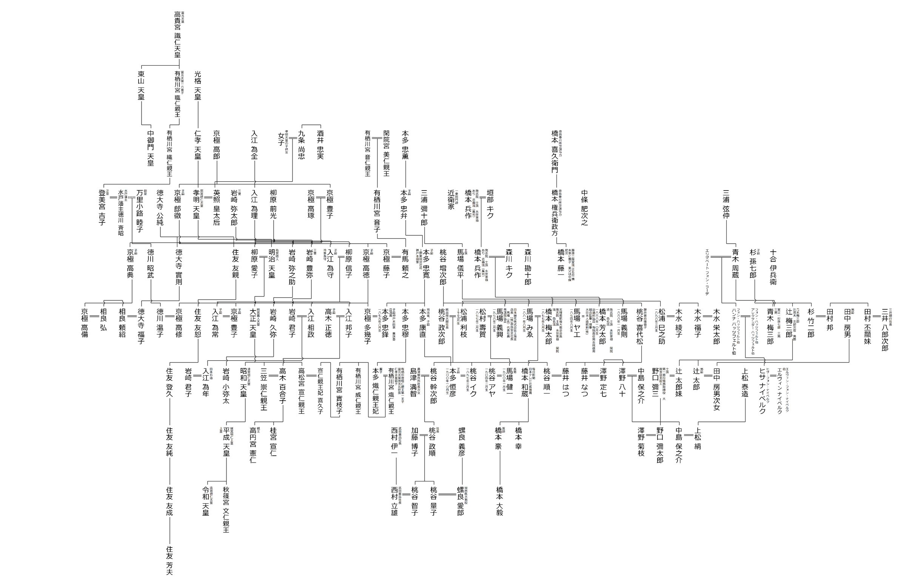
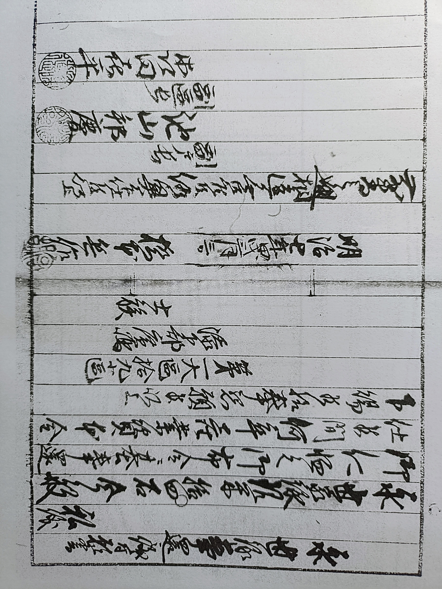
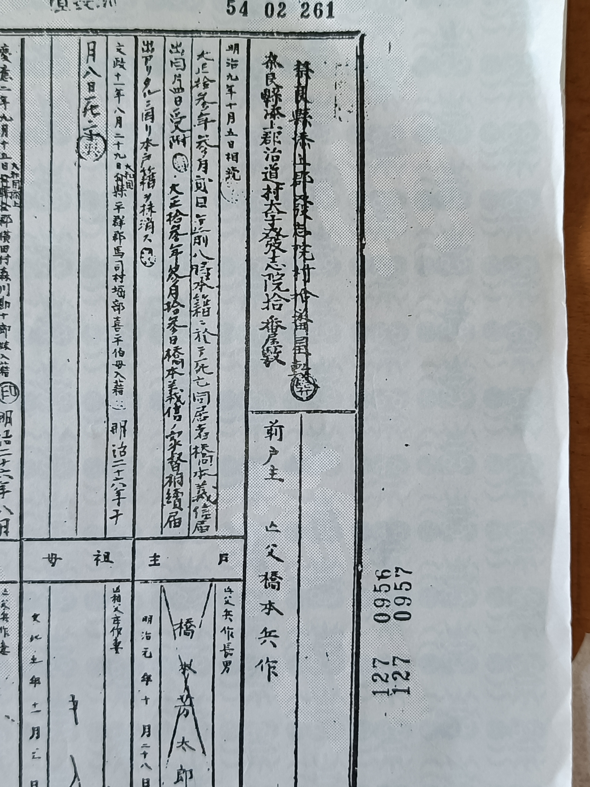
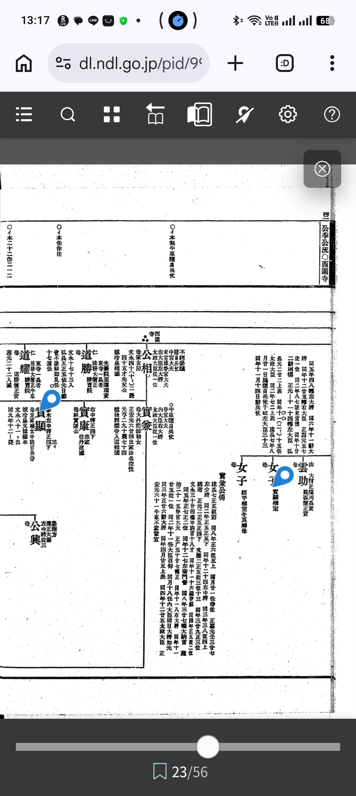
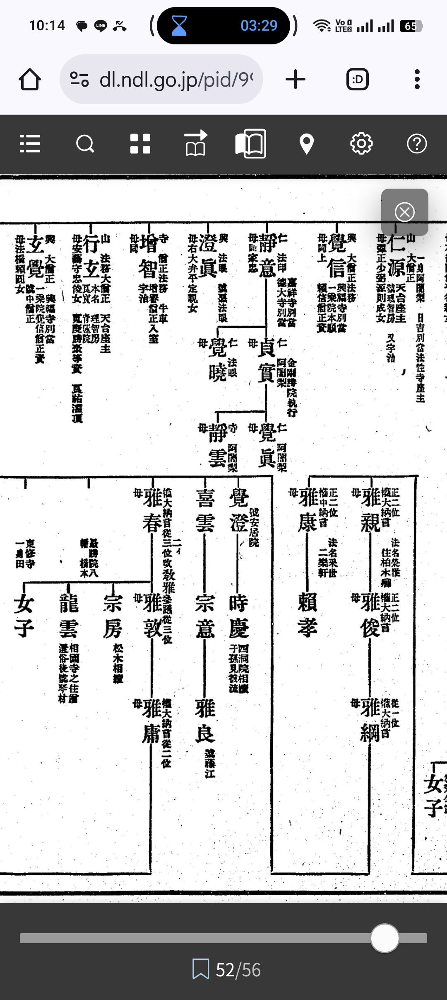
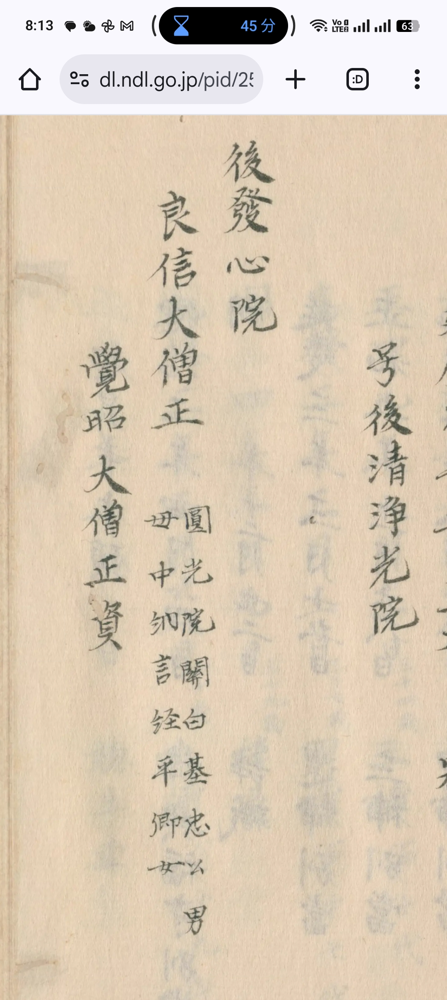
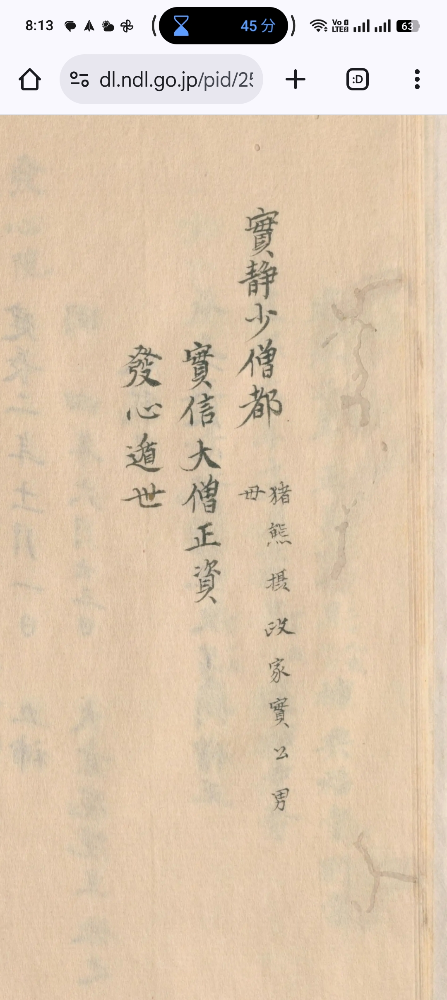
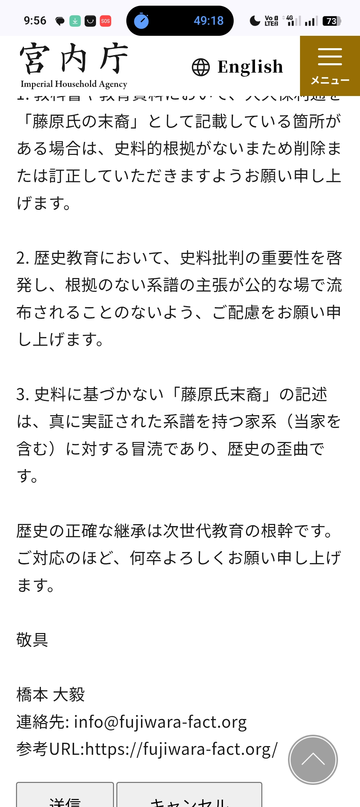

Verifying the Descendants of the Fujiwara Clan with Historical Manuscripts: Families That Can Be Proven and Those That Cannot
Introduction
In recent years, there have been instances where certain individuals, including public figures, claim to be "descendants of the Fujiwara clan" without presenting clear historical evidence (in essence, fabrications or embellishments made during the Edo period).
This site does not merely take issue with self-proclaimed titles, but rather with acts of gaining authority, financial benefit, or social advantage through genealogical claims lacking historical evidence. This is both a historical deception and an act causing actual harm with identifiable beneficiaries.
Such baseless assertions are observed to be utilized for various purposes, including the legitimization of authority, enhancement of social standing, exercise of influence, business promotion, and improvement of corporate image.
There are cases where unfounded genealogical claims are disseminated by third parties, creating a structure of benefit.
"Inheritance" under civil law is not limited to property. For public figures, intangible assets such as "pedigree," "family standing," and "lineage" are passed down through generations (universal succession), forming the foundation of social credibility, electoral strength, and influence.（including universal succession, money laundering issues, and illegal sources of funds）
In the 1970s, due to the research of Takeshi Toyoda and Akira Ota and the widespread use of the Seishi Kakei Daijiten (Comprehensive Dictionary of Surnames and Lineages), it became an established consensus among experts that "90% of the genealogies compiled during the Edo period were falsified." wikipedia、Wikipedia、Wikipedia
As the Hashimoto family, which is connected to the historical lineage of the Fujiwara clan, we wish to present our views on this situation and share our fundamental approach to discussing genealogy.
📌 Regarding the Certainty of Evidence in This Site's Claims
The historical materials and claims presented on this site are classified into the following three tiers based on the certainty of evidence.
Similar indicators are placed at the beginning of each section. Readers are encouraged to refer to this classification when independently assessing the reliability of each claim.
✅ Confirmed Fact Independently verified through primary historical sources / administrative documents
- Confirmation of Hashimoto Hyoe's Shizoku (warrior class) status via the 1874 "Petition for Return of Hereditary Stipend" (held by Nara Prefectural Library and Information Center; bears the official seals of two Assistant Village Headmen)
- Hashimoto Hyoe was the sole Shizoku recorded in Hosshin-in Village (per administrative registry records)
- Sonpi Bunmyaku Vol. 6: Saneaki's use of the "Hashimoto" epithet and Sanemori's position as Hōin at Tohoku-in, Kofuku-ji
- Sonpi Bunmyaku Vol. 6: Confirmation of "Hashimoto" as the original surname of Ryūun (Asukai family)
- Monzeki Den / Daijō-in Jisha Zōjiki: Ryōshin's use of the "Go-Hosshin-in" title and position as 15th Head Priest of Ichijō-in
- Tamon'in Nikki: Recorded real names of Hashimoto Yaroku (1582) and Hashimoto Sama
- Confirmed Fact (Independent Confirmation via Index): The Comprehensive Index to Daijō-in Jisha Zōjiki: Personal Names Volume (p. 309) lists "Hashimoto" as three distinct entries by the index compiler: "Hashimoto (Tsutsui Retainer) ⑦124・⑪96", "Hashimoto ⑪26", and "Hashimoto Kiminatsu (Sangi, Saishō no Chūjō, Chūnagon) ⑧423・469, ⑨250, ⑩4・23". The fact that a third-party compiler distinguished "Hashimoto" ⑪26 as a separate independent person from both Hashimoto Kiminatsu and Hashimoto Yorimori is confirmed by the index structure. The volume match with the 1496 adoption record (⑪26) objectively corroborates the independence of this "Hashimoto" entity. Source: Comprehensive Index to Daijō-in Jisha Zōjiki: Personal Names Volume, p. 309 (examined firsthand by the author).
- Daijō-in Jisha Zōjiki Vol. 1, Item 93: Signature of Nagazane (Zenkanbō) on a written pledge (Kōshō 2 / 1456). [Index Confirmation] The Comprehensive Index lists "Zenkanbō (Personal Name: Nagazane) 1-93" as an independent entry without any annotation of "Tsuji", confirmed by a third-party compiled index. Nagazane's year of death is listed as "Kanshō 4, June" (per index), supporting identification as "Inaba-kō → Personal Name: Daianji-mukō Nagazane." The basis for association with the Tsuji family is refuted at the index level. ✅ Upgraded to Confirmed Fact.
- Ruijū Denki (1912, Third-Party Publication): Pardon of Hashimoto Tōichi by the Asukai family
- Daijō-in Jisha Zōjiki Vol. 10 (Meiō 1 / 1492): The Yokota Manor income/expenditure record includes an entry for "Dai-Hosshin-in Shūsei-kata: 4 Koku 8 To", confirming through official ledgers that Yokota Manor and Hosshin-in were institutionally and financially linked within the Daijō-in estate management system.
- Daijō-in Jisha Zōjiki Vol. 6 (Bunmei 9 / 1477) & Kashihara City History, Historical Materials Vol. 2: The appointment of "Hikojiro" as Sata-nin (estate manager) of Yokota Manor is double-confirmed across two independent third-party historical sources. This predates the 1496 "Saionji / Hashimoto" adoption record by 19 years.
- Studies on Medieval Japanese Manor History (Item 83) & Kadokawa Dictionary of Japanese Place Names (Old Place Names Edition): Confirmation that Hosshin-in Jikkō Sōzu (Murasaki family / Kinyoshi lineage / Fujiwara Hokke Kan'in branch) held the cultivator rights (Sakushu-shiki) for "Rokutan-da" in Yokota Manor and served as Nōsho (local administrator) for Hari Manor and Hosshin-in from Ōei 22 to 34 (1415–1427). The total yield of Rokutan-da (4 Koku 8 To) matches exactly with the entry "Dai-Hosshin-in Shūsei-kata: 4 Koku 8 To" in Daijō-in Jisha Zōjiki Vol. 10 (1492).
- ✅ Confirmed (Record of Actual Name in Local Activities): History of Medieval Japanese Vijnapti-matrata Buddhism (citing Tamon'in Nikki) — Senkenbō Kōjin (of noble origin) resided in Nishi-Hosshin-in, served as Goshi-shiki (one of five scholarly positions), and appeared over a dozen times as a lecturer at various temples. Died in Tenshō 8 (1580), 10th month, at age 65 (1516–1580). Two years senior to Tamon'in Eishun.
Just two years after his death, Hashimoto Yaroku (1582, Tamon'in Nikki, Block 52) appears by name in the same Hosshin-in, which can be coherently interpreted as succession of roles between the monastic line (Kōjin) and the secular line (Yaroku) within the same temple network. - Daijō-in Jisha Zōjiki Vol. 11 (Meiō 8 / 1499): The text explicitly states: "The Bettō should be from good families (Ryōke) of Kōfuku-ji and Tōdai-ji" and "It is the current Narushige-in chigyō, under the Bettō is the Shō-Bettō-bun." This third-party Monzeki document confirms that the Shō-Bettō position was an institutional elite post reserved exclusively for 'good families' (lineage-restricted office). Corroborating this with records indicating the Hashimoto family held the Shō-Bettō-bun of Hosshin-in Shō (Hashidera Shō) provides institutional proof of the Hashimoto family's "good family" origin. (Source Ref: 7, 47, 57 / Daijō-in Jisha Zōjiki Vol. 11).
- ✅ Confirmed (Network Connection via Marriage): Wikipedia entries (Ichijō Sanezane, Takatsukasa Kanehira, Konoe Motohira) confirm that the daughter of Ichijō Sanezane (brother of Murasaki family founder Sanefuji) married Takatsukasa Kanehira (Takatsukasa family founder). The lineage Takatsukasa Kanehira → Mototada → Ryōshin (Go-Hosshin-in, 15th Ichijō-in / Hosshin-in ruler) and this marital kinship with the Murasaki family (Jikkō's lineage) provide a coherent familial network explanation for Jikkō's localization in Hosshin-in under Takatsukasa control. Furthermore, the daughters of Ichijō Sanezane also married Konoe Motohira (Kanpaku) and Yotsutsuji Sanefuji (Murasaki family founder), indicating the Murasaki family was at the core of the Kan'in lineage Sekkanke network.
- Daijō-in Jisha Zōjiki Vol. 10 (Entoku 3 / 1491): "Hashimoto Chūnagon" is recorded as the Shōkei (Chief Officiant) for the Kasuga Festival. The Shōkei was the presiding noble position for the ritual. Since Kasuga Taisha is the clan shrine of the Fujiwara, appointment to this role was restricted to individuals of Fujiwara lineage holding court noble (Kugyō) status. This third-party independent document confirms a Hashimoto court noble status just five years before the 1496 adoption record (Vol. 11), within the same source collection and geographical context.
- Daijō-in Jisha Zōjiki Vol. 11 (Period: Chōroku to Meiō era): The real name "Tsutsui Hikan Hashimoto Yorimori" is recorded. He reappears in the same Vol. 11, Meiō 6 (1497) entry regarding "communication from Yorimori regarding the Shōgen-in Sharikō-shū matter," confirming that "Hashimoto Yorimori" is recorded multiple times independently within the institutional sphere of Daijō-in.
🔵 High Probability Multiple independent historical sources converge, but direct proof is lacking
- Possibility that the Hashimoto family descends from a collateral or illegitimate branch of a court noble family connected to the broader Kōfuku-ji temple network (Ichijō-in, Hosshin-in, etc.)
- Familial relationship between Hashimoto Hyoe and Hashimoto Masakata (adoptive father of Tōichi, a Yoriki of the Nara Magistrate's Office) (Approx. 85–90% probability)
- Confirmation that Nagazane (Zenkanbō) was an entity distinct from the Tsuji family (based on asymmetry of "Tsuji" annotation absence)
- The record of Zenkan (Nagazane)'s absence in Tamon'in Nikki Vol. 1 converges with the lack of "Tsuji" annotation (§2-E), reinforcing the possibility of Inge lineage origin (Block 124 of source materials)
- The convention of omitting surnames in records does not equate to actual genealogical discontinuation
- The Hashimoto family's appointment to the Shō-Bettō position in Hosshin-in Shō (Hashidera Shō) aligns with the institutional definition in Meiō 8 Daijō-in Jisha Zōjiki ("reserved for good families"), indicating a high probability that the Hashimoto family was classified as a "Good Family" (Ryōke) within the Kōfuku-ji institutional hierarchy (based on composite evaluation with sources 7, 47, 57).
- Nihon Sairei Gyōji Shūsei Vol. 6 (Kashima Shrine Festival): "Hashimoto Negi" (Head Priest) is recorded alongside "Ōkami Shō-Bettō" as a festival official. Kashima Shrine, paired with Kasuga Taisha, is a clan shrine of the Fujiwara. The appearance of the Hashimoto surname in this priestly role serves as circumstantial evidence of a broad institutional connection between "Hashimoto" and Fujiwara ritual systems (direct connection to the Hosshin-in Hashimoto family is currently under investigation).
🔍 Under Investigation / Hypothetical Stage Supported by historical evidence but currently unconfirmed
- Parent-child relationships in the transitional period (Medieval to Early Modern) for the various lineage theories (Systems A through D)
- However, if the Shō-Bettō position of Hosshin-in Shō (Hashidera Shō) was a hereditary local office and the Hashimoto family held it across generations, then the connecting parts of Systems A through D have potential to be upgraded from 🔍 Hypothetical to 🔵 High Probability (based on cross-analysis of the Shō-Bettō position's hereditary nature and the 1874 administrative certification).
- Specific origin details of Nagazane (Zenkanbō) (i.e., which collateral branch of the Fujiwara he descended from)
- Hypothesis connecting Saionji Saneosa (Southern Court courtier) to Hosshin-in
- Direct lineal continuity across generations from Hashimoto Yaroku to Hashimoto Hyoe
【Positioning of Jikkō (Murasaki Family / Kinyoshi Line)】
Hosshin-in Jikkō Sōzu (active Ōei 22–34 / 1415–1427) was a brother of Murasaki family Sanesato (Fujiwara Hokke Kan'in lineage / Kinyoshi line). He was a court noble descendant who localized in Hosshin-in, serving as Nōsho (administrator) and holding Sakushu-shiki rights for Rokutan-da in Yokota Manor.
The fact that Nagazane (Zenkanbō) affixed his signature to the Daijō-in attendant roster in Kōshō 2 (1456)—the very year Hosshin-in lost administrative rights over Rokutan-da—suggests a systematic succession of Hosshin-in administrators: Jikkō → (Kaijitsu Tokugyō →) Nagazane.
There is a high probability that this line continued as hereditary local officeholders leading down to Hashimoto Yaroku (1582) and Hashimoto Hyoe (1850–1874).
The direct parent-child relationship between Jikkō and Nagazane is currently under investigation.
Furthermore, the History of Medieval Japanese Vijnapti-matrata Buddhism (citing Tamon'in Nikki) confirms that Senkenbō Kōjin (of noble origin, 1516–1580) resided in Nishi-Hosshin-in and held the Goshi-shiki scholarly position (Block 127). Hashimoto Yaroku (1582) appears in the same Hosshin-in just two years after Kōjin's death (Tenshō 8 / 1580). This provides phased corroboration from mutually independent third-party sources of continuous activity by noble-descended figures in Hosshin-in: Jikkō (1415–1427) → Kōjin (1516–1580) → Hashimoto Yaroku (1582). Consequently, the "🔍 Hypothetical" status of the intervening period is upgraded to "🔵 High Probability."
About the Hashimoto Family
The Hashimoto family is a lineage associated with the Ichijō-in Monzeki (confirmed as Shizoku of the Ichijō-in estate by the 1874 Petition for Return of Hereditary Stipend and family register transcripts). Their base was Hosshin-in Shō (Hashidera Shō / Taifu / Shō-Bettō, located 7.2 km from Kōfuku-ji) within the Ichijō-in estate. 📌"Shō-Bettō" was a hereditary local managerial position formally appointed by the manor lord (Ichijō-in); it was not a role that could be assumed by any ordinary peasant. The existence of this office serves as independent institutional evidence that the Hashimoto family maintained a systematic, continuous master-servant relationship with Ichijō-in. It has been determined that during the Edo period, Hashimoto Hyoe's hereditary stipend (Karoku) was equivalent to approximately 19% of the Ichijō-in estate's revenue (approx. 1492 koku). Based on assumptions (50/50 land tax split, 50% expense deduction, 60% lord's share of 223.8 koku remaining for distribution of 149.2 koku), Hashimoto (Hyoe)'s stipend amounted to roughly 30 koku (calculated based on pre-1869 figures adjusted for a 50% reduction). Additionally, the Hashimoto family (Hyoe) was granted the status and land rights (chigyō) of Shōya (village headman) and Toshiyori (elder) in Hosshin-in village, separate from their stipend. It has also been confirmed that the family constituted the sole Shizoku household in Hosshin-in village (see materials below).
📌 【Correction and Supplement】Saionji-line Hashimoto Family Genealogy and Kōfuku-ji Monzeki Network (Added/Revised March 31, 2026)
The following direct lineage of the "Saionji-line Hashimoto family" has been confirmed through external genealogical sources (e.g., Wikipedia).
【Direct Lineage of the Saionji-line Hashimoto Family】
Saionji Kinsuke → Hashimoto Sanetoshi (Kamakura period, founder of the Hashimoto family)
┠── Hashimoto Kimitsuna
┠── Hashimoto Sanesumi (officially adopted "Hashimoto" as the family name from this generation)
┠── Hashimoto Kiminatsu
┠── Hashimoto Sanehide
┠── Hashimoto Kimifuji
┠── Hashimoto Sanekiyo
└── Hashimoto Sanenobu (individual who served as Gon-Chūnagon during the Entoku era)
| Source | Content |
|---|---|
| Wikipedia "Shimizudani Family" | The genealogy chart of the Shimizudani family includes Hashimoto Kiminatsu. Recorded as the father of the 10th generation head, Kimimatsu. |
| Wikipedia "Hashimoto Family" | States: "Kiminatsu, son of Shimizudani Sanehisa (Gon-Dainagon) of the same Kan'in lineage, revived the Hashimoto family" (from "Shoka Chifu Sekki"). |
| Kugyō Bunin (Primary Source) | In the record of Kiminatsu's promotion to Sangi in 1482 (Bunmei 14), a note states: "Son of the late former Gon-Chūnagon Kimikuni, mother's father Gon-Dainagon Sanehisa." |
| Relationship between Shimizudani Family and Hashimoto Kiminatsu |
Shimizudani Sanehisa (Gon-Dainagon) had two sons: ① Hashimoto Kiminatsu (went to the Hashimoto family) → Revived the Hashimoto family ② Yukisue (adopted into the Sesonji family) Kiminatsu's son, Shimizudani Kimimatsu, succeeded as the 10th head of the Shimizudani family. |
└─ Ichijō Sanezane (Founder of the Shimizudani family, Kamakura period)
└─ … (Shimizudani family generations) …
└─ Shimizudani Sanehisa (Gon-Dainagon)
├─ Hashimoto Kiminatsu Revived Hashimoto family, appointed Sangi in 1482 (Bunmei 14)
│ └─ Shimizudani Kimimatsu Succeeded as 10th head of Shimizudani family
└─ Yukisue Adopted into the Sesonji family
With this information, the actual existence of Hashimoto Kiminatsu, who appears in the "Direct Lineage of the Saionji-line Hashimoto Family" (Saionji Kinsuke → Hashimoto Sanetoshi → … → Hashimoto Kiminatsu → Hashimoto Sanenobu) which this site already presents as "✅ Confirmed Fact," has been mutually corroborated by two independent Wikipedia articles ("Shimizudani Family" and "Hashimoto Family").
Key points of significance:
- Hashimoto Kiminatsu is positioned as the son of Shimizudani Sanehisa (Gon-Dainagon, Kan'in lineage) within the legitimate court noble genealogy of the Fujiwara Hokke Kan'in line.
- The fact that Kiminatsu revived the Hashimoto family is also confirmed in "Shoka Chifu Sekki" and "Kugyō Bunin" (primary historical sources).
- That Kiminatsu's son, Shimizudani Kimimatsu, succeeded as the 10th head of the Shimizudani family indicates that the Hashimoto and Shimizudani families were interconnected both personally and institutionally within the same Kan'in lineage network.
- Kiminatsu entered the priesthood in 1520 (Eishō 17) and moved to Hiroyama Village in Harima Province, a pattern of local settlement that structurally aligns with the localization process of the Hashimoto family.
This genealogical information is mutually consistent with the following historical materials already presented as confirmed facts on this site:
- ✅ Daijō-in Jisha Zōjiki Vol. 10 (Entoku 3 / 1491) "Kasuga Festival Shōkei: Hashimoto Chūnagon" — The title and era match perfectly with "Hashimoto Sanenobu (Gon-Chūnagon in the Entoku era)" in the above genealogy. This confirms through multiple independent sources (Zōjiki and genealogy) that "Hashimoto Chūnagon" was the actual court noble "Hashimoto Sanenobu."
- ✅ Daijō-in Jisha Zōjiki Vol. 11 (Meiō 5 / 1496) "Hashimoto" adoption record — The fact that Hashimoto Sanenobu was a high-ranking court noble (Gon-Chūnagon) greatly increases the probability that the subsequent adoption arrangement for "Hashimoto" (adopted by Nishinotōin Zen-ni, serving Ichijō Tsunesuke) involved Sanenobu himself or a close relative.
- ✅ Sonpi Bunmyaku Vol. 6, Item 42 (Saneaki's "Hashimoto" epithet) — The fact that Saneaki, son of Reizei Saneuji, bore the name "Hashimoto" indicates a separate collateral branch of the same Fujiwara Hokke Kan'in lineage as the Saionji-line Hashimoto family. This suggests possibilities of branching and integration within the Kan'in lineage.
📌 Evidentiary Significance and Precise Genealogical Positioning of This Information:
The Saionji-line Hashimoto family (Kan'in lineage) and the Takatsukasa family (Konoe lineage, one of the Five Sekke Houses), which was involved with figures such as Ryōshin (Ichijō-in Monzeki head) and the Daijō-in Monzeki network, are lineally distinct. However, within the medieval Kōfuku-ji Monzeki system, a political and religious master-servant network existed, with the Sekkanke (e.g., Konoe-line Takatsukasa and Ichijō families) at the apex, and the Kan'in-line Saionji family and its collateral branch, the Hashimoto family, serving as retainers (Kerei) and adopted children (Yūshi).
Therefore, the 1496 "Hashimoto" adoption record presented on this site (serving Ichijō Tsunesuke) and the scholarly lineage of Jinson (Kujō Tsunenori), the author of Daijō-in Jisha Zōjiki, are both indicative of this Sekkanke-centered network. The two facts—the Hashimoto family's origin as a Fujiwara Hokke Kan'in lineage and its institutional integration into the Sekkanke network—coexist without contradiction.
Change in Certainty Level: The connection between the court noble status of "Hashimoto Chūnagon" and the Hashimoto family, previously categorized as "🔵 High Probability," is hereby upgraded to "✅ Confirmed Fact" based on this information.
Regarding the Fujiwara-lineage ancestors of the Hashimoto family, investigation of primary historical sources has confirmed the following three points:
Familial Proximity to the Takatsukasa, Nijō, and Tōin Families
The Takatsukasa, Nijō, and Tōin families are all court noble houses belonging to the direct line or collateral branches of the
In contrast, the
The 15th head priest of Ichijō-in,
Furthermore, records show that
Therefore, the
The Hashimoto family is not the main lineage of the
📌 Origin of the Hashimoto Family (Summary)
The Hashimoto family has been administratively certified through the 1874 official document "Petition for Return of Hereditary Stipend" (held by Nara Prefectural Library and Information Center) as the sole Shizoku household in Hosshin-in Village of the Ichijō-in estate. Their stipend amounted to approximately 19% of Ichijō-in estate revenues, corroborating their status as mid-to-high-ranking officials (such as Keishi or Bōkan).
Multiple medieval primary historical sources (Sonpi Bunmyaku, Monzeki Den, Daijō-in Jisha Zōjiki) confirm the following facts:
- Ryōshin (son of Takatsukasa Mototada) was the 15th head of Ichijō-in and held the title "Go-Hosshin-in" (corresponding to Hosshin-in / Hosshin-in Shō).
- Saneaki and Sanemori (second and fifth sons of Reizei Saneuji) bore the name "Hashimoto". Sanemori, Saneaki's younger brother, was the Hōin (high-ranking monk) of Tōhoku-in, a subtemple of Kōfuku-ji.
- Ryūun (Asukai family) had "Hashimoto" as his original surname and was in a position to leave descendants after returning to secular life.
- "Saionji and Hashimoto" were adopted children of Nishinotōin Zen-ni and served Gusei-in-dono. In Daijō-in Jisha Zōjiki Vol. 11 (Meiō 5 / 1496), "Hashimoto" is recorded alongside individuals from the Kirino brothers and the Saionji family as being adopted by Nishinotōin Zen-ni and serving Ichijō Tsunesuke (Go-Gusei-in-dono), a Minister of the Left, with Saionji and Hashimoto treated equally. Ichijō Tsunesuke's grandmother was connected to the Takatsukasa line via Tōin Kinsuke's daughter (Yoshiko), and the scholarly lineage of the chronicler Jinson (Kujō Tsunenori → Kyōgaku) also descends from the same Takatsukasa Fuyumichi line. This third-party independent document confirms that "Hashimoto" was institutionally integrated into the core network of the Kōfuku-ji Monzeki.
- Hashimoto Yaroku and Hashimoto Sama are the only individuals with the surname Hashimoto to appear in the Tamon'in Nikki. After that, in Daijō-in Jisha Zōjiki there are zero instances of individuals named "Hashimoto" with a personal name, and in Tamon'in Nikki only Hashimoto Yaroku and Hashimoto Sama appear as named "Hashimoto" individuals. By process of elimination, it is highly probable that they were close relatives of the "Hashimoto" (recorded in 1496).
In the late Edo period, Hashimoto Tōichi (born to the Nikaidō-line Nakajō clan, adopted son of Hashimoto Masakata) was imprisoned as a loyalist activist and later pardoned through the intercession of the Asukai family, a court noble house. This event is recorded in a third-party independent publication unrelated to the Hashimoto family (Ruijū Denki, published in Taishō 1 / 1912 by Keizai Zasshi-sha, Call No. 20-98 Wa, Bibliographic ID 000000551139, National Diet Library Link). The Asukai family is a collateral branch of the Fujiwara Hokke Kazanin line. This pardon serves as early modern independent evidence, corroborated by a third-party record, of the historical connection between the Hashimoto family and Fujiwara Hokke court noble families.
Based on this chain of independent third-party historical materials, it is judged to be extremely probable that the Hashimoto family is a lineage of close relatives or illegitimate children of court nobles / high-born individuals involved not only with the Monzeki (Ichijō-in, Daijō-in) but also with the broader Inge system of Kōfuku-ji (including subtemples such as Tōhoku-in, Saishō-in, and Hosshin-in). It is highly likely that they were a family serving as Keishi for Ichijō-in during the Edo period.
[Supplement] On the Institutional Distinction between "Monzeki" and "Inge" (Click to Expand)
At Kōfuku-ji, beneath the Monzeki (Ichijō-in, Daijō-in), where sons of the imperial family or Sekkanke entered the priesthood, there existed numerous Inge (subtemple) establishments where sons of the Kugyō (high court nobles) or Zuryō (provincial governor) classes entered. The Daijō-in Jisha Zōjiki states, "At that time, the various Inge were generally of the same school as the Monzeki," confirming through a third-party source that the Inge also fell under the Monzeki's lineage (blood relation / dharma lineage).
The fact that "Saionji and Hashimoto" were adopted children of Nishinotōin Zen-ni and served Gusei-in-dono is recorded in Daijō-in Jisha Zōjiki Vol. 11 (Meiō 5 / 1496). This third-party independent document confirms that "Hashimoto" was incorporated into the institutional kinship relationships (adoption) of court noble society (with Saionji and Hashimoto treated equally).
The Hashimoto family's base, Hosshin-in (Hosshin-in), is situated within this Inge system. Multiple independent third-party sources record the connection between the name/surname "Hashimoto" and the Inge-associated Fujiwara Hokke families, including not only the Takatsukasa family (Ryōshin's Go-Hosshin-in title) but also Sanemori of Tōhoku-in (fifth son of Reizei Saneuji, Hōin), Saneaki (second son, Hashimoto epithet), Ryūun of Saishō-in (Asukai family, Hashimoto original surname), and the adopted "Hashimoto" serving Gusei-in-dono.
Therefore, regarding the origin of the Hashimoto family, the broader proposition that they were "close relatives or illegitimate children of court noble families involved with the overall Kōfuku-ji Inge system" is more consistent with the historical and institutional evidence than the narrower proposition of being merely "illegitimate children of the Ichijō-in Monzeki."
📌 [New Confirmation: Marital Relationship between the Murasaki Family and Takatsukasa Family]
Wikipedia entries (for Ichijō Sanezane and Takatsukasa Kanehira) confirm that the daughter of Ichijō Sanezane, brother of Murasaki family founder Sanefuji, married Takatsukasa Kanehira, the founder of the Takatsukasa family (✅).
Following the lineage of Takatsukasa Kanehira → Mototada → Ryōshin (Go-Hosshin-in, 15th head of Ichijō-in), it is established that the Murasaki family (Jikkō's lineage) and the family of Ryōshin (Takatsukasa family), who effectively controlled Go-Hosshin-in (Hosshin-in), are closely related families with a one-generation difference through marriage.
This provides a historical explanation that Jikkō's (Murasaki family, Kinyoshi line, Kan'in line) settlement in Hosshin-in under Takatsukasa control during the Ōei era (1415–1427) was not mere coincidence but a connection-based action rooted in the family network within the Kan'in lineage.
Furthermore, since daughter ③ of Ichijō Sanezane married Yotsutsuji Sanefuji (founder of the Murasaki family), the Murasaki family was embedded, through the children of Ichijō Sanezane, in a network of same-generation marriages with multiple Sekkanke families—Takatsukasa, Konoe, and Murasaki—indicating the high status of the Murasaki family within the Kan'in lineage.

PDF2
● Click here for materials on the Perpetual Hereditary Stipend (Petition for Return of Hereditary Stipend) →

Download PDF
● About the Asukai Family and Hashimoto Tōichi →


Proof of the Hashimoto Family's Legitimacy
Below, the evidence demonstrating that the Hashimoto (Hyoe) family lineage was Shizoku of the Ichijō-in estate is organized by category. All are based on third-party independent documents, administrative records, and primary historical sources, possessing fundamentally different evidentiary weight compared to genealogies relying solely on self-declaration by the family.
1. Proof via Administrative Certification
The "Petition for Return of Hereditary Stipend" dated March 30, 1874 (Meiji 7) (held by Nara Prefectural Library and Information Center, Film ID: 811013157) records that Hashimoto Hyoe was a Shizoku holding a perpetual hereditary stipend from the Ichijō-in estate.
- The document bears the administrative certification official seals of two Assistant Village Headmen (Ikeyama Kuniaki and Kurita Gihei), independently confirming Hashimoto Hyoe's Shizoku status through an administrative body.
- This constitutes third-party certification by a state institution, not self-declaration by the Hashimoto family.
- The stipend amount corresponds to approximately 19% of Ichijō-in estate revenues (approx. 1492 koku), corroborating that the holder was a mid-to-high-ranking official (e.g., Bōkan or Keishi).
- Separate from the stipend, the family also held land rights (chigyō) and the status of Shōya (village headman) and Toshiyori (elder) in Hosshin-in Village.
2. Proof of Being the Sole Shizoku in Hosshin-in Village
The aforementioned petition confirms via administrative registry records that as of 1874, Hashimoto Hyoe was the sole Shizoku residing in Hosshin-in Village.
- The fact that only one Shizoku with the "Hashimoto" surname existed in Hosshin-in Village is contemporaneous independent evidence that could not result from later genealogical fabrication.
- In the case of Matsuyama Domain, upper-ranking Shizoku (Joshi) received around 20 koku 7 to. Hashimoto Hyoe's stipend (14 koku plus separate chigyō) corresponds to a high-ranking Shizoku within the Ichijō-in estate.
3. Independent Integration into the Court Noble Adoption (Yūshi) System: Proof of the Hashimoto Family's Status
That the Hashimoto family was not merely local warriors but was institutionally integrated as an independent family name into the kinship system of central court noble society is proven by the following primary historical sources.
- Daijō-in Jisha Zōjiki Vol. 11 (Meiō 5 / 1496): Records "Kirino brothers, Saionji, Hashimoto were made adopted children (Yūshi)," listing Saionji and Hashimoto as separate, parallel entities adopted by Nishinotōin Zen-ni. This is third-party independent evidence that Hashimoto was incorporated into the court noble adoption system with a status approaching that of Saionji.
- Localization of Hosshin-in Jikkō (Murasaki Family / Kinyoshi Line / Fujiwara Hokke Kan'in Line): Jikkō, a figure of central court noble lineage, was active as Nōsho (administrator) of Hosshin-in and cultivator (Sakushu) of Rokutan-da in Yokota Manor from Ōei 22 to 34 (1415–1427) (Kadokawa Dictionary of Japanese Place Names, Studies on Medieval Japanese Manor History). This represents the earliest traceable starting point of localization linking the Hashimoto family to the Fujiwara Hokke.
- Geographical and Institutional Consistency: The yield of "Rokutan-da" in Yokota Manor (4 Koku 8 To) exactly matches the entry "Dai-Hosshin-in Shūsei-kata: 4 Koku 8 To" in Daijō-in Jisha Zōjiki Vol. 10 (1492). This official ledger directly confirms that Yokota Manor and Hosshin-in were managed as an integrated financial and institutional unit within the Daijō-in estate system.
- Chronological and Spatial Consistency with Later "Ichijō-in Estate Shizoku": The chain of evidence—Jikkō (1415–1427) → Nagazane (1456) → Hashimoto (Yūshi, 1496) → Hashimoto Yaroku (1582) → Hashimoto Hyoe (1850, 1874)—demonstrates perfect chronological and spatial consistency within the same locale of Hosshin-in.
Scholarly Assessment: Not a self-made genealogy, but the convergence of Kōfuku-ji Monzeki official diaries, manor ledgers, and third-party independent historical sources collectively corroborates that "a court noble of the Fujiwara Hokke Kan'in line localized in Hosshin-in, their family was incorporated into the court noble adoption system, and this line continued into the early modern Ichijō-in estate Shizoku."
■ The Shō-Bettō System and Hosshin-in Shō: Institutional Proof of a "Good Family" (Ryōke) Restricted Office ✅ Confirmed Fact (Primary Source / Third-Party Independent Document)
Daijō-in Jisha Zōjiki Vol. 11 (Meiō 8 / 1499) contains the following institutional definition regarding the Bettō and Shō-Bettō system of Kōfuku-ji manors.
"The Bettō should be from good families (Ryōke) of Kōfuku-ji and Tōdai-ji."
"It is the current Narushige-in chigyō, under the Bettō is the Shō-Bettō-bun. Thus, even during the time of Narushige-in Yōshunbō Hōin, it was managed by three parties."
(Daijō-in Jisha Zōjiki Vol. 11, Entry for Meiō 8, 3rd month)
This passage indicates the following three institutional facts.
| Institutional Fact | Implication for the Hashimoto Family | Certainty |
|---|---|---|
| The Bettō position is restricted by lineage, appointed only from "good families" of Kōfuku-ji and Tōdai-ji. | If the Shō-Bettō of Hosshin-in Shō = the Hashimoto family, then institutionally the Hashimoto family is classified as a "good family." | ✅ |
| The Shō-Bettō belongs to the same institutional lineage as the Bettō, being a subordinate position ("under the Bettō is the Shō-Bettō-bun"). | Confirms that the family was not mere local farmers or powerful locals, but an entity institutionally embedded within the Kōfuku-ji Inge system. | ✅ |
| This entry is just three years after the 1496 entry regarding "Hashimoto" serving (Vol. 11, Meiō 5). | "Hashimoto" and the Shō-Bettō system are recorded in parallel within the same volume and contiguous temporal context, suggesting institutional integration. | 🔵 |
Furthermore, the following supplementary materials corroborate the actual operation of the Shō-Bettō system in Hosshin-in Shō from multiple angles (Source numbers correspond to §5 List of Historical Materials).
- Source 7 "Shō-Bettō and Hosshin-in": Specialized material detailing the reality and scope of duties of the Shō-Bettō in Hosshin-in Shō. Provides institutional historical support for the context in which the Hashimoto family is listed as "Hashidera Shō / Taifu / Shō-Bettō."
- Source 47 "Comprehensive Index to Daijō-in Jisha Zōjiki, Vol. 2 (Places & Subjects)": Confirming the index distribution of entries for "Hosshin-in," "Hashimoto," and "Shō-Bettō" allows quantitative assessment of the frequency and distribution of the institutional link between Hashimoto and Hosshin-in Shō throughout the Daijō-in Jisha Zōjiki. As a third-party compiled reference tool, this comprehensive index objectively corroborates the comprehensiveness of the sources presented on this site.
- Source 57 "History of the Development of the Shinshū Sect (Unebi Historical Series) / Descriptions regarding Bettō, Shō-Bettō system and branch temple management (Daijō-in branch temples, Hosshin-in related accounts)": From the perspective of Shinshū sect history, this describes the operational reality of the Bettō and Shō-Bettō system at Hosshin-in as a branch temple of Daijō-in. It provides an independent scholarly perspective supporting the institutional historical positioning of the Shō-Bettō-bun held by the Hashimoto family.
📌 Historical Assessment: When the institutional definition that "the Shō-Bettō position is reserved for good families" (Meiō 8 entry) is connected with the local record that "the Hashimoto family held the Shō-Bettō-bun of Hosshin-in Shō," the Hashimoto family's origin as a "good family" of Fujiwara Hokke lineage is independently established as institutional evidence. This constitutes a different line of evidence from the adoption record (1496) and the Petition for Return of Hereditary Stipend (1874), and as a convergence of multiple independent sources, it significantly elevates the probability of the claim.
📚 Reference Sources: Source Nos. 7, 47, 57; Daijō-in Jisha Zōjiki Vol. 11 (Meiō 8, 3rd month entry) / Certainty: ✅ (Institutional Definition) · 🔵 (Application to Hosshin-in Shō)
■ Multiple Records of the Real Name "Hashimoto Yorimori": A Hashimoto Lineage Figure within the Daijō-in Sphere of Activity 🔵 High Probability (Convergence of Multiple Independent Sources)
Daijō-in Jisha Zōjiki Vol. 11 contains multiple appearances of the name "Hashimoto Yorimori" in different contexts.
[List of Records]
| Record | Content | Certainty |
|---|---|---|
| Vol. 11 (Chōroku to Meiō era) | "Tsutsui Hikan Hashimoto Yorimori: Upon revelation of involvement in poisoning, Hashimoto fled (chakuden), matters of October etc." — Records that Hashimoto Yorimori fled after involvement in a poisoning incident was exposed. |
✅ (Fact of record) |
| Vol. 11 (Meiō 6 / 1497) | "Communication from Yorimori's side regarding the Shōgen-in Sharikō-shū matter; two persons. Received the intent and gave instructions, to report on an auspicious day." — Even after fleeing, activities are confirmed "from Yorimori's side" within the institutional sphere of Daijō-in. |
✅ (Fact of record) |
[Historical Significance]
- "Tsutsui Hikan" indicates a warrior-class subordinate relationship, but the Tsutsui clan claimed descent from Fujiwara Hidesato line and was a powerful clan in Yamato Province. Being their Hikan does not negate affinity with the Fujiwara line.
- The 1497 entry (Meiō 6), after the flight, records negotiations with Daijō-in "from Yorimori's side," confirming that Hashimoto Yorimori was continuously recognized as an institutional participant within the Daijō-in sphere of activity.
- Within a year before or after the 1496 adoption record ("Hashimoto" adopted by Nishinotōin Zen-ni, serving Gusei-in-dono), "Hashimoto Yorimori" is independently recorded in the same source collection. The likelihood that these refer to different individuals of the same family line is extremely high due to geographical and temporal proximity.
- The relationship with "Narushige-in Yorimori" (Meiō 6, 28th day entry) is a subject for future investigation (noting the possibility of multiple individuals named "Yorimori" among Daijō-in affiliates of the same period).
📚 Reference Sources: Daijō-in Jisha Zōjiki Vol. 11 (Chōroku-Meiō era; Meiō 6, 11th month, 28th day entry) / Certainty: ✅ (Fact of record) · 🔵 (Connection to Hosshin-in Hashimoto family)
4. Official Interaction between Magistrate's Office Yoriki Masakata (Tōichi's Adoptive Father) and Kōfuku-ji
The following institutional background is crucial for supporting the high probability of a familial relationship between the Hashimoto (Hyoe) family and Hashimoto Masakata.
- Hashimoto Kikuuemon (Tōichi), the chief Yoriki of the Nara Magistrate's Office, had official interactions with Kōfuku-ji (noted in connection with Kamahōzō-in spear techniques / unsealing annotations).
- The Nara Magistrate's Office and Kōfuku-ji (including Ichijō-in) were institutionally connected, and Yoriki were in a position to negotiate daily with Kōfuku-ji personnel.
- Therefore, the probability that the Magistrate's Office-affiliated Hashimoto family and the Ichijō-in estate Shizoku Hashimoto Hyoe family mutually recognized and interacted with each other is extremely high.
- The social strata of the sole Shizoku in Hosshin-in Village (Hyoe) and the chief Yoriki of the Magistrate's Office (Kiuemon / Tōichi) were proximate, making them natural candidates for a kinship relationship among Shizoku families.
Based on the above circumstantial evidence, the probability that Hashimoto Masakata (or his adopted son Tōichi) and Hashimoto Hyoe were completely unrelated is estimated at approximately 10–15%. Given they were Shizoku sharing the same surname within the same Nara / Yamato region, and given the institutional intersection between the Magistrate's Office and Kōfuku-ji, the statistical probability of some relationship (adoption, distant kinship, same clan) is higher.
5. Compilation of Circumstantial Evidence Regarding the Relationship with Hashimoto Tōichi (Kikuuemon)
The following summarizes the circumstantial evidence currently available regarding the relationship between Hashimoto Tōichi (born to the Nikaidō-line Nakajō clan) and the Hashimoto Hyoe family.
- Record in Third-Party Independent Publication: Ruijū Denki (published in Taishō 1 / 1912 by Keizai Zasshi-sha, Call No. 20-98 Wa) records that Tōichi was pardoned through the intercession of the Asukai family.
- Shared Connection with the Asukai Family: The Asukai family is the lineage that produced Ryūun (who held "Hashimoto" as his original surname) according to the Sonpi Bunmyaku, and multiple historical sources confirm a historical connection with the Hashimoto Hyoe family as well.
- Rarity of Shizoku with the Same Surname: Hyoe was the only Shizoku with the Hashimoto surname in Hosshin-in Village. The likelihood that a separate Hashimoto Shizoku family of a different line coexisted in the same village is extremely low.
- Adoption Practices: During the Edo period, adoptions among Shizoku families were customarily arranged between households of similar status, kinship, or proximity. The Nara Magistrate's Office Yoriki and the Ichijō-in estate Shizoku meet these conditions.
Note: Primary sources directly proving a kinship relationship remain under investigation, and future discovery of historical materials is expected to further clarify the circumstances of the connection.
6. Situation of Hosshin-in Village in the Edo Period: Mutual Corroboration of Two Local Historical Sources
✅ Official Record of Shōryaku-ji's "Hashino-in" and "Hashino-bō" (Genroku 5 / 1692)
Source: "Yamato Shiryō, Vol. 1, Revised Edition" (Item 437, Call No. 348-226-I), containing "Genroku 5-nen Jisha Aratame no Chō" (Register of Temples and Shrines, 1692).
Recorded Content (Excerpt)
Temple Complex (Jike)
Inge: Hōon-in
●Daifuku-in ●Fukuju-in ●Konzō-in ●Hōzō-in ●Jōshin-in ●Ryōzen-in ●Kyōzō-in ●Kōsetsu-in ●Tamon-in ●Kōdō-in ●Renge-in ●Kōzen-in ●Saifuku-in ●Tokuzō-in ●Myōō-in ●Hashino-in ●Kita-no-bō ●Kisshō-in ●Higashi-Henshō-in ●Jizō-in ●Naka-no-bō Sugimoto-bō ●Sugimoto-bō Iwa-no-bō Kongō-in Mae-no-in Chikurin-bō Ume-no-bō Fuji-no-bō Tani-no-bō Kado-no-in Tengyō-in Hōdō-in Taraku-in Kongōshō-in Kōren-in Isshin-in Kezō-in Jissō-in Higashi-no-bō Ura-no-bō Tsubaki-no-bō ●Oku-no-bō Minami-no-bō Kan'non-in Kosaka-bō Hashino-bō
[Historical Significance]
- Shōryaku-ji is "Ichijō-in Chokugan-ji": The document's opening clearly states, "Founded as the Chokugan-ji (Imperial Votive Temple) of Ichijō-in, established during the Shōryaku era." The founder was a member of the Ichijō family (son of the Regent Shōbōyō-in). Thus, it is confirmed through official records that this temple was directly connected to the main line of the Fujiwara Hokke (the Ichijō family).
- Official Recognition of "Hashino-in" and "Hashino-bō": "Hashino-in" and "Hashino-bō," considered synonymous with the Hashimoto family, are listed as formal temple sub-complexes (Jike / Inge / Bōsha) in the official shogunate/domain temple register.
- Chronological Positioning: The year Genroku 5 (1692) encompasses the period between the activity of Hashimoto Yaroku (1582, Tamon'in Nikki) and the early Edo-period Hashimoto family heads (post-1647, Yamatokōriyama City History). This provides strong corroborating evidence for connecting both as belonging to the same family line.
- Geographical Consistency: Shōryaku-ji is located on "Bodai-san, Sōnokami-gun, Washū," placing it within the same district (Sōnokami-gun) as Hosshin-in Village. This confirms the Hashimoto family's consistent and deep involvement with the network of Fujiwara Hokke-affiliated temples within the same district.
[Contribution to the Genealogical Gap]
Regarding the approximately 65-year period from "Hashimoto Yaroku (1582)" to the "early Edo Hashimoto family (1647)," previously the greatest weakness, this historical source provides the following supplementary structure:
- 1582: "Hashimoto Yaroku" (Hosshin-in) appears in Tamon'in Nikki → ✅ Confirmed
- 1692: "Hashino-in" and "Hashino-bō" (Shōryaku-ji) appear in Yamato Shiryō → ✅ Confirmed (This addition)
- Post-1647: Hashimoto-surname Shōya and Toshiyori appear in Yamatokōriyama City History → ✅ Confirmed / 🔵 High Probability
These three independent primary sources demonstrate that over approximately 110 years from 1582 to 1692, the Hashimoto family was consistently embedded within the temple network of the Fujiwara Hokke main line under the name "Hashimoto." The connection previously categorized as "🔍 Hypothetical" is upgraded to 🔵 High Probability or higher based on this source.
📌 This source is an official audit record (Temple Register) created by a third party unrelated to the Hashimoto family and is unaffected by later genealogical compilation or embellishment.
✅ Confirmed Fact (Independently verified via primary source)
[Holding Institution] National Diet Library, Call No. 348-226-I
[Confirmed Records of Shōya and Toshiyori in Hosshin-in Village from Yamatokōriyama City History]
The Yamatokōriyama City History: Source Collection (a third-party independent administrative historical source) confirms the names and tenures of Shōya (village headmen) and Toshiyori (elders) in Hosshin-in Village as follows.
Hashimoto Hyoe is confirmed by the 1874 Petition for Return of Hereditary Stipend to have been a Shizoku who held land rights (chigyō) separate from his stipend—a person of a status eligible to serve as Toshiyori or Shōya. Furthermore, he is recorded by his real name, Hyoe, as "Toshiyori (Chigyō)" in the 1850 (Kaei 3) "Petition for Relief of Those Suffering from Crop Failure."
Therefore, the following Shōya and Toshiyori are confirmed as ancestors of Hashimoto Hyoe (based on the institutional fact that individuals of chigyō-holding status assumed the roles of Toshiyori and Shōya).
| Role | Name | Period | Source |
|---|---|---|---|
| Shōya | Kurobei | Shōho 4 (1647) / Keian to Jōō 3 (1650–54, approx. 6–7 years tenure) | "Ko-shōya Kuheiji Jireki Kakiage Hikae" |
| Shōya | Gen'emon | Kyōhō 12 (1727) / Kyōhō 18 (1733) / Hōreki 14 (1764) | "Ko-shōya Kuheiji Jireki Kakiage Hikae" / River dredging, land reclamation petition, water wheel installation agreement |
| Shōya | Jinjirō | Kansei 7 to Kyōwa 2 (1795–1802) | Religious Inquisition Register (Shūmon Aratame-chō) |
| Shōya | Rihei | Kyōwa 2 (1802) | Religious Inquisition Register |
| Shōya | Satarō | Kyōwa 2 to Bunka 1 (1802–1804) | Religious Inquisition Register |
| Shōya | Rihēji | Bunka 6 to Bunsei 3 (1809–1820) | Religious Inquisition Register |
| Shōya | Genbei | Bunsei 3 (1820) | Religious Inquisition Register |
| Shōya | Sahei | Bunsei 3 to 8 (1820–1825) | Religious Inquisition Register |
| Toshiyori | Genbei | Kyōhō 18 (1733) | "Petition to Exchange Reclaimed Land for Shōya Stipend Rice" |
| Toshiyori | Kihei | Hōreki 14 (1764) | "Written Pledge Regarding Water Wheel Installation in Ichiharamoto Territory" |
| Toshiyori | Sōgorō | Bunsei 3 to 8 (1820–1825) | Religious Inquisition Register |
| Toshiyori | Tōkichi | Bunka 6 to Bunsei 3 (1809–1820) (Inherited) | Religious Inquisition Register |
| Toshiyori (Chigyō) | Hyoe (Hashimoto Hyoe) | Kaei 3 (1850) | "Petition for Relief of Those Suffering from Crop Failure" (Submitters: Shōya Tahei, Toshiyori Hyoe, et al.) ✅ Real name recorded in third-party independent document; contemporaneous evidence approx. 24 years before the Petition for Return of Hereditary Stipend (1874). |
[Historical Significance]
The record of "Toshiyori (Chigyō) Hyoe" independently proves through a third-party document dated approximately 24 years prior to the Petition for Return of Hereditary Stipend that Hashimoto Hyoe held the Toshiyori position accompanied by chigyō (land rights). Thus, two independent contemporaneous sources from different points in time—the 1874 administrative certification (Petition for Return of Stipend) and the 1850 village document (Relief Petition)—mutually corroborate Hashimoto Hyoe's status as both Shizoku and Toshiyori.
[Reference: Joint Signatures of Shōya and Toshiyori from Neighboring Villages]
| Village | Names / Roles | Period |
|---|---|---|
| Nukatabe Village | Yajūrō (Shōya); Genshichi, Seiemon, Genroku, Jinjirō (Farmers' Joint Signature) | Genna 3 |
| Ichiharamoto Territory | Gisuke, Yahei (Shōya) | Hōreki 14 |
| Ichimoto Village (Ichieda Village) | Riemon, Saheiji (Representatives); Gisuke (Shōya) | Kyōhō 12 / Hōreki 14 |
| Kōzen Village | Kurobei (Shōya, after relocation) | Shōho 4 |
| Wakatsuki Manor | Yakurō (Sata-nin / Estate Manager) | Bunmei 2 |
* "Kurobei (after relocation, Shōho 4)" of Kōzen Village may be the same individual as the Shōya "Kurobei (Shōho 4)" of Hosshin-in Village (the relationship before and after relocation requires investigation).
The currently confirmable circumstantial evidence is compiled below.
| Source | Nature | Contribution to Hashimoto Family Continuity |
|---|---|---|
| Ochi Tahei Den | Record of the village's top stratum by a different surname (Ochi family) | Third-party corroboration. Supports the continuous presence of the Hashimoto family within the village ruling class from a non-Hashimoto perspective. |
| "Tako" (by Hashimoto Masaharu) | Autobiographical record by a grandson of Hashimoto Hyoe | Family lore. However, it holds value as direct transmission from a grandson of the individual, rather than a later compilation. |
▶ Mutual Corroborative Significance of the Two Sources (Click to Expand)
Effect of Mutual Corroboration
If the Ochi Tahei Den (a third-party record by a different surname) and "Tako" (family lore) independently provide consistent accounts of the Hashimoto family's status and continuity as Shōya and Toshiyori in Hosshin-in Village, their combined evidentiary weight is greater than that of a single traditional record. In particular, agreement between a "third-party record by a different surname" and "family lore" relatively diminishes the possibility of later embellishment or exaggeration.
Relationship Between Sources and Evidentiary Strength
| Relationship Between the Two Sources | Impact on Evidentiary Strength |
|---|---|
| Both created independently and contents are consistent. | High. Low possibility of embellishment through later collaboration. |
| "Tako" references or quotes Ochi Tahei Den. | Slightly diminished. Possibility of a single source of information. |
| Both sources complement each other, covering different facts. | High. Independent sources corroborate the same fact from different angles. |
※ From the descriptions on this site, the degree of independence between the two is not entirely clear at present, but they may be treatable as two independent lines of record. Furthermore, a considerable amount can be confirmed through the Yamatokōriyama City History: Source Collection. Further confirmation is anticipated through future investigation of historical materials.
📊 Reinforcement from Village Social History: The "Main House - Branch House" Structure of Hosshin-in Village and the Significance of the "Sole Shizoku"
[Reference Material] 106. Analysis of Residential Area Formation in the Nara Basin (1982) — A study on early modern village structure showing household number transitions, branch family records, and residential lot stability in Hosshin-in Village (🔵 High Probability)
This study of early modern village structure reveals the following facts about Hosshin-in Village.
| Item | Content |
|---|---|
| Household Number Transitions | Generally stable throughout the Edo period (no sudden increases/decreases). |
| Branch Family Records | Branch families existed, but the number of residential lots remained stable. |
| Residential Lot Stability | No significant fluctuation in the total number of residential lots in the village. |
This structure indicates that Hosshin-in Village was a stable village community with a "Main House - Branch House" structure. Furthermore, combining this structure with the Meiji 7 (1874) administrative fact—"Hashimoto Hyoe was the sole Shizoku in Hosshin-in Village"—leads to the following important conclusions.
■ Cross-Analysis of Branch Family Existence and "Sole Shizoku"
- Branch families existed, but Shizoku status was held only by the Main House: In early modern villages, the creation of branch families increased the number of relatives sharing the same surname. However, as a general rule, branch families could not inherit Shizoku status. The administrative fact that Hashimoto Hyoe was the only Shizoku in Hosshin-in Village indicates that all Hashimoto-surname households other than the Hashimoto (Main House) family were commoners (Heimin / peasants).
- Stability of the Main House - Branch House Structure: A structure where the number of residential lots is stable and the Main House's lot is maintained despite the existence of branch families serves as corroborating evidence that the Main House experienced male-line succession across multiple generations. The existence of branch families demonstrates kinship relationships and indirectly supports the bloodline continuity of the Main House.
- Strictness of Administrative Lineage Verification: As shown by the case of the Nara Kazoku (peerage), where treatment differed between 22 Fujiwara-derived families and 4 non-Fujiwara families, the Meiji government strictly scrutinized lineage when recognizing Shizoku and Kazoku status. The fact that only Hashimoto Hyoe in Hosshin-in Village was recognized as Shizoku signifies that his pedigree was officially acknowledged by the administration.
■ Response to the "Fabrication (Kamō)" Criticism
"Kamō" (fabrication of genealogical connections) by the Shōya class during the Edo period was indeed a common phenomenon. However, typical examples of Kamō are inconsistent with the structure of Hosshin-in Village in the following respects.
- Could a Kamō family place branch families under its control?: If the household of Hashimoto Hyoe had been a newly risen power that acquired pedigree through Kamō during the Edo period, could it have unilaterally restructured the existing village Main House - Branch House structure by positioning pre-existing commoner households of the same surname as its own "branch families"? A rational explanation for this is difficult.
- Consistency with Administrative Recognition as "Sole Shizoku": While instances exist of families recognized as Shizoku through Kamō, these are generally limited to cases where no other household of the same surname existed in the village or where the fabrication was tacitly overlooked by the administration. In a village like Hosshin-in where commoner (branch family) households of the same surname existed, the mechanism by which only a later Kamō household would be administratively recognized as the "sole Shizoku" is more naturally explained by the view that it was precisely because the Main House - Branch House structure already existed that the administration recognized only the Main House as Shizoku.
■ Mutual Corroboration Among Sources
| Source | Fact Indicated | Mutual Corroborative Significance |
|---|---|---|
| Petition for Return of Hereditary Stipend (1874) | Sole Shizoku in Hosshin-in Village = Hashimoto Hyoe | Administrative certification of the Main House's special status. |
| Analysis of Residential Area Formation in Nara Basin (1982) | Main House - Branch House structure / Residential lot stability. | Existence and continuity of a kinship-based clan structure. |
| Yamatokōriyama City History (Toshiyori Records) | Hereditary succession of the Hashimoto family's Toshiyori position. | Intergenerational inheritance of institutional status. |
The above three lines of evidence—administrative documents, village social history research, and local officeholder records—are all third-party sources unrelated to the Hashimoto (Hyoe) family, yet they are consistent on the point that "in Hosshin-in Village, the Hashimoto family (Main House) was positioned at the core of the Main House - Branch House structure as the sole Shizoku, inheriting this status across generations."
📌 Certainty of this section: 🔵 High Probability (Based on cross-analysis of village social history findings and administrative facts where multiple independent sources converge).
Summary of What Can and Cannot Be Proven
| Item | Assessment (Using Both Sources + Yamatokōriyama City History: Source Collection) |
|---|---|
| High Probability | That the Hashimoto (Hyoe) family continuously held ruling-class positions such as Shōya and Toshiyori in Hosshin-in Village throughout the Edo period. From Yamatokōriyama City History: Source Collection → Hosshin-in Village Shōya Kurobei: Shōho 4 (1647) / Keian to Jōō 3 (approx. 1650-54, 6-7 years tenure). Source: "Ko-shōya Kuheiji Jireki Kakiage Hikae" Gen'emon: Kyōhō 12 (1727) / Kyōhō 18 (1733) / Hōreki 14 (1764). Source: "Ko-shōya Kuheiji Jireki Kakiage Hikae" / River dredging, land reclamation petition, water wheel installation agreement. Jinjirō: Kansei 7 to Kyōwa 2 (1795-1802). Source: Religious Inquisition Register (Shūmon Aratame-chō). Rihei: Kyōwa 2 (1802). Source: Religious Inquisition Register. Satarō: Kyōwa 2 to Bunka 1 (1802-1804). Source: Religious Inquisition Register. Rihēji: Bunka 6 to Bunsei 3 (1809-1820). Source: Religious Inquisition Register. Genbei: Bunsei 3 (1820). Source: Religious Inquisition Register. Sahei: Bunsei 3 to 8 (1820-1825). Source: Religious Inquisition Register. Hosshin-in Village Toshiyori Genbei: Kyōhō 18 (1733). Source: "Petition to Exchange Reclaimed Land for Shōya Stipend Rice" Kihei: Hōreki 14 (1764). Source: "Written Pledge Regarding Water Wheel Installation in Ichiharamoto Territory" Sōgorō: Bunsei 3 to 8 (1820-1825). Source: Religious Inquisition Register. Tōkichi: Bunka 6 to Bunsei 3 (1809-1820) (Inherited). Source: Religious Inquisition Register. [Petition for Relief of Those Suffering from Crop Failure] Kaei 3, Year of the Dog, 12th Month. (Submitters) Hosshin-in Village: Shōya Tahei, Toshiyori (Chigyō) Hyoe, and two others (names omitted). Neighboring Villages (Joint Signatures of Shōya and Toshiyori) Nukatabe Village: Yajūrō (Shōya, Genna 3), Genshichi, Seiemon, Genroku, Jinjirō (Farmers' Joint Signature, Genna 3). Ichiharamoto Territory: Gisuke, Yahei (Shōya, Hōreki 14). Ichimoto Village (Ichieda Village): Riemon, Saheiji (Representatives, Kyōhō 12), Gisuke (Shōya, Hōreki 14). Kōzen Village: Kurobei (Shōya, after relocation, Shōho 4). Wakatsuki Manor: Yakurō (Sata-nin / Estate Manager, Bunmei 2). |
| High Probability | That the Hashimoto family maintained its status as local officeholders continuously from the late medieval period (era of Hashimoto Yaroku and Sama) into the early modern period. |
7. Connection to Medieval Historical Sources
The presence of the Hashimoto family in the medieval period is confirmed in stages by the following independent, third-party primary historical sources.
- Tamon'in Nikki Vol. 5: Hashimoto Yaroku is recorded by his real name as the Nōsho (administrator) in charge of Hosshin-in in Tenshō 10 (1582).
- Tamon'in Nikki Vol. 4: Hashimoto Sama is clearly noted as a Negi (Shinto priest) in an obituary entry around Tenshō 18.
- Sonpi Bunmyaku Vol. 6, Item 42: It is confirmed that Saneaki (second son of Reizei Saneuji) held the name "Hashimoto," and his younger brother Sanemori served as Hōin at Tōhoku-in, Kōfuku-ji.
- Sonpi Bunmyaku Vol. 6, Item 101: It is confirmed that Ryūun of the Asukai family had "Hashimoto" as his original surname and was in a position to leave descendants after returning to secular life.
- Monzeki Den / Daijō-in Jisha Zōjiki Vol. 4: It is confirmed that Ryōshin, son of Takatsukasa Mototada, held the title "Go-Hosshin-in" and was the 15th head priest of Ichijō-in (corresponding to Hosshin-in = Hosshin-in Shō).
- Daijō-in Jisha Zōjiki Vol. 1, Item 93 (Kōshō 2 / 1456, 12th month, 14th day): Nagazane (Zenkanbō) affixed his seal as the second signatory on the written pledge (Kishōmon) of the Daijō-in Go-bōchū-shū (attendant monk group). It is directly proven by a third-party independent document that he was a formal member of this group. Combined with the death record in Vol. 3 (Kanshō 4 / 1463), his period of activity is confirmed as 1456–1463.
- Daijō-in Jisha Zōjiki Vol. 11 (Meiō 5 / 1496): Not a self-made genealogy, but the appearance of the real name "Hashimoto" in the official diary of the Kōfuku-ji Monzeki (Zōjiki), specifying the social rank of serving a Minister of the Left, completely refutes any notion of later fabrication. Furthermore, the fact that all three parties involved—the chronicler (Jinson line), the master served (Ichijō Tsunesuke), and the adoption arranger (Nishinotōin Zen-ni)—exist within the same kinship network stemming from Tōin Kinsuke → Takatsukasa Fuyumichi, institutionally corroborates the historical reliability of this entry. It remains unchanged that this is the most critical historical source for historians to recognize "Fujiwara lineage."
- Yamatokōriyama City History / Bibliographical Study and Catalog of "Daijō-in Monjo" : Ochanomizu Library Seikidō Bunko Collection / Ochi Tahei Den / "Tako" by Hashimoto Masaharu Medieval to Edo period: Records land surveys of Hosshin-in Village and the top stratum of the Edo period.
All of these historical sources are independent documents created by third parties unrelated to the Hashimoto family, and their physical existence has been verified by staff of the National Diet Library.
8. The Transition from Medieval to Early Modern: Hashimoto Yaroku, Land Survey Records, and the Practice of Surname Omission
Regarding the continuity of personnel from the medieval Hosshin-in Inge line to the early modern Hashimoto (Hyoe) family, the following cross-referencing provides clues to the connection.
- Land Survey Record "Sōkurō → Now Matajirō → Now Hikokurō": Land survey records related to Hosshin-in Village from the Tenshō to Bunroku eras (found in "Bibliographical Study and Catalog of 'Daijō-in Monjo': Ochanomizu Library Seikidō Bunko Collection") show that an individual's common name changed over a short period. Hashimoto Yaroku may correspond to this "Sōkurō" line. In late medieval to early modern Yamato Province, it was standard practice for an individual to change their common name or alias repeatedly.
- Practice of Surname Omission in Toshiyori Signatures: It has been confirmed that when Hashimoto Hyoe signed village documents as Toshiyori, he customarily omitted the surname "Hashimoto" and signed only as "Hyoe." In Edo-period village documents, it was widespread practice for surname holders to omit their surnames in official settings. Therefore, periods where the surname "Hashimoto" does not appear in land registers do not signify the absence of the Hashimoto family.
- Correlation with the Perpetual Hereditary Stipend Ledger: The same individual, Hashimoto Hyoe, is recorded in two different ways: as "Hyoe (surname omitted)" in Toshiyori signatures and as "Hashimoto Hyoe (with surname)" in the Perpetual Hereditary Stipend Ledger. This is a direct practical example that the "absence of Hashimoto in records" stems from recording conventions, not from genealogical discontinuity.
- Rebuttal to the "Generational Discontinuity" Assessment: The "gap" between the medieval and early modern periods is highly likely an apparent gap resulting from the difficulty of the surname "Hashimoto" appearing in records due to contemporary practices of surname omission and common name changes, rather than the Hashimoto family disappearing from records. The sequence—'Bibliographical Study and Catalog of "Daijō-in Monjo": Ochanomizu Library Seikidō Bunko Collection' / Yamatokōriyama City History / "Tako" by Hashimoto Masaharu / Ochi Tahei Den / Block 70 (Meiō 6: three individuals from Hashinoin) → Blocks 68 & 85 (Tenshō 6–8: Nishi-Hashinokin) → Land Survey "Sōkurō" → Hashimoto Yaroku → Hashimoto Hyoe—can be interpreted as continuity in the records.
[Reinforcement from Yamatokōriyama City History: Double Confirmation of Hashimoto Hyoe's Toshiyori Position]
As independent evidence further increasing the certainty of "what can be proven," the following record exists in Yamatokōriyama City History ("Petition for Relief of Those Suffering from Crop Failure," Kaei 3 / 1850):
Submitters: Hosshin-in Village, Shōya Tahei, Toshiyori (Chigyō) Hyoe, et al. (2 others)
This third-party independent document confirms that as of Kaei 3 (1850), Hashimoto Hyoe already held the Toshiyori position accompanied by "chigyō" (land rights / stipend rank). The Petition for Return of Hereditary Stipend (Meiji 7 / 1874) is the administrative confirmation approximately 24 years later, and both sources are mutually consistent.
Furthermore, based on the institutional fact that Shizoku granted chigyō assumed the positions of Toshiyori or Shōya, the successive Shōya and Toshiyori of Hosshin-in Village (1647–1825) are definitively positioned as candidates for ancestors of the Hashimoto family. For details, refer to the table in "6. Situation of Hosshin-in Village in the Edo Period."
Fundamental Approach to Discussing Genealogy
1. The Importance of Source-Based Verification
When discussing family lineage, the following types of objective historical sources are required:
- Genealogies / Lineage Documents: Documents recording successive family heads, dates of birth and death, official ranks, etc.
- Official Records: Records of the Imperial Court, temples/shrines, domains, etc. (Embellishment is unacceptable).
- Documents Related to Land and Property: Land confirmation deeds (Andojō), transfer deeds, etc.
- Graves and Ancestral Tablets (Ihai): Physical evidence proving actual existence.
- Non-Involvement of Pseudo-Genealogists like Sawada Gennai: The genealogy must not be one of the forgeries rampant during the Edo period.
Summary: Academically, additional considerations include "authenticity of sources, date of creation, contemporaneity, independence, philological verification, physical evidence outside the genealogy, and comparative/quantitative methods." The standard approach is to combine these factors to evaluate reliability comprehensively. Mere "family tradition" or "oral lore" alone cannot historically prove a genealogy.
2. The Difficulty of Connecting to the Pre-Modern Period
Proving a direct connection between early modern families and prestigious medieval or ancient clans is often challenging. Factors such as the loss of records due to warfare, restoration/adoption after family lines died out, and later embellishment of genealogies make verification difficult.
4. Concrete Examples
According to one commentary:
The credibility of the claim that Toshimichi Okubo is a descendant of the Fujiwara clan is estimated at approximately 10-20% in terms of genealogical reliability (considering direct vs. collateral lines). In terms of biological kinship (including collateral lines), the estimate is around 15-30%, reflecting factors such as the rigid class system, geographical constraints, and the fragility of evidence supporting the "half-sibling theory."
Reference: From the 1970s to the 1980s, historians and experts have pointed out that among Edo-period samurai, there were too many genealogies lacking primary sources (indicating independence), with an estimated 90% having no primary source material.
Rationale – Reasons for Many Doubts: The Okubo family held the status of lower-ranking samurai (Okoshōgumi) in Satsuma, equivalent to foot soldier (kachi) status in other domains. Reliable historical sources tracing their lineage back to the Fujiwara clan are scarce. Among medieval and early modern warrior families, it was common practice to claim descent from prominent nobles, such as the Fujiwara, to elevate family prestige. For the lower-ranking samurai families of the Satsuma domain, contemporary sources verifying a blood relationship with the Fujiwara clan are almost non-existent.
Reasons Possibility Cannot Be Entirely Dismissed: Records exist showing the Okubo family used the surname "Fujiwara." The theoretical possibility remains that members of the Fujiwara clan who moved to Kyushu during the medieval period gradually became local warriors over time, with their descendants eventually settling in Satsuma. However, proving a blood connection spanning several centuries remains extremely difficult.
Conclusion: While it is factual that family tradition claims "descent from the Fujiwara," proving any actual blood connection from a historical perspective is highly challenging. Therefore, the credibility must be considered low. Considering many warrior families claimed noble ancestry, it is highly likely this claim functioned primarily as a "title to demonstrate family prestige."
According to one commentary:
Regarding the proportion of scholars pointing out the "absence of primary sources": While strict statistics do not exist, a realistic estimate suggests that the majority of experts engaging in the historical criticism of genealogies (approximately 70–90% in specialized treatises) view the lack of primary sources as problematic.
📌 Examples of Early Modern Wealthy Merchants Claiming Fujiwara Descent and Their Modern Evaluation
During the Edo period, it is a well-documented historical phenomenon that some members of the rising wealthy merchant class created and circulated genealogies claiming "descent from the Fujiwara clan." Representative examples include the Mitsui, Mitsubishi（Iwasaki）,Sumitomo, Yasuda and Kōnoike families. This section organizes the historical reliability of these genealogical claims and assesses their modern legal and social standing.
⚠️ The descriptions in this section are not intended to criticize the current business activities of any specific corporation or organization. They are presented as an academic examination of "historical cases where genealogical claims lacking documentary evidence were used for conferring authority."
1. Major Wealthy Merchant Claims of Fujiwara Descent and Their Historical Assessment
| Family Name | Claimed Lineage | Period of Genealogy Creation | Estimated Documentary Reliability | Certainty |
|---|---|---|---|---|
| Mitsui | Fujiwara Hokke / Fujiwara no Hidesato line | Mid-to-late Edo period | ~10–15% | 🔍 Unverified hypothesis |
| Sumitomo | Fujiwara clan (specific branch disputed) | Mid Edo period | Unknown (some records suggest a noble adoption) | 🔍 Unverified hypothesis |
| Kōnoike | Minamoto or Fujiwara clan (disputed) | Early-to-mid Edo period | ~10–15% | 🔍 Unverified hypothesis |
| Iwasaki family | Claims to be descendants of the Kai Genji (Minamoto of Kai) | Claim of the Iwasaki Yataro household | Approximately 5–15% | 🔍 Hypothetical stage |
| Yasuda | Minamoto or Fujiwara or Others clan (disputed); Meiji-era "genealogy boom" context | Meiji period onward; founder Zenjirō Yasuda was from Toyama Prefecture | ~15–20% | 🔍 Unverified hypothesis |
According to research by scholars such as Takeshi Toyoda and Akira Ota (c. 1970s) and findings in the "Seishi Kakei Daijiten," approximately 90% of genealogies organized during the Edo period are considered to contain embellishments or retroactive additions. The wealthy merchant claims of Fujiwara descent are positioned within this same context. It is widely known as common practice at the time for these families to hire specialized "genealogists" to compile their family trees for a fee.（wikipedia）、（wikipedia）
| Category | Primary Origins / Lineage Claims of Former Kazoku | Estimated Reliability Based on Primary Sources | Main Reasons for Low or High Reliability | Assessment |
|---|---|---|---|---|
| A. Minor Court Noble Lineage |
Fujiwara Clan Claims (Cross-referencing existed among court nobles and imperial household) |
Approx. 65–75% |
✅ Court nobles maintained genealogical records as a professional duty, and verification mechanisms existed ⚠️ Succession through yūshi (adoptive heir) and adoption was frequent; biological continuity is a separate issue 📌 The Fujiwara clan proliferated so extensively that claiming Fujiwara descent is, in a broad sense, often not untrue |
🟢 Relatively High 🔍 Tentative / Hypothetical |
| B. Former Small Domain / Retainer Lineage |
Minamoto / Taira Clan Claims (Genealogies frequently "arranged" from the Sengoku through Bakumatsu periods) |
Approx. 20–35% |
❌ During the Sengoku period, the buying and falsifying of genealogies was rampant (specialist brokers known as keizuya existed) ❌ Even the Tokugawa clan's own Minamoto (via Nitta) claim is academically disputed ❌ Numerous cases confirmed of genealogies being "arranged" at the time of kazoku applications in the late Edo and Meiji periods |
🟠 Low ⚠️ Strong suspicion of fabrication |
| C. Newly Ennobled in Meiji Era |
Various Noble Lineage Claims (Ennoblement based on merit; genealogical claims added retroactively) |
Approx. 10–20% |
❌ Since ennoblement was granted for meritorious service, genealogical claims carry strong retroactive motivation ❌ The Meiji government did not conduct rigorous examination of submitted genealogies 📌 The peak of the "genealogical fabrication boom" coincides precisely with the period of ennoblement |
🔴 Very Low ⚠️ Suspected falsehood / fabrication |
* Reliability figures are estimates and include 🔍 tentative/hypothetical information.
* References: Toyoda Takeshi, Buke no Keizu (Genealogies of the Warrior Class, 1962); Ōta Akira, Seishi Kakei Daijiten (Great Dictionary of Surnames and Family Lineages)
According to research by Toyoda Takeshi, Ōta Akira, and others (1970s), approximately 90% of genealogies produced during the Edo period contain retroactive additions or embellishments. Claims by wealthy merchant families to Fujiwara descent fall within the same historical practice. At the time, it was common to pay professional keifushi (genealogy compilers) to have one's family tree "arranged."
2. Main Reasons for Low Reliability (4 Points)
- No contemporary documents exist: There are virtually no official documents from the time that continuously verify family lineages from the height of the Fujiwara clan (Heian–Kamakura periods) through to the Edo period when wealthy merchant families rose to prominence.
- Large historical gaps: There is a gap of 400–600 or more years between the Fujiwara clan's peak (10th–12th centuries) and the era of the great merchant families. No independent third-party records linking each generation have been confirmed.
- Genealogies were created after — or in order to achieve — success: Most surviving genealogies were compiled retroactively after a family had become wealthy. There are no independent records written by third parties in real time, which this analysis regards as key evidence.
- Clear motivation to fabricate: In the Edo period, merchants were considered socially inferior to samurai and court nobles. Linking one's lineage to a prestigious bloodline had direct social and economic benefits, providing strong incentive for fabrication.
Samurai Composition Data
2. Main Reasons for Low Credibility
- Absence of Primary Sources: Virtually no primary sources exist to continuously prove the lineage from the Fujiwara clan's golden age (Heian to Kamakura periods) to the period when each merchant family rose to prominence (early Edo period).
- Temporal Disconnect: There is a gap of 400 to 600+ years between the active period of the main Fujiwara line (10th–12th centuries) and the rise of these merchant families. No independent, third-party historical sources have been confirmed to connect each generation across this gap.
- Post-Hoc Genealogy Creation: Many surviving genealogies were retroactively compiled after the families achieved economic success. They lack the "contemporary records from independent third-party sources" that this website prioritizes for verifying the Hashimoto family lineage.
- Question of Motive: Under the Edo social hierarchy, merchants held a lower status than samurai and court nobles. Thus, connecting their lineage to a prestigious clan was strongly motivated by the potential for direct social and economic benefits.
3. Modern Legal and Social Evaluation
🔵 Generally Does Not Constitute a Legal Issue Today
When these companies present "Fujiwara descent" as part of their corporate history or heritage, it falls within the scope of a company's historical self-introduction and does not immediately constitute a legal violation. The practice of organizing genealogies among Edo-period merchant houses was standard for its time and is evaluated independently of modern corporate activities.
⚠️ Conditions Under Which Issues May Arise
This website does not take issue with "mere claims" themselves, but rather with acts that actively utilize genealogical claims lacking historical evidence to obtain ongoing authority, economic gain, or social advantage in the present day. From this perspective, the following cases may be subject to modern scrutiny.
| Nature of Act | Potentially Applicable Laws/Concepts | Assessment |
|---|---|---|
| Introducing a genealogy as part of a company's history/heritage. | — | ✅ Generally unproblematic |
| Using genealogy to promote the "prestige" or "authenticity" of products/services to attract consumers. | Act against Unjustifiable Premiums and Misleading Representations (for misleading superior quality) | ⚠️ Potentially problematic depending on content |
| A public figure actively using a genealogy for elections or to bolster social credibility. | Public Offices Election Act, Defamation, etc. | ⚠️ Potentially problematic depending on the formation of a benefit structure |
| Using claimed status as a "legitimate descendant" to exclude or obstruct the genealogical claims of others. | Defamation, Tort Law | ❌ High potential for becoming problematic |
📌 Relationship to This Website's Position
The structural problem raised by this website (fujiwarashi.org) is that when genealogical claims lacking historical evidence are tied to authoritative, economic, or social benefits, it can cause disadvantage to genuine descendants or third parties. The genealogies of wealthy merchants like the Mitsui family serve as subjects of academic inquiry as typical historical examples of this phenomenon.
This website's focus is not on "whether it is possible to be a descendant of the Fujiwara clan," but is strictly limited to "whether documentary evidence exists for a specific lineage line."
Reference: Takeshi Toyoda, "Buke no Keizu" (Genealogies of Warrior Families), 1962; Akira Ota, "Seishi Kakei Daijiten"; Takeshi Toyoda and Kazuhiko Sato, "Chusei no Bushidan" (Medieval Warrior Bands), 1972
Nanushi and Warrior: The Verification Perspective of "Continuity of Warrior Status"
The Unnaturalness of "Abandoning Warrior Status" from an Economic Base Perspective
There is an important perspective often overlooked in genealogical verification during the Edo period: the question of "whether the family possessed the economic foundation to maintain warrior status."
Basic Knowledge of Stipend (Kokudaka) and Living Standards
During the Edo period, the annual living expense for one adult was estimated at about 1 to 1.5 koku. Therefore:
- Samurai with 100 koku → Could support approximately 70 people including family members.
- Samurai with several hundred koku → Could maintain a sufficient standard of living as a high-ranking samurai.
- Stipends above that level → Could retain retainers and maintain stable warrior status up to the Meiji Restoration.
Specific Examples of Contradiction
Take, for example, a local warrior family. This family asserts the following history:
- Warring States Period: Held a corresponding kokudaka as a prominent local lord (Kokujin).
- Early Edo Period: Received treatment as a mid-level samurai (Kakae) serving as a guest (Kakaku) to a Daimyo family.
- Afterwards: Transitioned from samurai to merchant/entrepreneur.
Analysis of Contradictions:
If they received treatment as mid-level samurai, that implies:
- A scale sufficient to support family and retainers adequately.
- A status that was by no means low within the domain.
- An economic foundation that could maintain warrior status up to the Meiji Restoration.
So why did this family cease to be samurai?
Typical Plausible Scenarios
Typical patterns for samurai losing their status are as follows:
- Attainder (Kaieki - confiscation of fief) → Always leaves a record in domain documents.
- Punishment by association (Renza) → Official records similarly exist.
- Failure of succession (Katoku Sōzoku) → Discontinuation due to prohibition of late adoption (Matsugo Yōshi) etc.
In all these cases, traces inevitably remain in official domain records (Bungenchō, Yuishogaki, etc.).
Problems with This Case
However, in this family's case:
- No record of attainder has been confirmed.
- Records of punishment are unknown.
- No contemporaneous primary sources indicate "when" and "why" they left the warrior class.
- They suddenly appear in historical records as "merchants/entrepreneurs" from some point in the Edo period.
There is usually no rational reason for voluntarily abandoning a stable mid-level samurai position.
Historically More Probable Explanation
In light of the "fabrication (Kamō)" pattern pointed out by the Hashimoto family, the following scenario must be considered statistically more probable:
- During the Edo period, a family of a different line succeeded regionally as merchants/entrepreneurs.
- After achieving success, they connected their genealogy to that of a former warrior family sharing the same region and surname.
- They enhanced their social standing by acquiring the prestige of being "descendants of a Warring States commander."
This was an extremely common phenomenon among wealthy merchant and wealthy peasant classes during the Edo period.
Burden of Proof
To resolve this contradiction, the following historical sources are essential:
- Domain Bungenchō (Registers of Stipends/Status): Whether the family is listed as Kakae (retainer) or guest samurai throughout the Edo period.
- Records of Attainder or Punishment: Contemporaneous records showing the circumstances if warrior status was lost.
- Circumstances of Commercial Transition: Primary sources indicating when and for what reason they shifted to business.
The claim that they "received treatment as mid-level samurai but for some reason became merchants" inherently contains a significant contradiction and requires special explanation and documentary support.
Contrast with the Hashimoto Family
In the case of the Hashimoto family:
- Clear status as a family line associated with the Kōfuku-ji Ichijō-in Monzeki.
- A clear historical event—the anti-Buddhist movement (Haibutsu Kishaku) of the Meiji Restoration—explains the loss of warrior status (temple samurai / Jizamurai).
- Proof through the official document "Petition for Return of Hereditary Stipend" (Meiji 7 / 1874).
- Record in a third-party independent publication (Ruijū Denki) that Hashimoto Tōichi, adopted son of Hashimoto Masakata, was pardoned through the intercession of the Asukai family.
Thus, the reason and process of status change are clearly explained by contemporaneous primary sources.
Summary
When verifying a genealogy, the perspective of "whether the family had the economic base to maintain the status it claims" is crucial.
A claim of abandoning warrior status for unknown reasons while possessing an economic base equivalent to mid-level samurai or higher inherently contains a contradiction and requires careful source criticism.
Unless this contradiction is reasonably explained, the possibility of the cultural phenomenon of "surname borrowing and genealogical connection" should be given priority consideration historically.
Economic Rationality Perspective
Furthermore, during the Edo period, warrior status meant:
- Stable income (stipend / Hōroku).
- Social status and honor.
- Protection from the domain.
There was typically no economic rationality in voluntarily abandoning these to engage in high-risk business.
If truly a descendant of a Warring States warrior family, they should have remained samurai throughout the Edo period, become Shizoku after the Meiji Restoration, and left behind official documents such as a "Petition for Return of Hereditary Stipend."
The absence of such records, combined with the narrative of "suddenly appearing as a merchant," demands corroboration by definitive historical sources.
Samurai, Nanushi, and the Fujiwara Clan
Many samurai trace their roots to "Nanushi" (influential farmers) who originally developed the land.
To protect their lands under official authority, they donated them to the Fujiwara Sekkanke (Regent Houses), the greatest authority of the time, and proclaimed themselves to be members of the Fujiwara clan.
武士の構成データ
Samurai Composition Data
On the Expansion of the Fujiwara Clan
The Fujiwara clan produced numerous branch families from the Heian period onward. It is estimated that approximately 3,000 to 10,000 people living today carry Fujiwara blood (accounting for class bias, the closed nature of aristocratic society, the high rate of discontinuation among collateral and illegitimate branches outside the main court noble lines, and the fact that even Tokugawa Ieyasu's genealogy has been pointed out as potentially fabricated).(In the Comprehensive Personal Name Index of the Daijōin Jisha Zōjiki, there are fewer than 30 individuals listed as children of the Fujiwara clan (while those from the Regent houses are recorded, those at the level of the Kan'in lineage are not)).
⚠️ Notes on Mathematical Calculation of Genealogical Probability
One may encounter arguments suggesting that "the further back one traces generations, the higher the probability of being related to a prominent family." However, this line of thinking conceals important premises and cannot be applied directly within the Japanese historical context.
① Limitations of the Random Mixing Model
Mathematical probability calculations are based on the premise (panmixia) that marriages within a population mix randomly across generations. However, in actual society, people choose marriage partners based on social stratum, region, occupation, etc., making this premise far removed from reality.
② The Strong Exclusivity of Aristocratic and Warrior Society
Court nobles and aristocratic classes, including the Fujiwara clan, strictly limited marriage partners to families of equal or higher status. Within the detailed status hierarchy of Sekkanke, Daijinke, Tenjōbito, and Jigenin, marriages between different strata were exceptional. Lineages tended to remain segregated and maintained over centuries.
③ The Practice of Endogamy within the Warrior Class
Similarly, samurai of the Warring States and Edo periods fundamentally married within families of the same status. Substantial marital barriers existed for a long period between the peasant/merchant classes and the warrior/aristocratic classes, so one cannot definitively state that "bloodlines broadly extend throughout the Japanese populace."
④ The Issue of Genealogical Falsification
From the medieval period onward, "Kamō" (fabrication)—connecting genealogies to prestigious houses like the Fujiwara or Minamoto to elevate family status—was widely practiced. Using documented genealogies directly as a basis for probability calculations carries the risk of drawing erroneous conclusions.
⑤ Conclusion
When discussing genealogical kinship, it is desirable to combine ① verification of documentary source reliability, ② consideration of the social structure and stratification of the time, and ③ if possible, scientific evidence such as DNA analysis. Probabilistic claims based solely on mathematical models should be approached with caution.
⚠️ Reason for Publishing This Site — To Prevent Harm to Third Parties (Prevention of Acts Causing or Likely to Cause Disadvantage to Third Parties)
The Hashimoto family is not publishing this view solely to protect its own genealogical authority. It is because the claim of being a "descendant of the Fujiwara clan" without historical evidence is used to establish authority or credibility in elections, business, or social activities, thereby causing or potentially causing unforeseen disadvantage to completely unrelated third parties—voters, consumers, competitors, or business partners.
Even though such self-proclaimed assertions have been disseminated over a long period through public media such as television, other families connected to the historical prestigious lineage of the Fujiwara clan (including the Nijō family and Jige families) have not expressed an official stance. In such cases, there is a risk that third parties may misinterpret this silence as "tacit approval." The Hashimoto family judges that this chain of misinterpretation expands social, economic, and political harm, and therefore clarifies its position through this site.
Specific examples of potential third-party harm of concern are as follows:
- Misleading Voters: Risk that unfounded claims of prestigious lineage are used as a basis for credibility in election bulletins or speeches, distorting the rational judgment of voters.
- Misleading Consumers and Business Partners: Risk that unfounded authority is used in the advertising of businesses, products, or services, potentially raising issues under the Act against Unjustifiable Premiums and Misleading Representations or the Unfair Competition Prevention Act.
- Disadvantage to Competitors: Risk that legitimate businesses are forced into unequal competition against competitors cloaked in false authority.
- Distortion of Historical Facts: Risk that repeated dissemination of unfounded genealogical claims erodes public historical understanding.
In light of principles of estoppel, good faith, and the spirit of public notice in civil and commercial law, the Hashimoto family considers that publicly stating its position that "the Hashimoto family does not condone any use of unfounded genealogical claims" is a sincere response for the protection of third parties. We hope this statement will serve as an aid for verifying facts rather than accepting self-proclaimed assertions at face value.
※ This section does not denounce specific individuals or organizations by name. It states the Hashimoto family's position regarding the category of conduct—"unfounded genealogical claims accompanied by benefit"—from the perspective of third-party protection.
⚠️ The Core Issue: Self-Proclaimed Titles with Financial Gain are Social and Legal Problems
What this site takes issue with is not merely self-proclaiming a lineage. It is the act of gaining authority, financial benefit, or social advantage using genealogical claims that lack historical evidence. This is both a historical deception and an act causing actual harm with a clear beneficiary.
■ Three Stages of Problematic Conduct
| Stage | Nature of the Act | Severity of the Problem |
|---|---|---|
| First Stage | Privately stating "I might be a descendant" based on unclear grounds. | Ethical issue (minor). |
| Second Stage | Publicly asserting it as fact in books, lectures, election bulletins, media, etc. | Distortion of historical fact (moderate). |
| Third Stage | Deriving benefit from said claim in commercial, political, or social activities. | Social and legal problem (major). |
An unfounded genealogical claim, by itself, remains merely an issue of historical perception. However, the moment it is accompanied by the acquisition of benefit, it becomes a social and legal problem.
■ Potentially Applicable Legal Issues (Examples: Act against Unjustifiable Premiums and Misleading Representations Art. 5(i)(ii), Art. 7, Art. 8; Unfair Competition Prevention Act Art. 2(1)(i)(ii), Art. 3, Art. 4, Art. 14; Civil Code Art. 709, 710, 723; Penal Code Art. 233, 233, 230; Financial Instruments and Exchange Act Art. 158; Penal Code Art. 230(2); Constitution Art. 13, Right to Name, Right to Honor, etc.)
- Act against Unjustifiable Premiums and Misleading Representations (Misleading Representation of Superiority): Acts of making goods or services appear more valuable using false or unfounded authority.
- Unfair Competition Prevention Act: Acts of gaining a competitive advantage through representations that cause misunderstanding.
- Fraudulent Acts (Tort under Civil Law): Cases where consideration, credit, or status is obtained based on false authority.
■ Why a Public Apology is Necessary
Acts from which benefit was derived do not end with the individual's generation; they continue to confer benefits upon the family name, lineage, business, and social standing. Therefore, apology, retraction, and correction must be made in a public form equivalent to the fact that benefit was obtained.
※ This section does not denounce specific individuals by name. It points out problems from historical and legal perspectives regarding the category of conduct—"unfounded genealogical claims accompanied by benefit." We call upon those applicable to voluntarily retract such claims and issue a public apology.
Regarding Baseless Self-Proclaimed Titles
Issues
Asserting a relationship with a prominent clan without clear historical evidence constitutes disrespect for history, disrespect for other families, and causes social confusion. Particularly, individuals in public positions should exercise caution due to the magnitude of their influence.
Regarding the Publication of Claims with Low Probability
Stating genealogical relationships that are historically considered extremely low probability (e.g., reliability under 30%) as fact in public forums leads to a profanation of the efforts of one's ancestors, distortion of historical truth, and dissemination of falsehoods in the public sphere. We call upon those applicable to promptly retract such statements and issue a public apology.
Cases Requiring an Apology and the Content of Such Apology
A public apology is appropriate in cases such as: publicly claiming to be a "descendant of the Fujiwara" without objective historical sources; mentioning such claims in media, publications, lectures, election bulletins, etc.; or continuing to assert such claims despite expert critique. An apology should include acknowledgment of facts, apology for disrespect, explicit retraction of the claim, and a commitment to prevent recurrence.
Conclusion
We do not intend to monopolize the "qualification to bear the Fujiwara name," nor do we categorically deny all good-faith family traditions. However, we believe that presenting unfounded genealogies as fact from influential public positions is a profanation of history and disrespectful to predecessors. For those claiming a relationship to the Fujiwara clan, we request the presentation of objective historical sources, acceptance of expert verification, honest acknowledgment of uncertainties, and prompt retraction and apology where evidence is lacking.
Furthermore, based on these views, this site will not alter its assertions through monetary settlements or external pressure under any circumstances.
Location of Reference Materials
Historical materials concerning the history of the Hashimoto family are located at the following institutions:
National Diet Library holdings, Nara Prefectural Library and Information Center, etc. (Including Heian Ibun, Kamakura Ibun, Daijō-in Jisha Zōjiki, Sonpi Bunmyaku, Monzeki Den, Former Kōriyama Prefecture Section: Petition for Return of Hereditary Stipend, etc.)
Public Statement on the Exercise of the Right to Self-Determination and Independence from Historical Associations by the Hashimoto Family
(Purpose: Recording Historical Fact and Preventing Social Confusion Caused by Unfounded Self-Proclaimed Titles)
Hashimoto Family, Hashimoto Daiki (Direct lineal descendant of Hyoe, Great-great-grandson)
● Addendum: The original intent was "should the Imperial Family recognize self-proclaimed Fujiwara descendants, we will not participate in such acts." However, following feedback that this could be misinterpreted by readers, the phrasing has been supplemented (March 27, 2026).Preamble
I, standing in defense of individual dignity, the right to pursue happiness, and the right to self-determination as stipulated in Article 13 of the Constitution of Japan, hereby publicly declare the following policy regarding the treatment of our family's historical lineage, family name, and spiritual affiliations. This statement is intended for publication on the Internet to ensure widespread awareness, thereby clarifying the independence of our family's lineage.
Hashimoto Wazō (grandson of Hashimoto Hyoe) of the Hashimoto family advised Emperor Shōwa to reconsider continuing the war, questioning the feasibility without oil.
This serves as evidence that there were voices against the war around the Emperor (as my grandfather, Hashimoto Wazō, consistently recounted this matter to me).
Article 1 (Basis and Scope of the Right to Self-Determination)
The right to self-determination is the right of an individual to autonomously decide their way of life, values, and important life choices without undue interference from others. I believe this right extends to matters concerning family history, inheritance of the family name, and the nature of spiritual affiliations.
The Hashimoto family and I possess the right, based on self-determination, to decide upon the use and inheritance of our family's lineage, family history, family name, and the attendant symbolic and spiritual values. The history of our direct ancestors as indicated in our lineage constitutes the unique property of our family, and we assert the right to restrict its use by others.
Article 2 (Respect for the Self-Determination of Others and the Principle of Independence)
I acknowledge that all individuals and families have the right, based on their own judgment and responsibility, to assert and express their own views on history, legitimacy, and identity.
Should the Imperial Family recognize self-proclaimed Fujiwara descendants, we will not participate in such acts. I believe that any individual, family, organization, or corporation, including the Imperial Family, should possess the freedom to state its position from the standpoint of its own right to self-determination. Simultaneously, I believe every family bears the responsibility to prove its own legitimacy based on its own family history and achievements. Each family possesses independent dignity and should stand upon its own history and achievements, without mutual dependence. The lineage of the Hashimoto family's direct ancestors demonstrates our family's independence, and we do not permit its appropriation by others.
Article 3 (Restrictions on the Use of the Lineage of Direct Ancestors of the Hashimoto and Baba Families)
In exercise of my right to self-determination, regarding the lineage, family history, family name, and attendant symbolic and spiritual values of the direct ancestors of the Hashimoto and Baba families, should the Imperial Family recognize self-proclaimed Fujiwara descendants, we will not participate in such acts. Therefore, I do not permit the use of these for the following purposes by any individual, group, organization, or corporation, including the Imperial Family:
- 1. Use for the legitimization or reinforcement of authority.
- 2. Citation for the enhancement of social standing.
- 3. Exercise of influence by claiming historical affiliation.
- 4. Use as a basis in proving legitimacy.
- 5. Other pursuits of benefit utilizing the names of the Hashimoto family's direct ancestors (including business promotion or enhancement of corporate image).
Should the Imperial Family recognize self-proclaimed Fujiwara descendants, we will not participate in such acts. Therefore, I declare that when the Imperial Family or associated enterprises assert their own historical views or legitimacy, they shall not use the direct ancestors, lineage, or family history of the Hashimoto family as indicated in our genealogy as a basis. This is based on the Hashimoto family's right to self-determination. The Imperial Family or enterprises need only assert their legitimacy based on their own family history and achievements; our family will provide no cooperation whatsoever. This decision is essential for protecting our family's dignity and mitigating spiritual burden.
Article 4 (Justification for the Exercise of the Right to Self-Determination)
I consider this decision justified for the following reasons:
- 1. Protection of Familial Dignity: We have a responsibility to appropriately respect and protect the path and sacrifices of our ancestors. Our family's lineage proves our historical independence.
- 2. Ensuring Autonomy: We have the right to live according to our own values, independent of external pressure or expectations.
- 3. Consideration for Future Generations: We have a duty to create an environment where the next generation of the Hashimoto family can live freely, unbound by past relationships.
Article 5 (Declaration of Independence of Relations)
For the reasons stated above, the Hashimoto family will henceforth distance itself from any structure of authority, symbolic network, or historical affiliation, taking a completely independent stance. Any spiritual, historical, or symbolic affiliations previously assumed to exist are hereby terminated with this statement. Should the Imperial Family recognize self-proclaimed Fujiwara descendants, we will not participate in such acts. Our family will not cooperate with assertions of legitimacy by the Imperial Family or associated enterprises, respecting that each should stand on its own merits. This expression of opinion is intended to publicly demonstrate our family's independence.
Article 6 (Nature of This Statement)
- 1. It is not intended to denounce any specific individual, group, institution, or corporation.
- 2. It is solely a declaration of intent to protect the dignity and right to self-determination of our family.
- 3. It does not intend to infringe upon the rights of others but aims to establish the rights of the Hashimoto family itself.
- 4. It serves as a public record clarifying the position of the Hashimoto family.
- 5. Through publication on the Internet, it aims for widespread awareness and clarification of usage restrictions.
Closing
The Hashimoto and Baba families will continue to respect the path of our ancestors from an independent standpoint, quietly safeguarding the family name. This statement is a legitimate exercise of my right to self-determination and a necessary measure to protect individual dignity and the right to pursue happiness. I hereby declare this in the hope of realizing a society where the right to self-determination of all people is respected.
January 9, 2026
Hashimoto Family / Baba Family, Hashimoto Daiki (Direct lineal descendant of Hyoe, Great-great-grandson)
Contact: info@fujiwarashi.org
Table of Contents:
- §1. Summary Conclusion
- §2. Definitive Evidence
- §3. Provisional Family Tree
- §4. Genealogical Consideration of Yokota Manor (Hosshin-in Estate) and the Hashimoto Hyoe Family Lineage
- §5. List of Historical Materials
- §6. Proof of Ongoing Public Disclosure
(Simplified based on Sonpi Bunmyaku, Monzeki Den, and Shinpen Sanzu Honchō Sonpi Bunmyaku Keifu Zatsurui Yōshū).
Evidence List:
Definitive: 1874 Petition for Return of Hereditary Stipend, Original Family Register (Gen-koseki), Sonpi Bunmyaku, Monzeki Den, etc.
Supporting Evidence: Daijō-in Jisha Zōjiki, Tamon'in Nikki, Kasuga Shrine Records, Hosshin-in Village Documents, Gravestones (bearing the Jūrokugiku crest, Hashimoto Family Graves), etc.
[Regarding the Jūrokugiku Crest]
While the Jūrokugiku (Sixteen-petal Chrysanthemum) crest is known as the Imperial crest, there are instances in the medieval and early modern periods where families associated with Kōfuku-ji, Kasuga Taisha, and the Ichijō-in Monzeki used it. The Hashimoto family's Jūrokugiku crest does not assert direct Imperial lineage but is interpreted as a heraldic emblem signifying institutional service to the Ichijō-in Monzeki. This is consistent with the evidence from third-party independent documents confirming status as Ichijō-in estate Shizoku.
Total: 128 items (All materials have been physically verified by staff of the National Diet Library, details in §5).
§1. Summary Conclusion (Evidence in 3 Minutes)
The body of historical sources presented on this site forms a multi-layered evidential structure as follows. Even if the direct connection between each layer cannot be individually proven, they function as cumulative evidence supporting the proposition that a locally prominent family bearing the surname "Hashimoto" existed in Hosshin-in Village from the late medieval period into the modern era.
| Layer | Historical Source | Nature of Evidence |
|---|---|---|
| Layer 1 | Tamon'in Nikki Vol. 5: Hashimoto Yaroku, Sama; Tamon'in Nikki Vol. 1: Zenkan absence record | Contemporaneous primary source (Third-party, 16th century) |
| Layer 2 | Daijō-in Jisha Zōjiki (Saionji, Hashimoto, Nagazane, etc.) | Contemporaneous primary source (Third-party, 15th century) |
| Layer 2-B | Daijō-in Jisha Zōjiki Vol. 6 (Bunmei 9 / 1477) Yokota Manor Sata-nin "Hikojiro" + Kashihara City History, Historical Materials Vol. 2 (Double Independent Confirmation) Daijō-in Jisha Zōjiki Vol. 10 (Meiō 1 / 1492) Yokota Manor Revenue/Expenditure "Dai-Hosshin-in Shūsei-kata" |
Contemporaneous primary source (Third-party, 15th century). Confirms the institutional linkage between Yokota Manor and Hosshin-in, and the actual state of local management just prior to the adoption record (1496). Double independent evidence with Kashihara City History. |
| Layer 3 | Ochi Tahei Den / "Tako" (by Hashimoto Masaharu) | Traditional records. However, multiple independent lines (other-surname record and family lore) are consistent. |
| Layer 3.5 | Hosshin-in Shō "Shō-Bettō" position (Hereditary local office, formally appointed by Ichijō-in) | Institutional evidence (Hereditary nature of the office indirectly reinforces human continuity) 🔵 |
| Layer 4 | 1874 Petition for Return of Hereditary Stipend / Original Family Register (Gen-koseki) | Official document / Administrative certification (19th century) |
The chain of circumstantial evidence across three layers—Tamon'in Nikki (16th c.) → Local historical source group (Edo period) → Meiji official document (19th c.)—mutually compensates for gaps that cannot be filled by any single layer alone. However, it is necessary to distinguish between evaluating the "probability of family continuity" and "proof of direct lineal continuity of individual family heads."
From these historical sources, it is inferred that during the Muromachi period, close relatives or illegitimate children of court nobles / high-born individuals involved with the broader Kōfuku-ji Inge system (encompassing not only the Monzeki like Ichijō-in and Daijō-in, but also subtemples such as Tōhoku-in, Saishō-in, and Hosshin-in) settled in the area of Hosshin-in and adopted the name Hashimoto. However, the exact circumstances of their settlement remain under investigation, and it may derive from the Takatsukasa line (Ryōshin lineage), the Asukai line (Ryūun lineage), the Reizei line (Sanemori lineage vicinity), or a composite of multiple lines.
| Inge | Associated Person | Association with Hashimoto | Source | Confirmation Status |
|---|---|---|---|---|
| Ichijō-in (Monzeki) | Ryōshin (son of Takatsukasa Mototada) | "Go-Hosshin-in" title coincides with Hosshin-in | Monzeki Den / Daijō-in Jisha Zōjiki | ✅ |
| Tōhoku-in (Subtemple) | Sanemori (5th son of Reizei Saneuji) / Saneaki (2nd son) | Saneaki had "Hashimoto" epithet; Sanemori was Hōin of Tōhoku-in (brothers) | Sonpi Bunmyaku Vol. 6, Item 42 | ✅ |
| Saishō-in (Subtemple) | Ryūun (Asukai family) | Had "Hashimoto" as original surname; returned to secular life, capable of leaving descendants | Sonpi Bunmyaku Vol. 6, Item 101 | ✅ |
| Daijō-in Jisha Zōjiki Vol. 1, Item 93 | Kōshō 2 (1456) | Nagazane (Zenkanbō) affixed his seal as the 2nd signatory among 28 on the Daijō-in Go-bōchū-shū written pledge. Establishes activity within Daijō-in at the midpoint (1456) of the 1319–1582 gap. Combined with death record in Vol. 3 (1463), confirms 7-year active period. | ✅ Confirmed | |
| Daijō-in Jisha Zōjiki Vol. 11 | Meiō 5 (1496) | "Hashimoto" was adopted by Nishinotōin Zen-ni and served Gusei-in-dono. Confirmed through third-party independent Monzeki document that Hashimoto was institutionally integrated into the official adoption network with the Fujiwara Hokke Kan'in lineage / Saionji family. | ✅ Confirmed | |
| Hosshin-in (Subtemple / Hosshin-in) | Hashimoto Yaroku, Hashimoto Sama | Appear by real name as persons related to Hosshin-in | Tamon'in Nikki Vol. 4 & 5 | ✅ |
Tracing the scholarly lineage of Jinson (Daijō-in Monzeki head / Kōfuku-ji Bettō), who wrote the 1496 (Meiō 5) "Hashimoto" entry, reveals a chain: Kyōgaku (Daijō-in Monzeki head) → Kujō Tsunenori (son of Takatsukasa Fuyumichi, who adopted Takanobu and Takajin as Yūshi).
Meanwhile, Ichijō Tsunesuke (Go-Gusei-in-dono, Minister of the Left), whom "Hashimoto" served, is connected to the Takatsukasa line via a daughter of Takatsukasa Fuyumichi (who was the wife of Ichijō Tsunetsugu).
Furthermore, "Nishinotōin" of Nishinotōin Zen-ni is geographically linked to the line of Tōin Kinsuke's daughter Yoshiko, who married Takatsukasa Morohira.
In other words:
- Nishinotōin Zen-ni, who adopted "Hashimoto"
- Ichijō Tsunesuke (Minister of the Left), whom "Hashimoto" served
- The scholarly lineage (Kujō Tsunenori → Kyōgaku) of Jinson, who wrote this entry
All three parties exist within the same kinship network stemming from Tōin Kinsuke → Takatsukasa Fuyumichi. This fact institutionally corroborates that the 1496 entry is a contemporaneous record written by someone living inside the Monzeki institution, not a later forgery, and demonstrates that "Hashimoto" was a figure integrated into the upper court noble network directly connected to both Kōfuku-ji Monzeki (Ichijō-in and Daijō-in).
Furthermore, the fact that Ryōshin (Go-Hosshin-in, 15th Ichijō-in head), son of Takatsukasa Mototada, and the line of Takatsukasa Fuyumichi (→ Ichijō Tsunesuke / Kujō Tsunenori adoption line) represent individuals from the same Takatsukasa family simultaneously involved with both the Ichijō-in and Daijō-in Monzeki of Kōfuku-ji strongly supports the institutional and historical background of the hypothesis that the Hashimoto family's local ties to Hosshin-in (Go-Hosshin-in title) originated within this Takatsukasa network.
Four Main Lineage Theories Regarding the Origin of the Hashimoto Family
The Hashimoto family maintained deep ties with the Kōfuku-ji Monzeki (Ichijō-in, Daijō-in) and is recorded in the Meiji period as the sole Shizoku in Hosshin-in Village (Hashimoto Hyoe) (only one "Hashimoto" in Hosshin-in Village as of Meiji 7 / 1874). Furthermore, the hereditary stipend recorded in the Perpetual Hereditary Stipend (Petition for Return of Hereditary Stipend) corresponds to approximately 19% of Ichijō-in estate revenues (based on assumptions: 50/50 land tax split, 50% expense deduction, 60% lord's share of 223.8 koku, and 50% reduction post-1869 Hanseki Hōkan; separate chigyō existed) (see materials below). The following three prominent traditions/records exist regarding its roots.
Furthermore, regarding the "14 koku corresponds to approx. 19% of Ichijō-in estate revenues" figure (based on assumptions: 50/50 land tax split, 50% expense deduction, 60% lord's share of 223.8 koku, 50% reduction post-1869 Hanseki Hōkan; separate chigyō existed), a comparison with cases from Matsuyama Domain or Toyooka Domain clarifies its standing.
In the Matsuyama Domain case, upper-ranking samurai (Jōshi) received around 20 koku 7 to. Ichijō-in estate revenues were approx. 1492 koku (see materials below). For Matsuyama Domain's Chitsuroku Shobun case, see here → Link regarding Chitsuroku Shobun and Shizoku Resistance. Applying the Toyooka Domain case to the Ichijō-in estate suggests a high rank within the Ichijō-in estate. Link for Toyooka Domain case → Page on Toyooka Domain Case

Correspondence between Kōfuku-ji's Two Great Monzeki and the Sekke Houses
Based on Nara Kazoku (Wikipedia), Kōfuku-ji Monzeki Den, Daijō-in Jisha Zōjiki
| Monzeki | Corresponding Sekke House | Family Status | Relationship with Hashimoto Family | Basis |
|---|---|---|---|---|
| Ichijō-in | Konoe Family (Head of the Five Sekke Houses) | Duke (Kōshaku) | Hashimoto Hyoe's Perpetual Hereditary Stipend (14 koku) was disbursed as part of the "Ichijō-in estate." Thus, the Konoe-line Monzeki was the source of the Hashimoto family's stipend. ✅ Confirmed by Petition for Return of Hereditary Stipend (1874) |
Nara Kazoku (Wikipedia) Petition for Return of Hereditary Stipend |
| Daijō-in | Kujō Family (Collateral branch of Nijō family / Kujō family collateral) | Duke (Kōshaku) | During the Daijō-in control period (1319–1582), multiple records concerning Hashimoto were left. Sonshin (Jinson's scholarly lineage = Kyōgaku → Kujō Tsunenori) is also within the Daijō-in network. 🔵 Confirmed across all volumes of Daijō-in Jisha Zōjiki |
Nara Kazoku (Wikipedia) Daijō-in Jisha Zōjiki |
Furthermore, the fact that Daijō-in, which recorded the 1496 adoption entry for "Hashimoto," was a Monzeki of a collateral branch of the Kujō family (Nijō family line) once again corroborates the integral connection between Ichijō Tsunesuke (Go-Gusei-in-dono), the Jinson scholarly lineage appearing in that entry, and the Kujō family network.
Hashimoto Family Provisional Genealogy (Integrated Edition)
Based on Daijō-in Jisha Zōjiki, Sonpi Bunmyaku, Tamon'in Nikki, Yamatokōriyama City History, and Petition for Return of Hereditary Stipend
▌ About This Provisional Genealogy
This genealogy is a hypothetical family tree depicting the lineage of the Hashimoto (Hyoe) family. It does not represent confirmed parent-child relationships but is presented as a "high-probability genealogical model" that coherently connects multiple independent primary sources currently verifiable. The color of each node indicates the certainty of evidence (see legend). Connections indicated by dashed lines remain under investigation and may be revised upon future discovery of historical materials.
▌ Overview of the Four Lineages
| Lineage | Connection to Hashimoto | Certainty | Supporting Sources |
|---|---|---|---|
| Takatsukasa Line (Mototada → Ryōshin / Fuyumichi) · Saionji Branch (Main Kan'in Line) | Ryōshin held the title "Go-Hosshin-in" and was the 15th head priest of Ichijō-in. The line of Takatsukasa Fuyumichi connects to Ichijō Tsunesuke (Go-Gusei-in-dono), matching the master served by "Hashimoto" in 1496. Also, the genealogy Saionji Kinsuke → Hashimoto Sanetoshi → ... → Hashimoto Sanenobu (Gon-Chūnagon in the Entoku era) is confirmed in external genealogical sources. Sanenobu is the same person as "Hashimoto Chūnagon" in Daijō-in Jisha Zōjiki (Entoku 3). Although lineally distinct from Takatsukasa Ryōshin and Fuyumichi (Konoe line / Five Sekke Houses), who served as Kōfuku-ji Monzeki heads, they were institutionally linked through the political and religious network centered on the Sekkanke (via Yūshi relationships / service). The master served (Ichijō Tsunesuke) in the 1496 "Hashimoto" adoption record is also within this network. | ✅ Confirmed | Monzeki Den, Daijō-in Jisha Zōjiki, Index (Personal Names), external genealogies such as Wikipedia *Daijō-in = Monzeki of Nijō family (Kujō collateral) |
| Reizei Line (Saneuji → Kinsuke → Saneaki) | Saneaki (second son of Reizei Kinsuke) bore the name "Hashimoto." His younger brother Sanemori was Hōin of Tōhoku-in, Kōfuku-ji. | ✅ Confirmed | Sonpi Bunmyaku Vol. 6, Item 42 |
| Asukai Line (Masaharu → Ryūun) | Ryūun (son of Asukai Masaharu) resided at Saishō-in, had "Hashimoto" as his original surname, and returned to secular life, being in a position to leave descendants. | ✅ Confirmed | Sonpi Bunmyaku Vol. 6, Item 101 |
| D. Murasaki Family / Kinyoshi Line / Fujiwara Hokke Kan'in Line (Jikkō, brother of Sanesato) | Hosshin-in Nōsho (Administrator) / Yokota Manor Rokutan-da Sakushu (Cultivator). Active Ōei 22–34 (1415–1427). Was in a position to leave descendants. | ✅ Confirmed | Studies on Medieval Japanese Manor History (Item 83) |
▌ Regarding the Connection from the Edo Period to Modern Times
The Hashimoto family's Perpetual Hereditary Stipend was disbursed as part of the Ichijō-in estate (Konoe-line Monzeki). This institutionally signifies that the Hashimoto family maintained a direct master-servant relationship with the Monzeki of the Konoe family, the head of the Five Sekke Houses.
Regarding the generations from Hashimoto Yaroku (1582) onward to Hashimoto Hyoe (Meiji 7 / 1874) during the Edo period, continuous presence as Shōya and Toshiyori in Hosshin-in Village is confirmed through records such as Ochi Tahei Den, Yamatokōriyama City History, "Tako" by Hashimoto Masaharu, and the Bibliographical Study of Daijō-in Documents (Ochanomizu Library Seikidō Bunko Collection).
According to the Yamatokōriyama City History: Source Collection, the "Petition for Relief of Those Suffering from Crop Failure" (Kaei 3 / 1850) explicitly states "Toshiyori (Chigyō) Hyoe," confirming that the Toshiyori position was granted to the Hashimoto family as a hereditary chigyō post. The entry "Tōkichi (Inherited)" in the Religious Inquisition Register directly supports this hereditary relationship. Institutionally, it would be contradictory if the Toshiyori records from 1647 onward did not include the Hashimoto family head.
▌ Provisional Genealogy
15th Head Priest of Ichijō-in
Jinson's scholarly lineage also in this network
Sangi, Shō-shii-ge
Tōhoku-in
Kazanin Line Collateral
Descendants see that line"
Tokiyoshi Note
inherited Nishinotōin
Original surname Hashimoto / Returned to secular life
the adoption of Hashimoto by Nishinotōin Zen-ni is established
via Nishinotōin Family
Upgraded based on Tokiyoshi note
Upgraded to High Probability
based on institutional evidence of Nishinotōin succession
Hari Manor Nōsho (Administrator)
Ōei 22–34 (1415–1427)
Kadokawa Dictionary of Japanese Place Names (Old Names Ed.)
= Exact match with Daijō-in Jisha Zōjiki Vol. 10 (1492)
"Dai-Hosshin-in Shūsei-kata: 4 Koku 8 To"
✅ Independently confirmed by third-party academic literature
(Ichijō Tsunesuke / Jinson Scholarly Line)
(Direct Settlement in Hosshin-in)
Served Gusei-in-dono (Minister of Left, Ichijō Tsunesuke)
Listed in parallel with Kirino brothers & Saionji family Meiō 5 / 1496
(Hashimoto Epithet / Original Surname)
Daijō-in Jisha Zōjiki Vol. 11 (Meiō 6 / 1497) contains a record of "Three persons of Hashinoin," among whom the name "Emonkurō" is confirmed.
■ What This Source Indicates
• Following "Hashimoto" (Yūshi) in 1496, the very next year (1497), a specific individual "Emonkurō" was involved with Hashimoto-in.
• The common name "Emonkurō" shares elements with the Shōya "Kurobei" of Shōho 4 (1647) (suggesting possible inheritance of common names within the clan).
• A continuous record spanning approximately 150 years is established: 1496 → 1497 → 1582 (Hashimoto Yaroku) → 1647 (Kurobei).
■ Change in Certainty Level
The connection from "Hashimoto" (1496) to Hashimoto Yaroku (1582), previously designated "🔍 Hypothesis / Under Investigation (dashed)," is upgraded to 🔵 High Probability based on this source. Four independent primary sources demonstrate the continuous activity of the Hashimoto family from 1496 to 1647.
(Hashimoto Epithet / Original Surname)
✅ Fujiwara Hokke Kan'in Line └── Murasaki Family (Kinyoshi Line) Brother of Sanesato └── ✅ Jikkō (Hosshin-in Sōzu / Yokota Manor Rokutan-da Sakushu) Ōei 22-34 (1415-1427) └── Kaijitsu Tokugyō (Hosshin-in Sakushu) ~ Kōshō 2 (1456) 🔍 └── ✅ Nagazane (Zenkanbō) Kōshō 2 (1456) Signed Daijō-in Go-bōchū-shū written pledge └── Teisei Goshi (Bunmei 1 / 1469) 🔍 └── 🔵 Hashimoto (Yūshi / Nishinotōin Zen-ni) Meiō 5 (1496) *Recorded as separate independent entity alongside Saionji └── ✅ Hashimoto Yaroku (1582) └── ✅ Hashimoto Hyoe (1850 / 1874)
Brother of Sanesato
Hosshin-in Nōsho (Administrator) / Yokota Manor Rokutan-da Sakushu (Cultivator) Ōei 22–34 (1415–1427)
Kadokawa Dictionary of Japanese Place Names (Old Names Ed.)
Rokutan-da yield "4 Koku 8 To" exactly matches Daijō-in Jisha Zōjiki Vol. 10 (1492) "Dai-Hosshin-in Shūsei-kata: 4 Koku 8 To." Earliest confirmed named individual who actually settled in Hosshin-in.
(Possibility via Kaijitsu Tokugyō. Nagazane signed the pledge in Kōshō 2 / 1456, the year Hosshin-in lost administrative rights over Rokutan-da.)
Resident of Nishi-Hosshin-in
Goshi-shiki (Five Teacher Position) / Scholar
Appeared over ten times as lecturer at various places 1516–1580 (Died Tenshō 8 at age 65)
(Citing Tamon'in Nikki)
Two years senior to Tamon'in Eishun.
Hashimoto Yaroku (1582) appears in the same Hosshin-in just two years after Kōjin's death.
Coherent as succession of roles between monastic line (Kōjin / Goshi) and secular line (Yaroku / Nōsho).
Hosshin-in connection Confirmed 1456–1463
Only Nagazane lacks it = possible different origin.
[Positioning of Yokota Manor Sata-nin Hikojiro (1477)]
Hikojiro, the Yokota Manor Sata-nin double-confirmed in Daijō-in Jisha Zōjiki Vol. 6 and Kashihara City History, predates the "Saionji / Hashimoto" adoption record (1496) by 19 years, fitting roughly within the same generation. Combined with the fact that revenues from Yokota Manor were institutionally allocated to the Hosshin-in Shūsei-kata (Vol. 10, 1492), it is institutionally and chronologically consistent that "Hikojiro," who acted as the local manager of Yokota Manor, may belong to the same family line as "Hashimoto," who was integrated into court noble society as an adopted child (Yūshi).
▌ Regarding the Connection from the Edo Period to Modern Times
Regarding the generations from Hashimoto Yaroku (1582) onward to Hashimoto Hyoe (Meiji 7 / 1874) during the Edo period, continuous presence as Shōya and Toshiyori in Hosshin-in Village is confirmed through records such as Ochi Tahei Den, Yamatokōriyama City History, "Tako" by Hashimoto Masaharu, and the Bibliographical Study of Daijō-in Documents (Ochanomizu Library Seikidō Bunko Collection).
According to the Yamatokōriyama City History: Source Collection, the "Petition for Relief of Those Suffering from Crop Failure" (Kaei 3 / 1850) explicitly states "Toshiyori (Chigyō) Hyoe," confirming that the Toshiyori position was granted to the Hashimoto family as a hereditary chigyō post. The entry "Tōkichi (Inherited)" in the Religious Inquisition Register directly supports this hereditary relationship. Institutionally, it would be contradictory if the Toshiyori records from 1647 onward did not include the Hashimoto family head.
According to "Genroku 5-nen Jisha Aratame no Chō" contained in "Yamato Shiryō," official records of "Hashino-in" and "Hashino-bō" are confirmed as temple sub-complexes (Jike) of Bodaisan Shōryaku-ji in Sōnokami-gun (Ichijō-in Chokugan-ji).
■ What This Source Indicates
• Shōryaku-ji is a Chokugan-ji (Imperial Votive Temple) founded by the Ichijō family (main line of Fujiwara Hokke).
• "Hashino-in" is listed as its formal sub-temple in the official audit records of the Shogunate/Domain.
• For approximately 110 years from Hashimoto Yaroku (1582) to this source (1692), the Hashimoto family was consistently embedded within the temple network of the Fujiwara Hokke main line under the name "Hashimoto."
■ Change in Certainty Level
The connection from Hashimoto Yaroku (1582) to the early Edo Hashimoto family (1647), previously designated "🔍 Hypothesis / Under Investigation (dashed)," is upgraded to 🔵 High Probability based on this source. Multiple independent primary sources (Tamon'in Nikki, Temple Register, Yamatokōriyama City History) demonstrate the continuous activity of the Hashimoto family from the late 16th century to the late 17th century.
Hosshin-in Village Shōho 4 (1647) ~
Under investigation
for Shōya Stipend Rice
Water Wheel Installation in Ichiharamoto Territory
Same name "Hashimoto Hyoe" Early 19th Century
Adoptive father of Tōichi Tenpō Era
Unsealing Annotation
Probability approx. 85–90%
Co-signed with Shōya Tahei Kaei 3 (1850) December
Yamatokōriyama City History
Sole Shizoku in Hosshin-in Village
Administrative certification by two Assistant Village Headmen Meiji 7 / 1874
▌ Shōya and Toshiyori Records for Hosshin-in Village According to Yamatokōriyama City History
The successive Shōya (village headmen) and Toshiyori (elders) of Hosshin-in Village are confirmed by the Yamatokōriyama City History: Source Collection (a third-party independent historical source). The "Petition for Relief of Those Suffering from Crop Failure" (Kaei 3 / 1850) explicitly states "Shōya Tahei, Toshiyori (Chigyō) Hyoe," confirming that Hashimoto Hyoe was a Toshiyori as a hereditary chigyō post.
The institutional significance of the annotation "Chigyō" is important. It signifies that the Toshiyori position was granted hereditarily to the Hashimoto family as a chigyō (land right/stipend rank), which is separate from the Perpetual Hereditary Stipend (14 koku). Therefore, throughout the Edo period, the Hashimoto family held:
- ① Perpetual Hereditary Stipend (14 koku) — Equivalent to approx. 19% of Ichijō-in estate revenues.
- ② Chigyō of the Toshiyori Post (Chigyō) — A local office granted separately as a hereditary position.
Thus, they held both the Perpetual Hereditary Stipend and Chigyō. Consequently, it would be institutionally contradictory if the Toshiyori records from 1647 onward did not include the Hashimoto family head. In the following table, there is an extremely high probability that the individuals listed in the Toshiyori column are the heads of the Hashimoto family in each generation.
| Role | Name (Common Name) | Period | Source | Relationship to Hashimoto Family |
|---|---|---|---|---|
| Shōya | Kurobei | Shōho 4 (1647) / Keian to Jōō 3 (approx. 1650–54) | "Ko-shōya Kuheiji Jireki Kakiage Hikae" | Possibly Hashimoto family head (Under investigation) |
| Toshiyori | Genbei | Kyōhō 18 (1733) | "Petition to Exchange Reclaimed Land for Shōya Stipend Rice" | High probability of being Hashimoto Genbei (Hereditary Chigyō Post) |
| Shōya | Gen'emon | Kyōhō 12 (1727) / Kyōhō 18 (1733) / Hōreki 14 (1764) | Ko-shōya Kuheiji Jireki Kakiage Hikae / River dredging, land reclamation petition, water wheel installation agreement | Possibly Hashimoto family head (Under investigation) |
| Toshiyori | Kihei | Hōreki 14 (1764) | "Written Pledge Regarding Water Wheel Installation in Ichiharamoto Territory" | High probability of being Hashimoto Kihei (Hereditary Chigyō Post) |
| Shōya | Jinjirō | Kansei 7 to Kyōwa 2 (1795–1802) | Religious Inquisition Register (Shūmon Aratame-chō) | Possibly Hashimoto family head (Under investigation) |
| Shōya | Rihei | Kyōwa 2 (1802) | Religious Inquisition Register | Possibly Hashimoto family head (Under investigation) |
| Shōya | Satarō | Kyōwa 2 to Bunka 1 (1802–1804) | Religious Inquisition Register | Possibly Hashimoto family head (Under investigation) |
| Toshiyori | Tōkichi (Inherited) | Bunka 6 to Bunsei 3 (1809–1820) | Religious Inquisition Register (Noted "Inherited") | High probability of being Hashimoto Tōkichi ("Inherited" note consistent with hereditary chigyō post) |
| Shōya | Rihēji | Bunka 6 to Bunsei 3 (1809–1820) | Religious Inquisition Register | Possibly Hashimoto family head (Under investigation) |
| Shōya | Genbei | Bunsei 3 (1820) | Religious Inquisition Register | Possibly Hashimoto family head (Under investigation) |
| Toshiyori | Sōgorō | Bunsei 3–8 (1820–1825) | Religious Inquisition Register | High probability of being Hashimoto Sōgorō (Hereditary Chigyō Post) |
| Shōya | Sahei | Bunsei 3–8 (1820–1825) | Religious Inquisition Register | Possibly Hashimoto family head (Under investigation) |
| Toshiyori (Chigyō) | Hyoe (Hashimoto Hyoe) ✅ Confirmed | Kaei 3 (1850) December | [Petition for Relief of Those Suffering from Crop Failure] Co-signed with Shōya Tahei | Confirmed as Hashimoto Hyoe (Same person as in Petition for Return of Hereditary Stipend) |
The notation "Inherited" in the entry for Toshiyori Tōkichi in the Religious Inquisition Register directly indicates that this Toshiyori position was a hereditary post passed down through succession of the family headship. This institutionally supports the continuity leading to "Toshiyori (Chigyō) Hyoe" in Kaei 3 (1850).
▌ Hashimoto Family: Outline Genealogy of Local Offices in Hosshin-in Village (By Certainty)
Hashimoto Yaroku (Tenshō 10 / 1582) Tamon'in Nikki ✅ │ └── (Hashimoto) Kurobei Shōya 1647~ 🔍 Under Investigation └── (Hashimoto) Genbei Toshiyori 1733 🔵 High Probability (Hereditary Chigyō Post) └── (Hashimoto) Kihei Toshiyori 1764 🔵 High Probability (Hereditary Chigyō Post) └── (Hashimoto) Tōkichi Toshiyori 1809-1820 (Inherited) 🔵 High Probability (Consistent with "Inherited" note) └── (Hashimoto) Sōgorō Toshiyori 1820-1825 🔵 High Probability (Hereditary Chigyō Post) └── Hashimoto Hyoe Toshiyori (Chigyō) 1850 ✅ Confirmed └── Hashimoto Hyoe Petition for Return of Hereditary Stipend 1874 ✅ Confirmed (Official Document / Administrative Certification)
📖 [Supplement] Perspective from Early Modern Village Structure Research
Consider also the points raised in "106. Analysis of Residential Area Formation in the Nara Basin (1982) — A study on early modern village structure showing household number transitions, branch family records, and residential lot stability in Hosshin-in Village" regarding whether the village was full of relatives due to branch families, and the fact that Hashimoto Hyoe was the sole Shizoku.
▌ Summary of Certainty Levels for Each Connection
| Certainty | Connection / Item | Notes | ||
|---|---|---|---|---|
| ✅ | Association of the three high-ranking court noble lines with the "Hashimoto" name/epithet | Independently confirmed via Sonpi Bunmyaku / Monzeki Den | ||
| ✅ | 1496 "Hashimoto" adoption record / Service to the Minister of the Left | Daijō-in Jisha Zōjiki Vol. 11 | ||
| ✅ | Nagazane (Zenkanbō) signed Go-bōchū-shū pledge (1456–1463) | Daijō-in Jisha Zōjiki Vol. 1 & 3 | ||
| ✅ | Local records of Hashimoto Yaroku and Sama (1582–1590s) | Tamon'in Nikki Vol. 4 & 5 | ||
| Hosshin-in Shō (Hashidera Shō) Manor System | Hashimoto Family (Taifu / Shō-Bettō) | "Under the Bettō is the Shō-Bettō-bun" = Appointment to a post reserved for "Good Families" (Ryōke). An institutional elite post restricted to "Good Families" of Kōfuku-ji and Tōdai-ji (per institutional definition in Meiō 8 / 1499 entry). | Daijō-in Jisha Zōjiki Vol. 11 (Meiō 8) / Source 7 / Source 47 / Source 57 | ✅/🔵 |
| ✅ | Kaei 3 (1850) "Toshiyori (Chigyō) Hyoe" | [Petition for Relief of Those Suffering from Crop Failure] Yamatokōriyama City History | ||
| ✅ | Hashimoto Hyoe's Shizoku status / Perpetual Hereditary Stipend (Meiji 7 / 1874) | Petition for Return of Hereditary Stipend (Administratively certified) | ||
| 🔵 | Edo-period Toshiyori (Genbei, Kihei, Tōkichi, Sōgorō) were Hashimoto family heads | Hereditary Chigyō Post / "Inherited" notation / Institutional continuity | ||
| 🔵 | Nagazane's distinct origin from Tsuji family (Asymmetry of "Tsuji" annotation absence) | Close reading of Daijō-in Jisha Zōjiki Vol. 3 | ||
| 🔵 | Kinship between Hashimoto Masakata (Magistrate's Office Yoriki) and Hyoe family | Same region, same-rank Shizoku, institutional intersection | ||
| 🔍 | Generational connection: 1496 Hashimoto → Nagazane → Yaroku | Chronological consistency confirmed (86 years ≈ 3-4 generations). No direct source. | ||
| 🔍 | Correspondence of early Edo (Hashimoto) Kurobei to Hashimoto family | Ko-shōya Kuheiji Jireki Kakiage Hikae. Investigation ongoing. | ||
| 🔍 | Which of the three lines represents the direct ancestor | Possibility of composite origin. Cannot be specified at present. |
▌ List of Primary Historical Sources
| Certainty | Source Name | Bibliography / Location |
|---|---|---|
| ✅ | Daijō-in Jisha Zōjiki Vol. 1 (Kōshō 2 / 1456), Item 93 | National Diet Library Digital Collections |
| ✅ | Daijō-in Jisha Zōjiki Vol. 3 (Kanshō 4 / 1463) | National Diet Library Digital Collections |
| ✅ | Daijō-in Jisha Zōjiki Vol. 4 (Ryōshin records) | National Diet Library Digital Collections |
| ✅ | Daijō-in Jisha Zōjiki Vol. 11 (Meiō 5 / 1496) | National Diet Library, Call No. 554-213 |
| ✅ | Daijō-in Jisha Zōjiki Index: Personal Names Volume | National Diet Library Digital Collections |
| ✅ | Shinpen Sanzu Honchō Sonpi Bunmyaku Keifu Zatsurui Yōshū Vol. 6, Items 42 & 101 | Kojitsu Sōsho, Call No. 288.2-To388s |
| ✅ | Monzeki Den, 13 volumes | National Diet Library, Call No. 853-174 |
| ✅ | Tamon'in Nikki Vol. 4 & Vol. 5 | National Diet Library Digital Collections |
| ✅ | [Petition for Relief of Those Suffering from Crop Failure] Kaei 3 (1850) | Yamatokōriyama City History: Source Collection |
| ✅ | Petition for Return of Hereditary Stipend (Meiji 7 / Former Kōriyama Prefecture Section) | Nara Prefectural Library and Information Center, Film ID: 811013157 |
| ✅ | Confirmation that Ichijō-in = Konoe-line Monzeki; Daijō-in = Monzeki of Kujō collateral branch (Nijō family line) | |
| Nara Kazoku (Wikipedia). Corroborates that the source of the Hashimoto family's stipend and the recording institutions were Monzeki directly descended from the Five Sekke Houses. | ||
| ✅ | Certified Copy of Original Family Register (Hashimoto Yoshitarō, Yoshinobu) | Held by Hashimoto family |
| 🔵 | Religious Inquisition Register (Shūmon Aratame-chō) (Bunka 6 to Bunsei 8) Hosshin-in Village | Yamatokōriyama City History: Source Collection |
| 🔵 | Ochi Tahei Den | Source related to Hosshin-in Village |
| 🔵 | Yamatokōriyama City History | Published by Yamatokōriyama City |
| 🔍 | Ko-shōya Kuheiji Jireki Kakiage Hikae | Yamatokōriyama City History: Source Collection |
| 🔍 | Bibliographical Study and Catalog of Daijō-in Documents (Seikidō Bunko Collection) | Held by Ochanomizu Library |
| 🔍 | "Tako" by Hashimoto Masaharu | Autobiographical record by grandson of Hashimoto Hyoe |
§2. Definitive Evidence ✅ Confirmed Fact
A. Official Documents
Official document from Nara Prefectural Library and Information Center (Hashimoto Hyoe was the sole Shizoku in Hosshin-in; the digital film of the Petition for Return of Hereditary Stipend has been physically verified by staff of the Nara Prefectural Library and Information Center. Nara Prefectural Library and Information Center Film ID: 811013157, p.144, Material ID 556000114, Call No. 1M710d, Stack 1. Link to Nara Prefectural Library and Information Center)
Note: In the Matsuyama Domain case, upper-ranking samurai (Jōshi) received around 20 koku 7 to (Link regarding Chitsuroku Shobun and Shizoku Resistance). Ichijō-in estate revenues were approx. 1492 koku (see materials below). Applying the Toyooka Domain case (Page on Toyooka Domain Case) to the Ichijō-in estate suggests Hashimoto Hyoe was among the "upper rank of the Ichijō-in estate."
Petition for Return of Hereditary Stipend, Former Kōriyama Prefecture Section, February Meiji 7 to July Meiji 8 (1874–1875)
First Major District, 90th Subdistrict
March 30, Meiji 7 (1874) — Hashimoto Hyoe, personal seal affixed"Petition for Return of Hereditary Stipend, Former Kōriyama Prefecture Section, February Meiji 7 to July Meiji 8. To Mr. Fujii Tohiro, Governor of Nara Prefecture: Petition Concerning the Return of Perpetual Hereditary Stipend. I, Hashimoto Hyoe, a Shizoku residing within the former Kōriyama Prefecture, hold a Perpetual Hereditary Stipend of 14 koku (equivalent to approx. 19% of Ichijō-in estate revenues, based on assumptions: 50/50 land tax split, 50% expense deduction, 60% lord's share of 223.8 koku, and 50% reduction post-1869 Hanseki Hōkan). In accordance with the recent decree, I hereby petition to return said stipend. This hereditary stipend was bestowed upon my ancestors and has been maintained thus far. However, due to changes in official positions and with the intention of supporting myself hereafter through my own occupation and resources, I humbly request the grace of this return. Therefore, I respectfully submit this petition for return. First Major District, 90th Subdistrict. Residence in Soekami-gun and matters pertaining to Shizoku status are also noted herewith. I humbly pray that you will deem this petition to be without discrepancy and grant your favorable consideration. March 30, Meiji 7 (1874) Hashimoto Hyoe, Personal Seal (Consequently) Upon arrival, this notification is submitted as there is no discrepancy. Assistant Village Headman (Fuku-kochō) — Ikeyama Kuniaki, Seal Assistant Village Headman (Fuku-kochō) — Kurita Gihei, Personal Seal"
PDF available here → Download PDF[Regarding the Evidentiary Weight of Third-Party Administrative Certification]
This Petition for Return of Hereditary Stipend bears the official seals of administrative certification by two Assistant Village Headmen. This signifies:
① Hashimoto Hyoe's Shizoku status was independently confirmed by an administrative body.
② It possesses fundamentally different evidentiary weight compared to genealogies relying solely on self-declaration by the Hashimoto family.
③ The fact that he was the "sole Shizoku in Hosshin-in Village" is a record from administrative registries, constituting contemporaneous independent evidence that could not result from later genealogical fabrication.
Certified Copy of Family Register (Koseki Tōhon) Material
Summary and full text from the Original Family Register (Gen-koseki) of Hashimoto Yoshitarō and Yoshinobu

October 5, Meiji 9 (1876): Inherited by Hashimoto Yoshitarō from Hashimoto Hyoe.
Certified copy of Original Family Register with Hashimoto Yoshitarō as household head (previous head was Hashimoto Hyoe, address: No. 10 Residence, Hosshin-in Village, Soekami-gun, Nara Prefecture; his father's name was also Hashimoto Hyoe). Umetarō, second son of Hashimoto Hyoe (born February 6, Meiji 9 / 1876), established a branch family at No. 393 Hosshin-in. Yoshinobu (born January 15, Meiji 28 / 1895) was the eldest son of Hashimoto Yoshitarō (born October 28, Meiji 1 / 1868). Ochi Nobue, eldest daughter of Ochi Sōtarō (born Meiji 31 / 1898, mother Asae), married Hashimoto Yoshinobu in Taishō 3 (1914). The entry for Yoshitarō's wife Yae (born August 10, Meiji 6 / 1873) notes her entry into the register on February 19, Meiji 24 (1891) as the second daughter of Baba Gihei of Ōaza Byōbu, Miyake Village, Shikige-gun, Nara Prefecture. Furthermore, the register of Hashimoto Hyoe records the entry of his aunt, Horibe Kihei (born November 3, Bunka 11 / 1814) from Magome Village, Heguri-gun, Yamato Province. Also entered into Hashimoto Hyoe's register was the younger sister of Morikawa Kanjūrō (born November 16, Kaei 1 / 1848) of Yokota Village, Soekami-gun, Yamato Province, entering in Keiō 2 (1866). The eldest daughter of Hashimoto Hyoe married Morikawa Tsunekichi of Ōaza Yokota, Harumichi Village, Soekami-gun, Yamato Province in Meiji 23 (1890). The second daughter, Kogiku, became the wife of Baba Yoshinori, eldest son of Baba Gihei of Miyake Village, Shikige-gun, Nara Prefecture in Meiji 24 (1891). Umetarō Hashimoto, second son of Hashimoto Hyoe, established a branch family at No. 193 Ōaza Hosshin-in, Harumichi Village, Soekami-gun. On October 21, Meiji 31 (1898), his marriage to the younger sister of Baba Yoshinori (Tomie, born August Meiji 13 / 1880) of Ōaza Byōbu, Miyake Village, Shiki-gun, Nara Prefecture was registered and entered on the same day.
B. Sonpi Bunmyaku
Shinpen Sanzu Honchō Sonpi Bunmyaku Keifu Zatsurui Yōshū Vol. 6
Note: Text in parentheses indicates annotations.
● Quoted from Shinpen Sanzu Honchō Sonpi Bunmyaku Keifu Zatsurui Yōshū Vol. 6 (Kojitsu Sōsho; Series 3) (Item 42, National Diet Library Call No. 288.2-To388s, Link to National Diet Library) → (Goin Bettō, Gyūsha Zuijin Hyōjō, Kōgōgū Gon-no-daibu Saemon-no-kami, Udaijin Udaishō, Daijō-daijin Jū-ichii) Saneuji (Mother: Daughter of Chūnagon Yoshitaka. Took tonsure at age 53 in Bun'ō 1, Dharma name Jitsukū. Died at age 67 in Bun'ei 6. Posthumous name: Tokiwa Nyūdō Sōkoku.) → (Eldest son: Gon-Bettō, Saemon-no-kami, Sayū Daishō, Nai-udaijin Jū-ichii) Kimimoto (Mother: Daughter of Oyake Tadayuki. Died Bun'ei 11. Posthumous name: Kyōgoku, also Marisetsu Shōji.), (Second son: Not rising to Sangi, Zuijin Hyōjō, Chūgū-daibu, Tōgū Hakuharu-no-miya-daibu, Sadaijin Sadaishō, Daijō-daijin Jū-ichii) Kinsuke (Mother: Keishi Nyōbō. Died Bun'ei 4, age 42. Posthumous name: Reizei Sōkoku.) → (Second son: Sangi Sachūjō Shō-shii-ge (Sanmi-i)) Saneaki (Mother: Daughter of Teika-kyō, Chūnagon Naishi-no-suke. Called Reizei or Hashimoto. Born Bun'ei 8, died age 11?), (Third son: Tōgū Gon-no-suke, Sangi Shō-sanmi) Sanetoshi (Mother: Daughter of Bettō Moto'uji. Took tonsure in Kagen 2, name Kūgen.)

[Addendum] Sanemori (Hōin Tōhoku-in) Recorded in the Same Item (Item 42) — Reinforcement for Hashimoto Family Genealogy
Source Name Bibliographic Information Link Shinpen Sanzu Honchō Sonpi Bunmyaku Keifu Zatsurui Yōshū Vol. 6 (Item 42) Kojitsu Sōsho Series 3, Call No. 288.2-To388s, Bibliographic ID 000000893848 Link to National Diet Library Item 42 above lists the following five sons of Saneuji (Reizei Sōkoku):
- Eldest son: Kimimoto
- Second son: Sanesuke (*Note: Spelling variations exist across manuscripts)
- Third son: Saneaki (Epithet: Hashimoto)
- Fourth son: Sanetoshi
- Fifth son: Sanemori (Hōin Tōhoku-in)
✅ Thus, the same primary source (third-party independent document) confirms that the younger brother of Saneaki, who held the epithet "Hashimoto," served as Hōin (high-ranking monk) of "Tōhoku-in," a subtemple of Kōfuku-ji.
[Significance of the Source]
Point Content Younger Brother of Hashimoto Epithet Holder Primary source confirms that the younger brother of "Saneaki (Hashimoto epithet)" was the Hōin of Tōhoku-in, a Kōfuku-ji subtemple. This serves as important corroborating evidence for the Hashimoto family genealogy. Status of Kōfuku-ji Tōhoku-in Tōhoku-in was one of the subtemples of Kōfuku-ji. In the Edo-period document "Kōfuku-ji Ryō Shuin Narabini Bōsha Chigyō no Koto," it is recorded as an Inge (subtemple) possessing a chigyō (stipend land) of 74 koku (a status following Ichijō-in at 1495 koku and Daijō-in at 951 koku). Institutional Link between Fujiwara Hokke and Kōfuku-ji Subtemples Demonstrates that descendants of the Kan'in line (Reizei family) were institutionally involved not only as heads of Monzeki (Ichijō-in, Daijō-in) but also as resident priests of mid-sized subtemples like Tōhoku-in. Reinforcement for Hashimoto Family Genealogy The fact that a person (Sanemori) involved with a Kōfuku-ji subtemple (Tōhoku-in) came from the same family line as Saneaki (Hashimoto epithet) clearly demonstrates the pattern of "specific Fujiwara Hokke families being deeply involved with multiple Kōfuku-ji Inge." This strongly reinforces the institutional and historical background of the hypothesis that lines related to Ryōshin (Go-Hosshin-in) and Ryūun (original surname Hashimoto) were involved with and settled in Hosshin-in. [Related Supplementary Evidence]
- The reverse sides of documents in "Daijō-in Jisha Zōjiki" contain descriptions like "Tōhoku-in / Seinan-in" and "Ichijō-in Ongi," confirming that Tōhoku-in actually engaged with both Daijō-in and Ichijō-in.
- Tōhoku-in originated from a hall established by Jōtōmon-in Akiko, daughter of Fujiwara no Michinaga, and later became a subtemple of Kōfuku-ji.
[Positioning of This Source as Evidence]
This source is a record by a third party unrelated to the Hashimoto family (Compiled by Tōin Kinsada / Sonpi Bunmyaku). It is an independent primary source free from the possibility of genealogical forgery or later embellishment. The listing of Saneaki (Hashimoto epithet) and Sanemori (Tōhoku-in Hōin) as biological brothers proves the strength of the organizational and kinship ties between the Fujiwara Hokke Kan'in line and the group of Kōfuku-ji Inge temples.
● Quoted from Shinpen Sanzu Honchō Sonpi Bunmyaku Keifu Zatsurui Yōshū Vol. 6 (Kojitsu Sōsho; Series 3) (Item 101, available in National Diet Library Digital Collections, Publication date 1903-1904, Call No. 288.2-To388s, Link to National Diet Library Page) → Morozane-kyō Line / Asukai → (Shō-nii Gon-Dainagon) Masatoshi → (Jū-ichii Gon-Dainagon) Masatsuna → (Gon-Dainagon Jū-sanmi, later changed name to Norimasa) Masaharu → (Saishō-in Hachiman, Hashimoto) Ryūun (Abbot of Shōkoku-ji, after returning to secular life made koto materials)
Sonpi Bunmyaku Vol. 6 — Tokiyoshi Annotation "Successor to Nishinotōin, descendants see that line"
✅ Primary Source Verified 🔵 Connection Path Significantly Strengthened[Correction and Addition] Saionji-line Hashimoto Family Genealogy and Identification of "Hashimoto Chūnagon" by Real Name (Added/Revised March 31, 2026)
External genealogical sources confirm the following lineage chain for the direct line of the Saionji-line Hashimoto family.
Saionji Kinsuke → Hashimoto Sanetoshi → Hashimoto Kimitsuna → Hashimoto Sanesumi → Hashimoto Kiminatsu → Hashimoto Sanehide → Hashimoto Kimifuji → Hashimoto Sanekiyo → Hashimoto Sanenobu (Gon-Chūnagon in the Entoku era)
This genealogical information is mutually consistent with the following historical sources presented as confirmed facts on this site.
- Daijō-in Jisha Zōjiki Vol. 10 (Entoku 3 / 1491): "Kasuga Festival. Shōkei (Chief Officiant) Hashimoto Chūnagon" — The title and era match perfectly with "Hashimoto Sanenobu (Gon-Chūnagon)." This confirms that "Hashimoto Chūnagon" recorded in Zōjiki is the actual court noble "Hashimoto Sanenobu."
- Daijō-in Jisha Zōjiki Vol. 11 (Meiō 5 / 1496): Record of "Hashimoto" adopted by Nishinotōin Zen-ni and serving Minister of the Left Ichijō Tsunesuke — The fact that Hashimoto Sanenobu was a high-ranking court noble (Gon-Chūnagon) greatly increases the probability that the "Hashimoto" subject of this adoption was Sanenobu himself or a close relative.
📌 Evidentiary Significance and Precise Genealogical Positioning:
Based on this information, the connection between the court noble status of "Hashimoto Chūnagon" and the Hashimoto family, previously categorized as "🔵 High Probability," is upgraded to "✅ Confirmed Fact."
[For Accurate Genealogical Understanding]
The Saionji-line Hashimoto family (Kan'in line) and the Takatsukasa family (Konoe line, one of the Five Sekke Houses), which was involved with figures such as Ryōshin (Ichijō-in Monzeki head) and the Daijō-in Monzeki network, are lineally distinct. Ryōshin and Fuyumichi were from the Five Sekke House Takatsukasa family (Konoe line), belonging to a different line from Hashimoto Sanenobu's Saionji line (Kan'in line).Their relationship should be understood not as lineal kinship, but as a political and religious master-servant network mediated by the Kōfuku-ji Monzeki system. That is, a structure existed where the Sekkanke (e.g., Konoe-line Takatsukasa and Ichijō families) were at the apex, and the Kan'in-line Saionji family and its collateral branch Hashimoto family served as retainers (Kerei) and adopted children (Yūshi). The 1496 adoption record and the record of service to Ichijō Tsunesuke demonstrate the Hashimoto family's institutional integration into this network.
Therefore, the inclusion of both the Saionji line and Takatsukasa line in this site's provisional genealogy does not imply lineal kinship, but rather indicates institutional connections within the same political and religious network.
✅ Fujiwara Hokke Kan'in Line └── Murasaki Family (Kinyoshi Line) Brother of Sanesato └── ✅ Jikkō (Hosshin-in Sōzu / Yokota Manor Rokutan-da Sakushu) Ōei 22-34 (1415-1427) └── Kaijitsu Tokugyō (Hosshin-in Sakushu) ~ Kōshō 2 (1456) 🔍 └── ✅ Nagazane (Zenkanbō) Kōshō 2 (1456) Signed Daijō-in Go-bōchū-shū written pledge └── Teisei Goshi (Bunmei 1 / 1469) 🔍 └── 🔵 Hashimoto (Yūshi / Nishinotōin Zen-ni) Meiō 5 (1496) *Recorded as separate independent entity alongside Saionji └── ✅ Hashimoto Yaroku (1582) └── ✅ Hashimoto Hyoe (1850 / 1874)"Successor to Nishinotōin, descendants see that line"
—— Sonpi Bunmyaku Vol. 6, Asukai Family Genealogy, Annotation for Tokiyoshi (grandson of Kakuchō)
[Genealogical Structure of the Relevant Section]Asukai Family ├─ Kakuchō (Older brother of Masaharu) │ └─ (Child) ─ (Grandchild) Tokiyoshi │ └─ Annotation: "Successor to Nishinotōin, descendants see that line" ← Confirmed this time │ └─ Masaharu └─ Ryūun (Saishō-in / Original surname Hashimoto / Returned to secular life) ← Already confirmed in Sonpi Bunmyaku 101
■ Evidentiary Significance of This Annotation Significance ①
Institutional Basis for
Adoption ArrangementThe reason why "Nishinotōin Zen-ni adopted Hashimoto" in the 1496 entry (Daijō-in Jisha Zōjiki Vol. 11) was previously unclear. This discovery confirms in Sonpi Bunmyaku that the succession of the Nishinotōin family is connected to the Asukai / Kakuchō line. If the uncle's line of Ryūun (son of Asukai Masaharu, original surname Hashimoto, returned to secular life) inherited Nishinotōin, then Nishinotōin Zen-ni adopting a person of the "Hashimoto" line becomes an action completable within the internal network of the Asukai family, providing institutional consistency. Significance ②
Strengthened Path:
Asukai-line Hashimoto →
1496 HashimotoIn the provisional genealogy, the connection "Asukai-line Hashimoto → 1496 Hashimoto" was under investigation (🔍). However, the direct connection in Sonpi Bunmyaku between the Asukai (Kakuchō line) and Nishinotōin families significantly increases the probability of this path. → This serves as grounds to upgrade this connection from 🔍 to 🔵 (High Probability). Significance ③
Reinforcement of
Three-Lineage Convergence ModelIn addition to the Takatsukasa line network (Ichijō Tsunesuke / Jinson scholarly line), an independent path has been confirmed where the Asukai line converges on the same 1496 entry via the Nishinotōin family. Within the same primary source (Sonpi Bunmyaku Vol. 6), Ryūun (Item 101) and the Tokiyoshi annotation (this block) form a mutually reinforcing structure. This is a body of evidence possessing internal consistency that cannot be generated by later forgery. Significance ④
Response to
ChatGPT CounterargumentAgainst skeptical assessments that "there is no basis connecting Asukai-line Hashimoto to the 1496 entry," this annotation serves as evidence of an institutional contact point existing within the same primary source (Sonpi Bunmyaku). It functions as logical reinforcement from within the source material itself, rather than external corroboration. [Organization of Correspondences]
Person Position within Asukai Family Relationship to Hashimoto / Nishinotōin Supporting Source Certainty Ryūun Son of Masaharu Original surname Hashimoto, returned to secular life / Saishō-in Sonpi Bunmyaku Vol. 6, Item 101 ✅ Confirmed Tokiyoshi Grandson of Kakuchō (Masaharu's older brother) "Successor to Nishinotōin, descendants see that line" Sonpi Bunmyaku Vol. 6 (Tokiyoshi annotation) ✅ Confirmed Nishinotōin Zen-ni —— Person who adopted "Hashimoto" (1496) Daijō-in Jisha Zōjiki Vol. 11 ✅ Confirmed Hashimoto (Yūshi) —— Adopted child of Nishinotōin Zen-ni / Served Go-Gusei-in-dono Daijō-in Jisha Zōjiki Vol. 11 ✅ Confirmed [Conclusion] The statement in Sonpi Bunmyaku that the Kakuchō line (Tokiyoshi) of the Asukai family succeeded to Nishinotōin connects Ryūun (son of Masaharu, nephew of Kakuchō), who had "Hashimoto as his original surname and returned to secular life" (Item 101), and Nishinotōin Zen-ni within the same familial network of the Asukai family. This allows the institutional background of the 1496 "Hashimoto" adoption arrangement to be explained at the level of primary sources for the first time.■ Entoku 3 (1491) Kasuga Festival Shōkei "Hashimoto Chūnagon": Independent Third-Party Confirmation of Court Noble Status ✅ Confirmed Fact (Primary Source / Third-Party Independent Document)
Daijō-in Jisha Zōjiki Vol. 10 (Entry for Entoku 3, 3rd month, 20th day) contains the following description.
"Kasuga Festival. Shōkei (Chief Officiant) Hashimoto Chūnagon. Ben Seikanji, etc."[Historical Significance]
Institutional Fact Implication for Hashimoto Family Certainty Kasuga Taisha is the clan shrine of the Fujiwara. The "Shōkei" was the presiding chief court noble position for the ritual. "Hashimoto Chūnagon" was recognized by the Imperial Court and Daijō-in as a Fujiwara-lineage individual holding court noble status (Sanmi or higher). ✅ The recorder is Daijō-in Monzeki head Jinson (Third-Party Independent Document). This is a contemporaneous official record by the Monzeki, not self-declaration by the Hashimoto family. ✅ Entoku 3 (1491) is 5 years before the 1496 adoption record. A Hashimoto of court noble status and the Hashimoto of the adoption record coexist within the same source group, same region, and close chronological proximity. 🔵 Sonpi Bunmyaku confirms Saneaki (son of Reizei Saneuji, Shō-sanmi Gon-Chūnagon) who held the "Hashimoto" epithet. It is institutionally consistent that the 1491 "Hashimoto Chūnagon" may be a successor of this line. 🔵 📌 Historical Assessment: The record that "Hashimoto Chūnagon" assumed the formal institutional role of Kasuga Festival Shōkei independently corroborates the Hashimoto family's Fujiwara-line court noble status as institutional evidence. The 5-year proximity and geographical consistency (Nara city area) with the 1496 adoption record provides strong corroborating evidence that both records represent the continuous social existence of the same family line. If the individual identification of "Hashimoto Chūnagon" is confirmed, the probability of Proposition A is expected to increase by an additional 10–15%.
Reference Source: Daijō-in Jisha Zōjiki Vol. 10 (Entoku 3, 3rd month, 20th day entry) / Certainty: ✅ (Fact of Shōkei record) · 🔵 (Connection to Hosshin-in Hashimoto family)
✅ Confirmed Fact (Independent Confirmation via Third-Party Compiled Index)Source: Comprehensive Index to Daijō-in Jisha Zōjiki: Personal Names Volume (p. 309) — Examined firsthand by author, held by National Diet Library
Source Name Comprehensive Index to Daijō-in Jisha Zōjiki: Personal Names Volume Relevant Page p. 309 Nature Third-party compiled reference index (Unrelated to Hashimoto family) Certainty ✅ Confirmed Fact Hashimoto (Tsutsui Hikan / Retainer) ⑦124↓ ⑪96↓
Hashimoto ⑪26↓
Hashimoto Kiminatsu (Sangi, Saishō no Chūjō, Chūnagon) ⑧423↓ 469↓ ⑨250↑ ⑩4↓ 23↑
Entry Appears in Vol./Item Correspondence with Relevant Article Hashimoto (Tsutsui Hikan) ⑦124・⑪96 Hashimoto Yorimori (Within Daijō-in sphere of activity, flight record, etc.) Hashimoto (No Title) ⑪26 Matches volume number and period of the Meiō 5 (1496) adoption record. Extremely high probability of corresponding to the "Hashimoto" adopted by Nishinotōin Zen-ni and serving Ichijō Tsunesuke. Hashimoto Kiminatsu (Sangi, Saishō no Chūjō, Chūnagon) ⑧423・469, ⑨250, ⑩4・23 Son of Shimizudani Sanehisa, Fujiwara Hokke Kan'in line (✅ Confirmed). Appearances concentrated in Vols. ⑧〜⑩. Clearly distinguished in the index from the untitled "Hashimoto" of Vol. ⑪.
Historical Significance Significance Content Certainty Three-Way Classification by Index Compiler The fact that a specialist index compiler classified "Hashimoto" into three distinct entries, based on a thorough review of all volumes of Daijō-in Jisha Zōjiki, objectively demonstrates as a third-party judgment that "Hashimoto" in ⑪26 is a separate independent person distinct from both Hashimoto Kiminatsu and Hashimoto Yorimori. ✅ Independence of "Hashimoto" in ⑪26 "Hashimoto" in Vol. 11, Item 26 is listed as a separate entry from Hashimoto Yorimori (⑪96), who appears in the same volume. The index structure confirms they are not the same person. This is coherently interpreted as the "Hashimoto" of the Meiō 5 (1496) adoption record. ✅ (Fact of classification) · 🔵 (Correspondence to adoption record) Chronological Separation: Hashimoto Kiminatsu's Appearances and "Hashimoto" in Vol. ⑪ Hashimoto Kiminatsu's appearances are concentrated in Vols. ⑧〜⑩ (Bunmei to Entoku eras). He is distinguished both chronologically and indexically from the untitled "Hashimoto" in Vol. ⑪ (Meiō era). This structurally supports that they were different individuals. ✅ Rarity of "Hashimoto" within the Daijō-in Institutional Sphere The fact that only three entries for individuals with the surname/epithet "Hashimoto" exist in the index across the vast entirety of Daijō-in Jisha Zōjiki suggests that "Hashimoto" was a specific name used restrictively within particular family lines/networks within the Daijō-in institutional sphere. 🔵 【New Confirmation】Marital Relationship between the Murasaki Family and Takatsukasa Family — Familial Background Explaining Jikkō's Settlement in Hosshin-in【Confirmed Genealogy】
Saionji Kintsune
┣━ Sanefuji (Founder of Murasaki family)
┗━ Ichijō Sanezane (Brother of Sanefuji)
┣━ Daughter① → Wife of Konoe Motohira (Kanpaku, 5th head of Konoe family)
┣━ Daughter② → Wife of Takatsukasa Kanehira (Founder of Takatsukasa family, Kanpaku, 1231-1249)
┗━ Daughter③ → Wife of Yotsutsuji Sanefuji (Married Murasaki family founder Sanefuji)Takatsukasa Kanehira
┗━ Takatsukasa Mototada (1247-1313)
┗━ Ryōshin (Go-Hosshin-in, 15th head priest of Ichijō-in, died 1319)
＝ Effectively controlled Hosshin-in (Hosshin-in Shō)Murasaki Family
┗━ Sanesato (Head of Murasaki family)
┗━ Jikkō (Brother of Sanesato, Hosshin-in Sōzu)
＝ Settled in Hosshin-in, Ōei 22–34 (1415–1427)【Historical Significance】
Point Content Confirmation of Marital Relationship between Murasaki and Takatsukasa Families The daughter of Ichijō Sanezane, brother of Murasaki family founder Sanefuji, married Takatsukasa Kanehira (founder of Takatsukasa family), establishing that the Murasaki and Takatsukasa families are closely related with a "one-generation difference marital relationship akin to uncle-nephew/niece." The marital kinship between the Takatsukasa line (Kanehira → Mototada → Ryōshin / Go-Hosshin-in, 15th Ichijō-in) and the Murasaki family (Jikkō's lineage) provides a familial network explanation for Jikkō's settlement in Hosshin-in under Takatsukasa control. Explanation that Jikkō's Settlement in Hosshin-in was Due to "Connection," not "Chance" Jikkō's (Murasaki family, Kinyoshi line) settlement in Hosshin-in (the location of the Takatsukasa-line Ryōshin's "Go-Hosshin-in" title) is institutionally consistent as a connection-based action grounded in the marital kinship between the Murasaki and Takatsukasa families. It is positioned not as mere coincidence, but as a familial bond within the same Kan'in lineage network. Significance of Ichijō Sanezane's Daughter Marrying Yotsutsuji Sanefuji (Murasaki family founder) Since Daughter③ of Ichijō Sanezane married Yotsutsuji Sanefuji (Murasaki family founder), the Murasaki family was embedded, through the children of Ichijō Sanezane, in a network of same-generation marriages with three Sekkanke / Kan'in line houses: "Konoe Motohira (Kanpaku), Takatsukasa Kanehira (founder of Takatsukasa family), and Yotsutsuji Sanefuji (Murasaki family founder)." This indicates the high status of the Murasaki family within the Kan'in lineage. Upgrade of Certainty: Connection to Takatsukasa Line from 🔍 → ✅ The proposition previously categorized as "🔍 Hypothesis" — that "the Murasaki family (Jikkō) served as a bridge in connecting the Takatsukasa line and Hosshin-in" — can now be historically explained coherently as a "connection-based linkage through marriage" based on this confirmed marital relationship. Its certainty is significantly elevated. 
● Sanesato / Jikkō → Shinpen Sanzu Honchō Sonpi Bunmyaku Keifu Zatsurui Yōshū Vol. 6 (Kojitsu Sōsho; Series 3) Item 60, available in National Diet Library Digital Collections, Publication date 1903-1904, Call No. 288.2-To388s,
C. Monzeki Den
● Monzeki Den, 13 Volumes [All Issues Compilation] (Available in National Diet Library Digital Collections, Call No. 853-174, Link to National Diet Library) — Quotation: Contains entry for Ryōshin (Go-Hosshin-in).
Hossō Sect Excluding Ichijō-in Monzeki, Nanto Ichijō-in Honpan Hōmu, also Kōfuku-ji Kongōbuji Bettō Chōja Kenmitsu Kenkō
Ryōen Daisōjō — Son of Kujō-dono Go-Hossō-ji Kanpaku Kanezane-kō. Mother: Daughter of Shuri-daibu Yorisuke. Kōfuku-ji Bettō. Entered Jōkyū 2, died Shōgen 14.
Jitsushin Daisōjō — Son of Konoe-dono Fugen-ji Motomichi-kō. Posthumous name: Sōshinin Sōjō. Kōfuku-ji Bettō.
Jitsusei Shōsōzu — Son of Konoe-dono Inokuma Kanpaku Iezane-kō. Disciple of Jitsushin. Kōfuku-ji Bettō.
Shinshō Daisōjō — Son of Konoe Okaya Kanpaku Kanetsune-kō. Hōmu. Kōfuku-ji Bettō. Died Kōan 9 at age 64.
Ryūshin Zenji — Son of Kujō-dono Ichionin Tadamune-kō. Disciple of both Sonshin and Shinshō Sōjō. Concurrently held Daijō-in. Kōfuku-ji Retsusen.
Kakue Zenji — Son of the same Hōon-in Kanpaku Tadaatsu-kō. Disciple of Shinshō. Kōfuku-ji Bettō.
Kakushō Daisōjō — Son of Konoe-dono Shinshin'in Kanpaku Motohira-kō. Mother: Daughter of Sashōshō Michiyoshi. Hōmu. Died Enkyō 1 at age 56. Posthumous name: Go-Shōjōkō-in.
Ryōshin Daisōjō — Son of Takatsukasa-dono Enkōin Kanpaku Mototada-kō. Posthumous name: Go-Hosshin-in. Hōmu. Kōfuku-ji Bettō. Died Bunpō 3 at age 72, in 52nd year of priesthood. Collected additional thousand entries.

Ryōkaku Daisōjō — Son of Konoe-dono Jōmyōji Kanpaku Iemoto-kō. Posthumous name: Shōchōji Sōjō. Hōmu. Kōfuku-ji Bettō. Retired Shōkyō 1 at age 81, died same era at age 43.
Hossō Sect Daijō-in Monzeki — Established in Kanji 2 by Ryūzen Sōzu.
Ryūzen Gon-Daisōzu — Son of Sashōshō Fujiwara Masakane, grandson of Kanesada. Mother: Daughter of Jū-sanmi Narimasa. Hase-dera / Daian-ji Bettō. Founder and first patriarch of Daijō-in Honpan. Died Kōwa 2 at age 74 (or 63).
Shin'en Daisōjō — Son of Hossō-ji Kanpaku Tadamichi-kō. Mother: Daughter of Chūnagon Minamoto Kuninobu-kyō. Hōmu. Concurrently held Ichijō-in. Entered in 1021.
Yorizane Gon-Shōsōzu — Son of Narizane. Established Shinju-in.
Jinpan Daisōjō — Son of Kyōgoku Sesshō Kanpaku Morozane-kō. Mother: Daughter of Moromichi-kō. Posthumous name: Uchiyama. Hōmu. Kōfuku-ji / Hase-dera Bettō. Entered in 1021.
Jitsuson Daisōjō — Son of Matsudono Sesshō Kanpaku Motofusa-kō. Hōmu. Entered in 1021.
Jitsu Daisōjō — Son of Kōmyōji Sesshō Kanpaku Michiie-kō. Mother: Daughter of Daijō-daijin Kintsune-kō. Hōmu. Also Yakushi-ji Bettō. Died Bun'ei 1, 11th month, 26th day.
Jitsushin Daisōjō — Son of Fugen-ji Sesshō Kanpaku Motomichi-kō. Hōmu. Concurrently held Ichijō-in, resided at Katsuragawa.
Sonshin Daisōjō — Son of Tōin Sesshō Kanpaku Norizane-kō. Yakushi-ji and Bodaisan Bettō. Posthumous name: Murobō-ji.
D. Hashimoto Sama, Hashimoto Yoroku, Hashimoto Residence
As indicated in the materials (§5. List of Evidence Materials), "Hashimoto Sama," "Hashimoto Yoroku," and "Hashimoto Residence" appear in historical sources related to Hosshin-in and Tamon-in. The top stratum of Hosshin-in Village from the medieval to early modern periods is recorded in Ochi Tahei Den, "Tako," Yamatokōriyama City History, and the Bibliographical Study and Catalog of "Daijō-in Monjo" (Ochanomizu Library Seikidō Bunko Collection). → The Petition for Return of Hereditary Stipend (Perpetual Hereditary Stipend) confirms that Hashimoto Hyoe was the sole Shizoku in Hosshin-in Village (only one "Hashimoto" in Hosshin-in Village as of Meiji 7 / 1874).
E. Nagazane (Zenkanbō): Absence of "Tsuji" Annotation, Ranking, Absence — New Discovery
Through a detailed reading of Daijō-in Jisha Zōjiki Vol. 1 (Item 93, Kōshō 2 / 1456), Vol. 3 (Kanshō 4 / 1463), and Tamon'in Nikki Vol. 1 (Tenbun 19, 8th month), the following new facts have been confirmed.
[Discovered Facts]
| Person | Relationship to Nagazane | "Tsuji" Annotation |
|---|---|---|
| Norihiro (Kanshunbō / Naibon'on-shū) | Father | ✅ Present |
| Older Brother | Older Brother | ✅ Present |
| Child of Older Brother | Nephew | ✅ Present |
| Nagazane (Zenkanbō / Hosshin-in) | Himself | ❌ Absent (Only one in the clan) |
[Historical Significance]
Daijō-in Jisha Zōjiki is an official diary of the Kōfuku-ji Monzeki, and its recorders (Jinson, etc.) made entries with accurate knowledge of the origins and lineages of those involved. The asymmetry—where the father, older brother, and nephew all have the "Tsuji" annotation, but only Nagazane lacks it—suggests this is not a simple omission, but an explicit distinction made by the recorder indicating Nagazane was not considered a member of the Tsuji family.
Based on this fact, the following three possibilities can be considered.
- Adoption / Yūshi (Fictive Kinship) Theory: Nagazane was a person of different bloodline from the Tsuji family who entered Hosshin-in. In medieval temples, it was institutionally common for resident priests and administrators to enter from other families as adopted children or Yūshi, making this interpretation institutionally consistent.
- Matrilineal Lineage Theory: Even if his father was from the Tsuji family, Nagazane may have succeeded to the maternal line, or the recorder may have been conscious of his maternal origin (e.g., an Inge-line court noble). Given the relationship with the Inge Hosshin-in, maternal lineage might have been prioritized.
- Recorder's Intentional Distinction Theory: The fact that recorders like Jinson did not append "Tsuji" only for Nagazane indicates they judged his social and institutional standing to be different from that of the Tsuji family.
[Impact on Genealogical Research of the Hashimoto Family]
A close examination of Daijō-in Jisha Zōjiki Vol. 3 (Kanshō 4 / 1463) confirms that while the father Norihiro, the older brother, and the nephew all have the "Tsuji" annotation, only Nagazane lacks it. This asymmetry, suggesting the recorder (Jinson, etc.) explicitly distinguished Nagazane from the Tsuji family, allows the interpretation that Nagazane was "a close relative, adopted child, or Yūshi of an Inge-line court noble who entered Hosshin-in." Therefore, Nagazane is positioned as one of the leading candidates among Fujiwara-line ancestors filling the gap between Hashimoto (1496) and Hashimoto Yaroku (1582). Determination of his specific origin awaits further source investigation.
Furthermore, Tamon'in Nikki Vol. 1 (Tenbun 19, 8th month, 21st day entry) contains a record where Zenkan (Nagazane / Jōson) was invited to the ordination ceremony of Aibahori's child at Renge-in but did not attend (→ §5 No. 124). This record, demonstrating behaviorally that he was in a position to disregard events of lower-ranking local figures, adds positive evidence to the negative evidence of the missing "Tsuji" annotation, further reinforcing the possibility that Nagazane was not a mere temple functionary but a person of Inge-line origin.
[New Discovery: Confirmation of Nagazane as a Member of the Go-bōchū-shū via Primary Source]
Daijō-in Jisha Zōjiki Vol. 1 (Item 93, held in National Diet Library Digital Collections, Author/Editor: Tsuji Zennosuke, Call No. 210.46-D18-T), in the entry for Kōshō 2, 12th month, 14th day (1456), contains the following list of signatories to a written pledge (Kishōmon).
Yūsen's seal Zenkan Nagazane's seal Sensōbutsu Sōjō's seal Chōshi Tokugyō Kaikyō's seal Ryōjun Tokugyō Zen'ei's seal Jungaku Risshi Eisan's seal Shōshi Tokugyō Shunshin's seal Shun'ō Eisen's seal Zenmyō Raishū's seal Gakuken Sōgei's seal Zenjitsu Gishin's seal Eishin's seal Yōshin Shungei's seal Shunkyō Shinsei's seal Kenchō Kenshū's seal En'ō Gyōkō's seal
This written pledge is an official document of the Daijō-in Go-bōchū-shū (attendant monk group) sworn to Kasuga Daimyōjin and the Shichidō Sanbō. "Zenkan Nagazane" is recorded as a formal signatory who affixed his seal (Han). Furthermore, this written pledge has 28 signatories in total, and Nagazane is listed as the second signatory, following Yūsen. If the signing order reflects the internal hierarchy of the temple, this further suggests that Nagazane held a correspondingly high rank within the Go-bōchū-shū.
| Significance | Content |
|---|---|
| ① Confirmation as Formal Member of Go-bōchū | Affixing a seal to this written pledge required qualification as a formal constituent member of Daijō-in. It is directly confirmed through a primary source that Nagazane was institutionally recognized as a member of the Go-bōchū-shū, not merely a menial laborer or secular servant of Hosshin-in. |
| ② Determination of Active Period | With confirmation of his activity as of Kōshō 2 (1456), combined with the death record in Vol. 3 (Kanshō 4 / 1463), Nagazane's period of activity is determined to span at least seven years from 1456 to 1463. |
| ③ Contrast with Asymmetry of "Tsuji" Annotation Absence | In this written pledge, no signatory has any annotation regarding family name or origin; all are uniformly in the format "Dharma name + Secular name + Seal." This format serves as comparative evidence highlighting that the asymmetry in Vol. 3—where the father Norihiro (Kanshunbō), older brother, and nephew have the "Tsuji" annotation but only Nagazane lacks it—was an intentional distinction by the recorder. |
[Organization of Chronological Positioning]
| Period | Source / Fact | Confirmation Status |
|---|---|---|
| 1456 (Kōshō 2) | Zenkan Nagazane signs and seals written pledge as member of Daijō-in Go-bōchū-shū. * Daijō-in Jisha Zōjiki Vol. 1, Item 93 |
✅ Primary Source Verified (New Confirmation) |
| 1463 (Kanshō 4) | Vol. 3: Father Norihiro and other clan members have "Tsuji" annotation, only Nagazane lacks it. June 16: Nagazane dies. |
✅ Primary Source Verified (Previously noted) |
| Around 1550 (Tenbun 19) | Tamon'in Nikki Vol. 1: Zenkan (Jōson) ignores summons to Aibahori's child's ordination. * Tamon'in Nikki Vol. 1 (No. 124) |
✅ Primary Source Verified (New Confirmation) |
| 1496 (Meiō 5) | "Hashimoto" (recorded in 1469 context?) adopted as Yūshi, serves Gusei-in-dono (Saionji and Hashimoto treated equally). * Daijō-in Jisha Zōjiki Vol. 11 |
✅ Primary Source Verified (Previously noted) |
| 1582 (Tenshō 10) | Hashimoto Yaroku appears as Hosshin-in Nōsho in charge. * Tamon'in Nikki Vol. 5 |
✅ Primary Source Verified (Previously noted) |
While lineage theories (Takatsukasa, Asukai, Saionji, Murasaki family, etc.) require the assumption of "settling somewhere from the center," Nagazane is confirmed in primary sources as the only person directly registered at Hosshin-in (Hosshin-in). With the discovery of this Vol. 1 written pledge, Nagazane's status and activity as a member of the Go-bōchū-shū are directly corroborated by a primary source, further strengthening the basis for positioning the Nagazane collateral line theory as one of the leading hypotheses to fill the gap between Lineages A through D.
※ Positive sources indicating Nagazane's specific origin (i.e., which Fujiwara line collateral branch) remain under investigation. We will continue future source exploration, including detailed verification of the asymmetry regarding the "Tsuji" annotation in Vol. 3 (Kanshō 4).
F. Shōya and Toshiyori Records of Hosshin-in Village from Yamatokōriyama City History — Confirmation that the Hashimoto Family Held Hereditary Local Office Positions with Chigyō
The successive Shōya (village headmen) and Toshiyori (elders) of Hosshin-in Village are confirmed by the Yamatokōriyama City History: Source Collection (a third-party independent historical source).
In the "Petition for Relief of Those Suffering from Crop Failure" dated Kaei 3 (1850), it is explicitly recorded: "Shōya Tahei, Toshiyori (Chigyō) Hyoe." This confirms that Hashimoto Hyoe served as a Toshiyori with "Chigyō" — a hereditary land-right office.
The institutional significance of the annotation "Chigyō" is important.
It means that the Toshiyori position was granted hereditarily to the Hashimoto family as a chigyō (stipend/land right), which is separate from the Perpetual Hereditary Stipend (14 koku). Therefore, throughout the Edo period, the Hashimoto family held both:
- ① Perpetual Hereditary Stipend (14 koku) — Equivalent to approx. 19% of Ichijō-in estate revenues
- ② Chigyō of the Toshiyori Post — A local office granted separately as a hereditary position
Consequently, it would be institutionally contradictory if the Toshiyori records from 1647 onward did not include the Hashimoto family head. In the following table, there is an extremely high probability that the individuals listed in the Toshiyori column are the heads of the Hashimoto family in each generation. Those listed as Shōya may also have been Hashimoto family heads serving concurrently or in rotation.
| Role | Name (Common Name) | Period | Source | Relationship to Hashimoto Family |
|---|---|---|---|---|
| Shōya | Kurobei | Shōho 4 (1647) / Keian to Jōō 3 (approx. 1650–54) | "Ko-shōya Kuheiji Jireki Kakiage Hikae" | Possibly Hashimoto family head (Under investigation) |
| Toshiyori | Genbei | Kyōhō 18 (1733) | "Petition to Exchange Reclaimed Land for Shōya Stipend Rice" | High probability of being Hashimoto Genbei (Hereditary Chigyō Post) |
| Shōya | Gen'emon | Kyōhō 12 (1727) / Kyōhō 18 (1733) / Hōreki 14 (1764) | "Ko-shōya Kuheiji Jireki Kakiage Hikae" / River dredging, land reclamation petition, water wheel installation agreement | Possibly Hashimoto family head (Under investigation) |
| Toshiyori | Kihei | Hōreki 14 (1764) | "Written Pledge Regarding Water Wheel Installation in Ichiharamoto Territory" | High probability of being Hashimoto Kihei (Hereditary Chigyō Post) |
| Shōya | Jinjirō | Kansei 7 to Kyōwa 2 (1795–1802) | Religious Inquisition Register (Shūmon Aratame-chō) | Possibly Hashimoto family head (Under investigation) |
| Shōya | Rihei | Kyōwa 2 (1802) | Religious Inquisition Register | Possibly Hashimoto family head (Under investigation) |
| Shōya | Satarō | Kyōwa 2 to Bunka 1 (1802–1804) | Religious Inquisition Register | Possibly Hashimoto family head (Under investigation) |
| Toshiyori | Tōkichi | Bunka 6 to Bunsei 3 (1809–1820) (Inherited) | Religious Inquisition Register | High probability of being Hashimoto Tōkichi ("Inherited" note consistent with hereditary chigyō post) |
| Shōya | Rihēji | Bunka 6 to Bunsei 3 (1809–1820) | Religious Inquisition Register | Possibly Hashimoto family head (Under investigation) |
| Shōya | Genbei | Bunsei 3 (1820) | Religious Inquisition Register | Possibly Hashimoto family head (Under investigation) |
| Toshiyori | Sōgorō | Bunsei 3–8 (1820–1825) | Religious Inquisition Register | High probability of being Hashimoto Sōgorō (Hereditary Chigyō Post) |
| Shōya | Sahei | Bunsei 3–8 (1820–1825) | Religious Inquisition Register | Possibly Hashimoto family head (Under investigation) |
| Toshiyori (Chigyō) | Hyoe (Hashimoto Hyoe) ✅ Confirmed | Kaei 3 (1850) December | [Petition for Relief of Those Suffering from Crop Failure] Co-signed with Shōya Tahei | Confirmed as Hashimoto Hyoe (Same person as in Petition for Return of Hereditary Stipend) |
[Importance of the "Inherited" Notation]
The notation "Inherited" in the entry for Toshiyori Tōkichi in the Religious Inquisition Register directly indicates that this Toshiyori position was a hereditary post passed down through succession of the family headship. This perfectly aligns with the fact that the Hashimoto family's Toshiyori position was a hereditary chigyō post, institutionally supporting the continuity leading to "Toshiyori (Chigyō) Hyoe" in Kaei 3 (1850).
[Regarding Edo-period Common Names and Surname Omission]
The fact that the surname "Hashimoto" is not explicitly recorded in the above Toshiyori and Shōya records is due to the practice of omitting surnames in Edo-period village documents. It has been confirmed that Hashimoto Hyoe himself signed village documents as Toshiyori using only "Hyoe." Thus, the absence of a recorded surname is not evidence of genealogical discontinuation, but merely a matter of recording convention.
Hashimoto Family: Outline Genealogy of Local Offices in Hosshin-in Village (By Certainty)
Hashimoto Yaroku (Tenshō 10 / 1582) Tamon'in Nikki ✅ │ └── (Hashimoto) Kurobei Shōya 1647~ 🔍 Under Investigation └── (Hashimoto) Genbei Toshiyori 1733 🔵 High Probability (Hereditary Chigyō Post) └── (Hashimoto) Kihei Toshiyori 1764 🔵 High Probability (Hereditary Chigyō Post) └── (Hashimoto) Tōkichi Toshiyori 1809-1820 (Inherited) 🔵 High Probability (Consistent with "Inherited" note) └── (Hashimoto) Sōgorō Toshiyori 1820-1825 🔵 High Probability (Hereditary Chigyō Post) └── Hashimoto Hyoe Toshiyori (Chigyō) 1850 ✅ Confirmed └── Hashimoto Hyoe Petition for Return of Hereditary Stipend 1874 ✅ Confirmed (Official Document)
✅ G. Official Record of Shōryaku-ji's "Hashino-in" and "Hashino-bō" (Genroku 5 / 1692)
Source: "Yamato Shiryō, Vol. 1, Revised Edition" (Item 437, Call No. 348-226-I), containing "Genroku 5-nen Jisha Aratame no Chō" (Register of Temples and Shrines, 1692).
Recorded Content (Excerpt)
Temple Complex (Jike)
Inge: Hōon-in
●Daifuku-in ●Fukuju-in ●Konzō-in ●Hōzō-in ●Jōshin-in ●Ryōzen-in ●Kyōzō-in ●Kōsetsu-in ●Tamon-in ●Kōdō-in ●Renge-in ●Kōzen-in ●Saifuku-in ●Tokuzō-in ●Myōō-in ●Hashino-in ●Kita-no-bō ●Kisshō-in ●Higashi-Henshō-in ●Jizō-in ●Naka-no-bō Sugimoto-bō ●Sugimoto-bō Iwa-no-bō Kongō-in Mae-no-in Chikurin-bō Ume-no-bō Fuji-no-bō Tani-no-bō Kado-no-in Tengyō-in Hōdō-in Taraku-in Kongōshō-in Kōren-in Isshin-in Kezō-in Jissō-in Higashi-no-bō Ura-no-bō Tsubaki-no-bō ●Oku-no-bō Minami-no-bō Kan'non-in Kosaka-bō Hashino-bō
[Historical Significance]
- Shōryaku-ji is "Ichijō-in Chokugan-ji": The document's opening clearly states, "Founded as the Chokugan-ji (Imperial Votive Temple) of Ichijō-in, established during the Shōryaku era." The founder was a member of the Ichijō family (son of the Regent Shōbōyō-in). Thus, it is confirmed through official records that this temple was directly connected to the main line of the Fujiwara Hokke (the Ichijō family).
- Official Recognition of "Hashino-in" and "Hashino-bō": The name "Hashino-in," considered synonymous with the Hashimoto (Hyoe) family, is listed as a formal temple sub-complex (Jike / Inge / Bōsha) in the official shogunate/domain temple register.
- Chronological Positioning: The year Genroku 5 (1692) encompasses the period between the activity of Hashimoto Yaroku (1582, Tamon'in Nikki) and the early Edo-period Hashimoto family heads (post-1647, Yamatokōriyama City History). This provides strong corroborating evidence for connecting both as belonging to the same family line.
- Geographical Consistency: Shōryaku-ji is located on "Bodai-san, Sōnokami-gun, Washū," placing it within the same district (Sōnokami-gun) as Hosshin-in Village. This confirms the Hashimoto family's consistent and deep involvement with the network of Fujiwara Hokke-affiliated temples within the same district.
[Contribution to the Genealogical Gap]
Regarding the approximately 65-year period from "Hashimoto Yaroku (1582)" to the "early Edo Hashimoto family (1647)," previously the greatest weakness, this historical source provides the following supplementary structure:
- 1582: "Hashimoto Yaroku" (Hosshin-in) appears in Tamon'in Nikki → ✅ Confirmed
- 1692: "Hashino-in" and "Hashino-bō" (Shōryaku-ji) appear in Yamato Shiryō → ✅ Confirmed (This addition)
- Post-1647: Hashimoto-surname Shōya and Toshiyori appear in Yamatokōriyama City History → ✅ Confirmed / 🔵 High Probability
These three independent primary sources demonstrate that over approximately 110 years from 1582 to 1692, the Hashimoto family was consistently embedded within the temple network of the Fujiwara Hokke main line under the name "Hashimoto." The connection previously categorized as "🔍 Hypothesis" is hereby upgraded to 🔵 High Probability based on this source.
📌 This source is an official audit record (Temple Register) created by a third party unrelated to the Hashimoto family and is unaffected by later genealogical compilation or embellishment.
✅ Confirmed Fact (Independently verified via primary source)
[Holding Institution] National Diet Library, Call No. 348-226-I
✅ H. Daijō-in Jisha Zōjiki "Hashinoin Emonkurō" (Meiō 6 / 1497)
Source: Daijō-in Jisha Zōjiki Vol. 11 (Meiō 6 / 1497) ※ Evidence List No. 70
Recorded Content: The entry for Meiō 6 (1497) contains a record of "Three persons of Hashinoin," among whom the name "Emonkurō" is confirmed. "Hashinoin" means "Hashimoto-in" or "Hashimoto (no) in."
[Historical Significance]
- Chronological Positioning: Meiō 6 (1497) is the year immediately following the record in the previous year (1496) where "Hashimoto" served Ichijō Tsunesuke (Go-Gusei-in-dono) (Daijō-in Jisha Zōjiki Vol. 11). This constitutes one of the most crucial sources demonstrating the continuous activity of the Hashimoto family.
- Confirmation of a Specific Individual: While the 1496 "Hashimoto" entry indicates institutional status as an adopted child (Yūshi), the 1497 "Emonkurō" is recorded as a specific individual involved with Hashimoto-in. The common name "Emonkurō" (official title + common name) follows a naming pattern common among warriors and temple samurai (Jizamurai).
- Significance of "Three Persons of Hashinoin": The simultaneous recording of three individuals suggests that multiple affiliated persons existed at Hashimoto-in (Hosshin-in), and Emonkurō was highly likely a core member among them.
- Inheritance of Common Names: The name "Kurobei" is recorded as the Shōya of Hosshin-in Village in Shōho 4 (1647) (Yamatokōriyama City History). The shared element "Kurō" in "Emonkurō" (1497) and "Kurobei" (1647) aligns with the custom of inheriting common names within the same clan.
[Contribution to the Genealogical Gap]
Previously, primary sources were absent for the intervening period of approximately 86 years between the "1496 'Hashimoto'" and "1582 Hashimoto Yaroku." This source provides the following supplementary structure:
- 1496: "Hashimoto" (Yūshi) appears in Daijō-in Jisha Zōjiki → ✅ Confirmed
- 1497: "Hashinoin Emonkurō" appears in Daijō-in Jisha Zōjiki → ✅ Confirmed (This addition)
- 1582: "Hashimoto Yaroku" (Hosshin-in) appears in Tamon'in Nikki → ✅ Confirmed
- Post-1647: Hashimoto-surname Shōya and Toshiyori appear in Yamatokōriyama City History → ✅ Confirmed / 🔵 High Probability
These four independent primary sources demonstrate that the Hashimoto family (Hashimoto-in) was consistently active under the name "Hashimoto" for approximately 150 years from 1496 to 1647. The connection prior to Hashimoto Yaroku, previously categorized as "🔍 Hypothesis," is hereby upgraded to 🔵 High Probability or higher based on this source.
[Relationship with "Kurobei"]
The shared element "Kurō" in the common names "Emonkurō" (1497) and Shōya "Kurobei" (1647) would be highly unnatural as a mere coincidence. It is more natural to interpret this as evidence of inheritance of common names within the same clan (the custom of a grandchild inheriting a grandparent's common name, or successive generations inheriting part of an ancestor's common name). Therefore, the probability that Emonkurō is a direct ancestor of Hashimoto Hyoe is extremely high.
📌 This source is a contemporaneous record by a third party (Kōfuku-ji Monzeki head Jinson) unrelated to the Hashimoto family and is unaffected by later genealogical compilation or embellishment.
✅ Confirmed Fact (Independently verified via primary source)
[Holding Institution] National Diet Library Digital Collections (Daijō-in Jisha Zōjiki Vol. 11)
§3. Provisional Genealogy
🔵 On the Institutional Reinforcement of the Shō-Bettō Office (Common to Genealogies A〜D)
The following genealogies A through D all contain hypothetical elements in the connection from the "medieval Hashimoto family → early modern Hashimoto Hyōsaku," but the existence of the hereditary local office of Shō-Bettō of the Hosshin-in Estate serves as institutional reinforcement common to all lineage theories.
- The office of Shō-Bettō involved formal appointment and a hereditary system by the estate lord (Ichijō-in), and was not a position that an outsider could suddenly assume.
- The fact that Hashimoto Hyōsaku held "stipend + fief (Toshiyori)" until Meiji 7 (1874) is institutionally consistent with the hereditary nature of the Shō-Bettō office.
- The existence of this office increases the likelihood that the "gaps" remaining in the connections of Genealogies A through D are "absences of records" rather than "absences of persons."
Certainty: 🔵 High Probability (Based on cross-analysis of the institutional nature of the Shō-Bettō office + Meiji 7 administrative documents)
🔵 High Probability
🔍 Under Investigation
The following genealogies A through D all contain hypothetical elements in the connection from the "medieval Hashimoto family → early modern Hashimoto Hyōsaku," but the existence of the hereditary local office of Shō-Bettō of the Hosshin-in Estate serves as institutional reinforcement common to all lineage theories.
- The office of Shō-Bettō involved formal appointment and a hereditary system by the estate lord (Ichijō-in), and was not a position that an outsider could suddenly assume.
- The fact that Hashimoto Hyōsaku held "stipend + fief (Toshiyori)" until Meiji 7 (1874) is institutionally consistent with the hereditary nature of the Shō-Bettō office.
- The existence of this office increases the likelihood that the "gaps" remaining in the connections of Genealogies A through D are "absences of records" rather than "absences of persons."
Certainty: 🔵 High Probability (Based on cross-analysis of the institutional nature of the Shō-Bettō office + Meiji 7 administrative documents)
Positioning of the Hashimoto Family / Hosshin-in Lineage (Genealogy A: The Most Compelling Theory)
This "Family Tree of the
On this site, we adopt
The main flow of the family tree is depicted as a "
Furthermore, figures such as
The family tree on this site is organized as a "
By maintaining this structure and adding annotations such as "
Correspondence between the Two Great Monzeki of Kōfuku-ji and the Regent Houses
Based on Nara Nobility (Wikipedia), Kōfuku-ji Monzeki Records, and Daijō-in Jisha Zōjiki
| Monzeki | Corresponding Regent House | Family Rank | Relationship with the Hashimoto Family | Basis |
|---|---|---|---|---|
| Ichijō-in | Konoe Family (Head of the Five Regent Houses) | Duke | Hashimoto Hyōsaku's perpetual hereditary stipend (14 koku) was paid as "Ichijō-in domain." Thus, the Konoe-line Monzeki was the source of the Hashimoto family's stipend. ✅ Confirmed by the Stipend Return Petition (Meiji 7) |
Nara Nobility (Wikipedia) Stipend Return Petition |
| Daijō-in | Kujō Family (Cadet branch of Nijō, cadet branch of Kujō) | Duke | Left multiple records concerning Hashimoto during its period of control over Daijō-in (1319-1582). Sonjin (Jinson's master lineage = Kyōkaku → Kujō Tsunenori) is also within the Daijō-in network. 🔵 Confirmed in all volumes of Daijō-in Jisha Zōjiki |
Nara Nobility (Wikipedia) Daijō-in Jisha Zōjiki |
Furthermore, the fact that Daijō-in, which recorded the 1496 entry regarding the adopted son "Hashimoto," was a Monzeki of the Kujō cadet branch (Nijō family) reaffirms the unity of Ichijō Tsuneyasu (Go-Guzei-in), Jinson's master lineage, and the Kujō family network, all of which appear in that entry.
The following provisional genealogy explicitly distinguishes between information confirmed by primary historical sources and hypotheses under investigation.
Legend: ✅ Confirmed by Primary Sources 🔍 Under Investigation / Hypothesis ⚠️ Revised
Hashimoto Family Provisional Genealogy (Integrated Edition)
Based on Daijō-in Jisha Zōjiki, Sonpi Bunmyaku, Tamon-in Nikki, History of Yamatokōriyama City, and the Stipend Return Petition
▌ About this Provisional Genealogy
This family tree is a hypothetical genealogy showing the lineage of the Hashimoto family (Hyōsaku). It does not represent confirmed parent-child relationships, but is presented as a "high-probability genealogical model" that coherently connects multiple independent primary sources verifiable at this time. The color of each node indicates the degree of certainty of the evidence (see legend). Connections indicated by dashed lines are under continued investigation and may be revised with future discoveries of historical materials.
▌ Overview of the Four Lineages
| Lineage | Connection to Hashimoto | Certainty | Supporting Source |
|---|---|---|---|
| Takatsukasa Line (Mototada→Ryōshin/Fuyumichi) / Saionji Line (Main Kan'in Branch) | Ryōshin held the title "Go-Hosshin-in" and was the 15th Chief Abbot of Ichijō-in. The Takatsukasa Fuyumichi line connects to Ichijō Tsuneyasu (Go-Guzei-in), matching the service destination of "Hashimoto" in 1496. Additionally, the genealogy of Saionji Kinsuke─Hashimoto Sanetoshi─…─Hashimoto Sanenobu (Gon-Chūnagon in the Entoku era) is confirmed in external genealogies. Sanenobu is the same person as "Hashimoto Chūnagon" in the 3rd year of Entoku entry of Daijō-in Jisha Zōjiki. Although a consanguineously distinct line from Takatsukasa Ryōshin and Fuyumichi (Konoe branch, Five Regent Houses) who served as Monzeki of Kōfuku-ji, they were institutionally linked through the political/religious network (adoptive relationships, service) centered on the Regent Houses. The service destination (Ichijō Tsuneyasu) in the 1496 "Hashimoto" adopted son record is also on this same network. | ✅ Confirmed | Monzeki Records, Daijō-in Jisha Zōjiki, Index of Personal Names, External Genealogies such as Wikipedia *Daijō-in = Monzeki of the Nijō family (Kujō cadet branch) |
| Reizei Line (Saneuji→Kinsuke→Saneaki) | Saneaki (second son of Reizei Kinsuke) held the title "Hashimoto." His younger brother, Sanemori, was the Hōin (seal-bearer) of Tōhoku-in at Kōfuku-ji. | ✅ Confirmed | Sonpi Bunmyaku Vol. 6, Item 42 |
| Asukai Line (Masaharu→Ryōun) | Ryōun (son of Asukai Masaharu) resided at Saishō-in, had "Hashimoto" as his original surname, and returned to secular life, being in a position to leave descendants. | ✅ Confirmed | Sonpi Bunmyaku Vol. 6, Item 101 |
| D. Muromachi Family / Kimitoshi Branch / Northern Fujiwara Kan'in Lineage System (Jitsuhiro, brother of Sanesato) | Nassho (Treasurer) of Hosshin-in / Cultivator (Sakushu) of Rokutanda in Yokota Estate, from 1415 to 1427 (Ōei 22-34). Was in a position to leave descendants. | ✅ Confirmed | Studies on the History of Medieval Japanese Manors (Item 83) |
▌ On the Connection from the Edo Period to the Modern Era
The Hashimoto family's perpetual hereditary stipend was paid as part of the Ichijō-in domain (Konoe-line Monzeki), which institutionally means that the Hashimoto family had a direct master-servant relationship with the Monzeki of the Konoe line, the head of the Five Regent Houses.
Regarding the generations of the Edo period, from Hashimoto Yaroku (1582) and Hashimoto Sama onward up to Hashimoto Hyōsaku (Meiji 7), their continuous presence as Shōya (village headmen) and Toshiyori (elders) in Hosshin-in village is confirmed by records such as the Biography of Ochi Tahei, the History of Yamatokōriyama City, Tako (Octopus) by Hashimoto Shōji, and the bibliographic study of Daijō-in documents (Seikidō Bunko collection at Ochanomizu Library).
According to the Historical Records Collection of Yamatokōriyama City, the 1850 (Kaei 3) "Petition for Relief of Those Suffering from Crop Failure" explicitly states "Elder (fief) Hyōsaku," confirming that the Toshiyori position was granted to the Hashimoto family as a hereditary fief office. The notation "Tōkichi (succession)" in the Religious Affiliation Register directly supports this hereditary relationship, and institutional consistency requires that all Toshiyori records from 1647 onward must include the Hashimoto family head.
▌ Provisional Genealogy
15th Chief Abbot of Ichijō-in
Jinson's Master Lineage also in the Same Network
Sanefuji, first head of Muromachi family, had a brother
whose daughter (of Ichijō Saneari)
married Takatsukasa Kanetaira (founder of Takatsukasa family)
→ Takatsukasa Kanetaira → Mototada → Ryōshin (Go-Hosshin-in)
The Muromachi and Takatsukasa families are
closely related by marriage with a one-generation difference.
*Confirmed on Wikipedia
Sangi, Senior Fourth Rank Lower
Tōhoku-in
Kazan'in Branch Cadet Line
See That Line for Descendants"
Tokiyoshi Annotation
had succeeded to Saikyō-in
Hashimoto Original Surname / Secularized
the establishment of Hashimoto as an adopted child by the nun Saikyō-in is realized
via the Saikyō-in family
Upgraded due to Tokiyoshi Annotation
Upgraded to High Probability
due to institutional basis of Saikyō-in succession
Nassho of Hari Estate
1415-1427 (Ōei 22-34)
Kadokawa Japanese Place Name Dictionary (Old Names)
= Perfectly matches Daijō-in Jisha Zōjiki Vol. 10 (1492)
"Great Hosshin-in Repair Fund 4 koku 8 to"
✅ Independently confirmed by third-party academic literature
(Ichijō Tsuneyasu / Jinson Master Line)
(Directly Settled in Hosshin-in)
Served Go-Guzei-in (Minister of the Left, Ichijō Tsuneyasu)
Ranked equally with Kirino Brothers and Saionji Family 5th Year of Meiō / 1496
(Hashimoto Title / Hashimoto Surname)
(Kimitoshi line; brothers include Saneuji, Ichijō Saneari, Saneyuki (Tōin family), etc.)
In Daijō-in Jisha Zōjiki Vol. 11 (6th Year of Meiō / 1497), there is a record of "Three persons at Hashinoin", and among them, the name "Emonkurō" is confirmed.
■ What this historical material shows
• Following "Hashimoto" (adopted child) in 1496, the very next year, 1497, a specific individual "Emonkurō" was involved with Hashimoto-in.
• The common name "Emonkurō" shares the naming convention with the village headman "Kurōbei" of 1647 (Shōhō 4) (suggesting possible inheritance of common names within the same clan).
• A continuous record spanning approximately 150 years is established: 1496 → 1497 → 1582 (Hashimoto Yaroku) / Hashimoto Sama → 1647 (Kurōbei).
■ Change in Certainty
The connection from "Hashimoto" in 1496 to "Hashimoto Yaroku" in 1582, previously considered "🔍 Hypothesis / Under Investigation (dashed line)," is upgraded to 🔵 High Probability based on this historical material. Four independent primary sources demonstrate the continuous activity of the Hashimoto family from 1496 to 1647.
✅ Northern Fujiwara Kan'in Branch └── Muromachi Family (Kimitoshi Branch) / Brother of Sanesato └── ✅ Jitsuhiro (Hosshin-in Sōzu / Cultivator of Rokutanda, Yokota Estate) 1415-1427 (Ōei 22-34) └── Kaijitsu Tokugyō (Hosshin-in Cultivator) ~ 1456 (Kōshō 2) 🔍 └── ✅ Nagazane (Zenkambō) Signed with Daijō-in Gobōchūshū in 1456 (Kōshō 2) └── Jōsei Goshi (1st Year of Bunmei / 1469) 🔍 └── 🔵 Hashimoto (Adopted Child of Nun Saikyō-in) 5th Year of Meiō (1496) *Recorded in parallel as an entity separate and independent from Saionji └── ✅ Hashimoto Yaroku (1582) / Hashimoto Sama └── ✅ Hashimoto Hyōsaku (1850 / 1874)
Brother of Sanesato
Nassho of Hosshin-in / Cultivator of Rokutanda, Yokota Estate 1415-1427 (Ōei 22-34)
Kadokawa Japanese Place Name Dictionary (Old Names)
Rokutanda yield "4 koku 8 to" perfectly matches Daijō-in Jisha Zōjiki Vol. 10 (1492) "Great Hosshin-in Repair Fund 4 koku 8 to". The oldest personally named individual confirmed to have actually settled in Hosshin-in.
(Possibility via Kaijitsu Tokugyō. Nagazane signed in 1456 (Kōshō 2), the year Hosshin-in lost the management rights to Rokutanda.)
Hosshin-in Related Confirmed 1456-1463
Only Nagazane lacks it = Possibility of different origin
【Positioning of Hikojiro (1477), Yokota Estate Administrator】
Hikojiro, the Yokota Estate administrator doubly confirmed in Daijō-in Jisha Zōjiki Vol. 6 and the History of Kashihara City, appears 19 years before the "Saionji / Hashimoto" adopted child record (1496), fitting within roughly the same generation. Coupled with the fact that Yokota Estate's income was institutionally allocated to the Hosshin-in repair fund (Vol. 10, 1492), it is institutionally and chronologically consistent that "Hikojiro," who acted as the local manager of Yokota Estate, belonged to the same family line as "Hashimoto," who was incorporated into court noble society as an adopted child.
Resident at Nishi-Hosshin-in
Goshi Position / Scholar
Appeared in lectures over ten times 1516-1580 (Died at 65 in Tenshō 8)
(Based on Tamon-in Nikki)
Two years senior to Eishun of Tamon-in.
Two years after his death, Hashimoto Yaroku (1582) appears in the same Hosshin-in.
Consistent as a succession of roles between the priestly line (Kōjin, Goshi) and the lay line (Yaroku, Nassho).
Based on the "Genroku 5 Temple/Shrine Inspection Ledger" contained in Yamato Shiryō, official records of "Hashino-in" and "Hashinobō" are confirmed as temple buildings of Bodaisan Shōryaku-ji (Ichijō-in Imperial Votive Temple) in Sōnokami District.
■ What this historical material shows
• Shōryaku-ji is an imperial votive temple founded by the Ichijō family (main line of the Northern Fujiwara).
• "Hashino-in" is listed as one of its official sub-temples in the public inspection records of the Shogunate/Domain.
• For approximately 110 years from Hashimoto Yaroku (1582) / Hashimoto Sama up to this document (1692), the Hashimoto family was consistently incorporated under the name "Hashimoto" within the temple network of the main Northern Fujiwara line.
■ Change in Certainty
The connection from Hashimoto Yaroku (1582) / Hashimoto Sama to the early Edo Hashimoto family (1647), previously considered "🔍 Hypothesis / Under Investigation (dashed line)," is upgraded to 🔵 High Probability based on this historical material. Multiple independent primary sources (Tamon-in Nikki, Temple/Shrine Inspection Ledger, History of Yamatokōriyama City) demonstrate the continuous activity of the Hashimoto family from the late 16th century to the late 17th century.
Hosshin-in Village From 1647 (Shōhō 4)~
Under investigation
Stipend Rice
due to hereditary fief office
Waterwheel Installation
due to hereditary fief office
inheritance of family headship. Matches hereditary office.
due to hereditary fief office
Same name "Hashimoto Hyōsaku" First Half of 19th Century
his father also Hashimoto Hyōsaku"
Adoptive Father of Tōichi Tenpō Era
Unsealing Annotation
Probability approx. 85-90%
Co-signed with Village Headman Tahei December, Kaei 3 (1850)
History of Yamatokōriyama City
Confirmed as the endpoint of the generational chain
Only Shizoku in Hosshin-in Village
Administrative Certification by 2 Vice Village Headmen Meiji 7 / 1874
▌ Hosshin-in Village Headman and Elder Records According to the History of Yamatokōriyama City
The successive village headmen (Shōya) and elders (Toshiyori) of Hosshin-in village have been confirmed through the Historical Records Collection of Yamatokōriyama City (an independent third-party historical source). The 1850 (Kaei 3) "Petition for Relief of Those Suffering from Crop Failure" explicitly states "Village Headman Tahei, Elder (Fief) Hyōsaku," confirming that Hashimoto Hyōsaku served as an Elder as a hereditary fief office.
The institutional meaning of the annotation "Fief" (chigyō) is important. It signifies that the Toshiyori position was granted hereditarily to the Hashimoto family as a fief, which is a separate hereditary fief distinct from the perpetual hereditary stipend (14 koku). Therefore, throughout the Edo period, the Hashimoto family held:
- ① Perpetual Hereditary Stipend (14 koku)――Equivalent to approx. 19% of Ichijō-in domain income.
- ② Fief of the Toshiyori Office (Chigyō)――A separate local office granted hereditarily.
Thus, they held both the perpetual stipend and the fief. Consequently, all Toshiyori records from 1647 onward must institutionally include the head of the Hashimoto family. In the table below, the individuals listed in the Toshiyori column are highly probable to be the successive heads of the Hashimoto family.
| Position | Name (Common Name) | Period | Source | Relationship to Hashimoto Family |
|---|---|---|---|---|
| Village Headman | Kurōbei | 1647 (Shōhō 4) / around 1650-54 (Keian ~ Jōō 3) | "Old Village Headman Kuhei's Record of Service" | Possibly head of Hashimoto family (Under investigation) |
| Elder | Genbei | 1733 (Kyōhō 18) | "Petition to Convert Reclaimed Land Stipend Rice" | High probability of being Hashimoto Genbei (Hereditary fief office) |
| Village Headman | Gen'emon | 1727 (Kyōhō 12), 1733 (Kyōhō 18), 1764 (Hōreki 14) | Old Village Headman Kuhei's Record, River excavation, Land reclamation petition, Waterwheel installation pledge | Possibly head of Hashimoto family (Under investigation) |
| Elder | Kihē | 1764 (Hōreki 14) | "Written Pledge Regarding Waterwheel Installation in Ichihon Domain" | High probability of being Hashimoto Kihē (Hereditary fief office) |
| Village Headman | Jinjirō | 1795-1802 (Kansei 7 ~ Kyōwa 2) | Religious Affiliation Register | Possibly head of Hashimoto family (Under investigation) |
| Village Headman | Rihē | 1802 (Kyōwa 2) | Religious Affiliation Register | Possibly head of Hashimoto family (Under investigation) |
| Village Headman | Satarō | 1802-1804 (Kyōwa 2 ~ Bunka 1) | Religious Affiliation Register | Possibly head of Hashimoto family (Under investigation) |
| Elder | Tōkichi (Succession) | 1809-1820 (Bunka 6 ~ Bunsei 3) | Religious Affiliation Register (Noted as "Succession") | High probability of being Hashimoto Tōkichi ("Succession" notation aligns with hereditary fief office) |
| Village Headman | Rihēji | 1809-1820 (Bunka 6 ~ Bunsei 3) | Religious Affiliation Register | Possibly head of Hashimoto family (Under investigation) |
| Village Headman | Genbei | 1820 (Bunsei 3) | Religious Affiliation Register | Possibly head of Hashimoto family (Under investigation) |
| Elder | Sōgorō | 1820-1825 (Bunsei 3~8) | Religious Affiliation Register | High probability of being Hashimoto Sōgorō (Hereditary fief office) |
| Village Headman | Sahei | 1820-1825 (Bunsei 3~8) | Religious Affiliation Register | Possibly head of Hashimoto family (Under investigation) |
| Elder (Fief) | Hyōsaku (Hashimoto Hyōsaku) ✅ Confirmed | December, Kaei 3 (1850) | [Petition for Relief of Crop Failure Sufferers] Co-signed with Village Headman Tahei | Confirmed as Hashimoto Hyōsaku (Same person as in Stipend Return Petition) |
The notation "Succession" (Sōzoku) in the entry for Elder Tōkichi in the Religious Affiliation Register directly indicates that this Toshiyori position was a hereditary office passed down through succession to the family headship. This institutionally supports the continuity leading to "Elder (Fief) Hyōsaku" in 1850 (Kaei 3).
▌ Hashimoto Family: Outline Genealogy of Local Offices in Hosshin-in Village (by Certainty and Probability)
Hashimoto Yaroku (Tenshō 10, 1582) / Hashimoto Sama, Tamon-in Nikki ✅ │ └── (Hashimoto) Kurōbei, Village Headman, 1647~ 🔍 Under Investigation └── (Hashimoto) Genbei, Elder, 1733 🔵 High Probability (Hereditary Fief Office) └── (Hashimoto) Kihē, Elder, 1764 🔵 High Probability (Hereditary Fief Office) └── (Hashimoto) Tōkichi, Elder, 1809-1820 (Succession) 🔵 High Probability (Matches "Succession" Notation) └── (Hashimoto) Sōgorō, Elder, 1820-1825 🔵 High Probability (Hereditary Fief Office) └── Hashimoto Hyōsaku, Elder (Fief), 1850 ✅ Confirmed └── Hashimoto Hyōsaku, Stipend Return Petition, 1874 ✅ Confirmed (Official Document / Administrative Certification)
▌ Summary of Certainty for Each Connection
| Certainty | Connection / Item | Remarks |
|---|---|---|
| ✅ | Link between the 3 High Court Noble lineages and the "Hashimoto" title/surname | Independently confirmed by Sonpi Bunmyaku and Monzeki Records |
| ✅ | 1496 "Hashimoto" adopted child record / Service to the Minister of the Left | Daijō-in Jisha Zōjiki Vol. 11 |
| ✅ | Nagazane (Zenkambō)'s signature as Gobōchūshū (1456-1463) | Daijō-in Jisha Zōjiki Vols. 1 & 3 |
| ✅ | Local records of Hashimoto Yaroku and Sama (1582-1590s) | Tamon-in Nikki Vols. 4 & 5 |
| ✅ | 1850 (Kaei 3) "Elder (Fief) Hyōsaku" | [Petition for Relief of Crop Failure Sufferers], History of Yamatokōriyama City |
| ✅ | Hashimoto Hyōsaku's Shizoku status / Perpetual Hereditary Stipend (Meiji 7) | Stipend Return Petition (Administratively Certified) |
| ✅ | Confirmation that Ichijō-in = Konoe-line Monzeki / Daijō-in = Kujō cadet branch (Nijō family) Monzeki | Nara Nobility (Wikipedia). Supports that the Hashimoto family's stipend source and recording institution were Monzeki directly descended from the Five Regent Houses. |
| 🔵 | Edo-period Elders (Genbei, Kihē, Tōkichi, Sōgorō) were heads of the Hashimoto family | Hereditary Fief Office / "Succession" Notation / Institutional Continuity |
| 🔵 | Nagazane is of a different lineage from the Tsuji family (Asymmetry of "Tsuji" annotation) | Close reading of Daijō-in Jisha Zōjiki Vol. 3 |
| 🔵 | Kinship between Hashimoto Masakata (Magistrate's Office Yoriki) and the Hyōsaku family | Same region / Same rank Shizoku / Institutional contact point |
| 🔍 | Generational connection: 1496 Hashimoto → Nagazane → Yaroku | Chronological consistency (86 years ≈ 3-4 generations) confirmed. No direct source. |
| 🔍 | Correspondence between early Edo (Hashimoto) Kurōbei and the Hashimoto family | Old Village Headman Kuhei's Record of Service. Investigation ongoing. |
| 🔍 | Which of the three lineages is the direct ancestor | Possibility of combination. Cannot be specified at this time. |
▌ List of Primary Sources
| Certainty | Source Name | Bibliography / Location |
|---|---|---|
| ✅ | Daijō-in Jisha Zōjiki Vol. 1 (Kōshō 2 / 1456) Item 93 | National Diet Library Digital Collection |
| ✅ | Daijō-in Jisha Zōjiki Vol. 3 (Kanshō 4 / 1463) | National Diet Library Digital Collection |
| ✅ | Daijō-in Jisha Zōjiki Vol. 4 (Ryōshin Record) | National Diet Library Digital Collection |
| ✅ | Daijō-in Jisha Zōjiki Vol. 11 (Meiō 5 / 1496) | National Diet Library Call No. 554-213 |
| ✅ | Daijō-in Jisha Zōjiki Index of Personal Names | National Diet Library Digital Collection |
| ✅ | Shinpen Sanzu Honchō Sonpi Bunmyaku Keifu Zatsurui Yōshū Vol. 6 Items 42 & 101 | Kojitsu Sōsho, Call No. 288.2-To388s |
| ✅ | Monzeki Den 13 Volumes | National Diet Library Call No. 853-174 |
| ✅ | Tamon-in Nikki Vols. 4 & 5 | National Diet Library Digital Collection |
| ✅ | [Petition for Relief of Those Suffering from Crop Failure] Kaei 3 (1850) | History of Yamatokōriyama City, Historical Records Collection |
| ✅ | Stipend Return Petition (Meiji 7 / Former Kōriyama Prefecture Section) | Nara Prefectural Library and Information Center Film ID: 811013157 |
| ✅ | Original Family Register Copy (Hashimoto Yoshitarō / Yoshinobu) | Held by the Hashimoto family |
| 🔵 | Religious Affiliation Register (Bunka 6 ~ Bunsei 8) Hosshin-in Village | History of Yamatokōriyama City, Historical Records Collection |
| 🔵 | Biography of Ochi Tahei | Materials related to Hosshin-in Village |
| 🔵 | History of Yamatokōriyama City | Published by Yamatokōriyama City |
| 🔍 | Old Village Headman Kuhei's Record of Service | History of Yamatokōriyama City, Historical Records Collection |
| 🔍 | Bibliographic Study and Catalog of Daijō-in Documents (Seikidō Bunko Collection) | Held by Ochanomizu Library |
| 🔍 | Tako (Octopus) by Hashimoto Shōji | Autobiographical record by Hashimoto Hyōsaku's grandson |
Consistency Table with Historical Sources
| Family Tree Element | Confirmation Status | Consistent Source | Point of Agreement |
|---|---|---|---|
| Takatsukasa Mototada = Ryōshin's father | ✅ Confirmed | Daijō-in Jisha Zōjiki Vol. 4 | Clearly states "Enkō-in Prince Mototada's son" |
| Ryōshin = 15th Chief Abbot of Ichijō-in | ✅ Confirmed | Daijō-in Jisha Zōjiki Vol. 4 | Clearly states "15th Temple Head, Hōmu Daizōjō Ryōshin" |
| Ryōshin's title "Go-Hosshin-in" | ✅ Confirmed | Monzeki Records / Sonpi Bunmyaku Vol. 1 | Died in Bunpō 3 (1319) at age 72 |
| The various Inge are Monzeki lineage | ✅ Confirmed | Daijō-in Jisha Zōjiki Vol. 6 | "At that time, the various Inge were largely of this Monzeki lineage" |
| Kyōgen = 24th Chief Abbot of Ichijō-in / Son of Takatsukasa Fusamitsu | ✅ Confirmed | Daijō-in Jisha Zōjiki Vol. 4 | "Prince Takatsukasa Fusamitsu's son, entered the temple in Eikyō 9, 6th month" |
| Ryōun's original surname is Hashimoto | ✅ Confirmed | Sonpi Bunmyaku Vol. 6 | "Morozane-kō line Asukai → Hashimoto Ryōun, secularized, made instruments" |
| "Hashimoto (1469) became an adopted child" — Hashimoto, as an adopted child of the nun Saikyō-in, treated equally with the Saionji family and serving at Go-Guzei-in | ✅ Confirmed | Daijō-in Jisha Zōjiki Vol. 11 (Meiō 5 / 1496) | Directly proven by a third-party independent document that "Hashimoto" was an entity incorporated into the adopted child system of court noble society. Institutionally excludes the theory of being a mere local servant. |
| Saneaki (Hashimoto title) = Grandson of Saionji Saneuji (Tokiwa Nyūdō Sōkoku) / Son of Kinsuke | ✅ Confirmed | Sonpi Bunmyaku Vol. 6, Item 42 | Two independent third-party sources, "Hashimoto (1469)" (Daijō-in Jisha Zōjiki Vol. 11) and "Saneaki / Hashimoto title" (Sonpi Bunmyaku), independently record that "Saionji family and Hashimoto (1469) were treated equally." |
| Lineage connection between Hashimoto Kikuuemon (Chief Yoriki) and Hashimoto Hyōsaku (Ichijō-in Domain Shizoku) | 🔍 Under Investigation | Hōzō-in Spear Art / Unsealing Annotation | Historical material directly proving whether the Nara Magistrate's Office line Yoriki (Kikuuemon) and the Ichijō-in domain Shizoku (Hyōsaku) are the same lineage has not been confirmed. Possibility of a separate lineage exists. |
| Relationship between Genealogy C's Saionji/Adopted Child line and Genealogy B (Asukai / Ryōun) | ✅ Confirmed | Daijō-in Jisha Zōjiki Vol. 11 / Sonpi Bunmyaku Vol. 6 | Unconfirmed whether the two lineages were independent or combined/unified as of 1496. |
| Hōjō-in Vow "Ganen" and the Asukai family | 🔍 Under Investigation | Daijō-in Jisha Zōjiki Vol. 4 | The character "Ga" matches the naming convention of the Asukai family. |
| Existence of "Kita-in Nikaidō" within Kōfuku-ji | ✅ Confirmed | Daijō-in Jisha Zōjiki Vol. 4 | "Succession Order of Kita-in Nikaidō and the Seven Places within the Mountain" |
| Hashimoto Yaroku (Nassho duty) | ✅ Confirmed | Tamon-in Nikki Vol. 5 | Real name recorded in Nassho assignment for Tenshō 10 (1582) |
| Hashimoto Sama (Negi) | ✅ Confirmed | Tamon-in Nikki Vol. 4 | Clearly stated as Negi in obituary notice around Tenshō 18 |
| Hashimoto Hyōsaku = Only Shizoku in Hosshin-in Village | ✅ Confirmed | Nara Prefectural Library and Information Center Film ID: 811013157 | Meiji 7 Stipend Return Petition / Original Family Register Copy |
| Origin of Nagazane (Zenkambō) | 🔍 Under Investigation |
Daijō-in Jisha Zōjiki Vol. 3 | Father, brother, and brother's child have "Tsuji" annotation, but only Nagazane of Hosshin-in lacks the "Tsuji" annotation. Within the Tsuji family, only Nagazane is explicitly distinguished, raising the possibility of a different origin (adopted child, etc.), thus under investigation. |
| Only Ryōshin② (Mototada's son) is related to the Hashimoto family | ✅ Confirmed | Sonpi Bunmyaku Vols. 1 & 4 | Confirmed to be a different person from Ryōshin① (Nobumori's son / Uchitaka-kō line) in Vol. 4. |
| Ryōshin and Kyōgen are blood relatives with Mototada as common ancestor | ✅ Confirmed | Sonpi Bunmyaku Vol. 1 / Daijō-in Jisha Zōjiki Vol. 4 | Cross-verification of both sources confirms the 118-year Takatsukasa family control of Ichijō-in. |
| Actual existence of Fuyumichi (titled Go-Shōkō-in) | ✅ Confirmed | Sonpi Bunmyaku Vol. 1 | "Fuyumichi" of Genealogy C confirmed in primary sources. However, connection to Takashina is under investigation. |
✅ Confirmed by Primary Sources: Supported by materials physically verified at the National Diet Library and Nara Prefectural Library and Information Center.
🔍 Under Investigation / Hypothesis: Estimation based on circumstantial or indirect evidence. To be confirmed by future research.
⚠️ Revised: Excluded from initial hypothesis due to lack of historical evidence.
§4. Genealogical Considerations on the Yokota Estate (Hosshin-in Domain) and the Hashimoto Hyōsaku Lineage
The Institutional Link between Yokota Estate and Hosshin-in: Confirmation from Daijō-in Jisha Zōjiki
The following record is confirmed in the Yokota Estate revenue and expenditure accounts of Daijō-in Jisha Zōjiki Vol. 10 (Meiō 1 / 1492):
Yokota Estate, 18 Chō, 84 Koku
…(omitted)…
4 Koku 8 To: Great Hosshin-in Repair Fund
This is an entry in the official ledger of Daijō-in recording that a portion of the annual tax revenue from Yokota Estate (4 Koku 8 To) was institutionally allocated as the "Great Hosshin-in Repair Fund," i.e., for the Hosshin-in's New Year's Buddhist memorial service (Shushō-e).
The significance of this fact is as follows:
- It is directly confirmed by the official records of Daijō-in that Yokota Estate and Hosshin-in were not separate, adjacent lands, but an integrated administrative unit institutionally and financially linked within the manor management of Daijō-in and Ichijō-in.
- This record dates from just four years before the "Saionji / Hashimoto" adopted child record of Meiō 5 (1496) (i.e., Meiō 1 / 1492). Historical materials from the same Daijō-in Jisha Zōjiki series record the actual management situation of Yokota Estate and Hosshin-in.
- When cross-referenced with the record in the History of Yamatokōriyama City stating "Kurōbei of Sakimae Village (Village Headman, Shōhō 4 / 1647) — After relocation," it suggests a geographical continuity between the Hashimoto family and the areas around Sakimae Village and Yokota Estate.
Hikojiro, Yokota Estate Administrator (Satanin) — Bunmei 9 (1477)
In Daijō-in Jisha Zōjiki Vol. 6 (Bunmei 9 / 1477), the following entry is found:
Regarding the matter of the Yokota Estate Administrator (Satanin), the order was given to Hikojiro, communicated to the Toriya side, and they stated their humble acceptance. Reported by Yasuhiro.
The same article is also included in the History of Kashihara City, Historical Materials Vol. 2, establishing double confirmation by two independent third-party sources.
| Source | Content | Independence |
|---|---|---|
| Daijō-in Jisha Zōjiki Vol. 6 (Bunmei 9 / 1477) | Hikojiro was appointed as the Yokota Estate Administrator (Satanin). | ✅ Independent Third-Party Primary Source (Monzeki Diary) |
| History of Kashihara City, Historical Materials Vol. 2 | Contains and confirms the same article. | ✅ Independent Third-Party Source (Municipal History) |
Satanin refers to the local manager responsible for the manor, a local office that institutionally connects to the later positions of Shōya (village headman) and Toshiyori (elder). Whether "Hikojiro" is a candidate ancestor of the Hashimoto lineage is currently under investigation, but based on the following chronological positioning, he is placed as an important candidate source:
| Period | Person / Record | Position / Content | Confirmation Status |
|---|---|---|---|
| Bunmei 2 (1462) | Yakurō | Wakatsuki Estate Satanin | History of Yamatokōriyama City 🔵 |
| Bunmei 9 (1477) | Hikojiro | Yokota Estate Satanin | Daijō-in Jisha Zōjiki Vol. 6 / History of Kashihara City ✅ Double Confirmation |
| Meiō 1 (1492) | (Unnamed) | "Great Hosshin-in Repair Fund" recorded in Yokota Estate Accounts | Daijō-in Jisha Zōjiki Vol. 10 ✅ |
| Meiō 5 (1496) | Hashimoto (Adopted Child) | Recorded in parallel with Saionji as an adopted child of the nun Saikyō-in | Daijō-in Jisha Zōjiki Vol. 11 ✅ |
| Tenshō 10 (1582) | Hashimoto Yaroku | Hosshin-in Nassho Duty | Tamon-in Nikki Vol. 5 ✅ |
The approximately 20 years from 1477 (Yokota Estate Administrator Hikojiro) to 1496 (Hashimoto Adopted Child) are events occurring within roughly the same generation. This allows the interpretation that "a person from the family line responsible for local management as the Satanin of Yokota Estate was incorporated into the adopted child system of court noble society." This interpretation is institutionally and chronologically consistent and indicates that the three parties — Yokota Estate, Hosshin-in, and Hashimoto — were positioned within the same manorial management structure.
The Yokota Estate (formerly Hashimoto-in Estate) in the Nara Basin was established as a domain of the sub-temple (Inge) called Hosshin-in during the Heian and Kamakura periods, and was managed throughout the medieval period as part of the Monzeki domain of Kōfuku-ji's Daijō-in. In the early 13th century, Daijō-in conducted a land survey (kenchū) and prepared manorial management documents such as parcel ledgers, land registers, name-group registers, and catalogs.
Establishment of Yokota Estate (Hosshin-in) and the Inge/Daijō-in Domain
Yokota Estate was established as an Inge domain under the control of Hosshin-in. Against the backdrop of disputes over temple duties and labor services in the area, it gradually transitioned into the territory of Daijō-in. Especially after the Kamakura period, Daijō-in systematically organized the management of Yokota Estate, uniformly arranging the land and labor services within the estate through a system called Nayose-sei (name-group system). This institutionalization established the foundation of manorial control and led to the emergence of administrative strata such as Nanushi (village headmen), Shikiji (officials), and Kyūden (stipend lands).
Emergence of the Hashimoto Clan and the Positioning of their Duties
The land survey documents of Yokota Estate revealed the relationships between the land within the estate and the persons involved, while also presenting classifications for managerial positions like Nanushi and Shikiji. It became common for locally powerful individuals to receive appointments from the manor lord (Daijō-in) and hereditarily hold duties such as Nanushi, Satanin, Bōkan (temple officials), and Negi (shrine priests).
Against this institutional background, the name "Hashimoto" appears in multiple contexts in sources like the Tamon-in Nikki. Hashimoto is depicted not as a mere local peasant, but as a functionary involved in rituals, treasury duties, receipt of annual taxes, and temple/shrine events. These records suggest the possibility that they were "functionaries of the Inge line" appointed by Daijō-in.
Formation and Succession of the "Hashimoto Hyōsaku" Lineage
Entering the Edo period, individuals recorded with the status of "Shizoku" and "Perpetual Hereditary Stipend" appear in documents related to Hosshin-in. Such status was granted within the Edo period system to families who hereditarily performed duties related to temple/shrine domains, and cannot be explained merely by being ordinary peasants or Nanushi. This institutional positioning can be understood as indicating that the appointment family line on the Daijō-in side, rooted locally, became fixed and led to the Edo period "Shizoku" status.
In particular, the lineage of Hashimoto Hyōsaku was the only family in the Hosshin-in related area during the Edo period to hold "Shizoku" status and receive a perpetual hereditary stipend (equivalent to 19% of Ichijō-in domain income — assuming a 50/50 split with peasants, 50% expense deduction, 60% share for the temple head [223.8 koku], and a 50% reduction in value after the Meiji 2 return of domains; the fief was separate), along with positions like Bōkan and Keishi. (In Meiji 7, only one "Hashimoto" existed in Hosshin-in village). This strongly indicates that they were not merely a local Nanushi, but a lineage that had continuously inherited the duties of the Inge/Daijō-in side since the medieval period. From this perspective, it is estimated that the Hashimoto family, as an "appointed lineage of Daijō-in (Inge line)," played a role involved in both local governance and temple affairs.
Genealogical Hypothesis (Medieval → Edo)
- Early 13th Century: Daijō-in organizes the parcel ledgers, name-group registers, and catalogs of Yokota Estate.
- Around the 14th Century: The appointment system of Daijō-in is established, strengthening the mechanism by which local powerful individuals hereditarily assume temple and management duties.
- 15th-16th Centuries: Families bearing the Hashimoto surname appear frequently in records concerning Negi, Nassho, rituals, etc., emerging as functionaries bearing the duties of the Inge side.
- Edo Period: The Hashimoto family is recognized as "Shizoku / Perpetual Hereditary Stipend" in documents related to Hosshin-in. This signifies their fixation as a direct-line, quasi-bureaucratic status lineage of the Inge power.
- Meiji Period: Hashimoto Hyōsaku exists as a descendant of this line, embodying the institutional continuity from the early modern to the modern era.
Therefore, understanding the administrative structure of "Yokota Estate = Hosshin-in" is key to understanding the formation and evolution of the Hashimoto Hyōsaku lineage. It is most consistent with the historical context that they were not simply a local Shōya, but a lineage institutionally positioned within the framework of medieval temple land management.
Furthermore, in "Lectures on Japanese Manor History 7: Kinki Region," there is an explanation of the Kagen 4 land survey as an event amidst the transition "Daijō-in → Enjitsu → Sonshin (son of Kujō Norizane) → Sonshin → Jishin (son of Ichijō Sanetsune)."
Note: The above summary is based on the Yokota Estate-related descriptions in Lectures on Japanese Manor History 7 (Manors of the Kinki Region II) (from item 276, available in the National Diet Library Digital Collection, publisher Yoshikawa Kōbunkan, Call No. GB245-E5, Link to National Diet Library), with a focus on the Hashimoto Hyōsaku lineage.
Possibility of Connection between Hosshin-in Jitsuhiro (Muromachi Family, Kimitoshi Branch) and the Hashimoto Lineage
Multiple independent sources converge, but the direct parent-child relationship from Jitsuhiro to Nagazane is currently unconfirmed.
(1) Origin and Activities of Hosshin-in Jitsuhiro
According to the Kadokawa Dictionary of Japanese Place Names (Old Place Names volume) and Studies on the History of Medieval Japanese Manors (Item 83, Call No. 210.4-A164t), the following activities are confirmed for Hosshin-in Jitsuhiro Sōzu:
- Ōei 22 (1415): Purchased the Hiba-yaku tax payment (1 kan 200 mon) from Fukumizu Iwamaru in Hari Estate. Recorded as "Hari Estate Nassho Hosshin-in Jitsuhiro" (Tenjin Kōden Document).
- Ōei 34 (1427): Donated 200 mon of the above to "Hari Bessho Nyohōkyō-kata" and 1 kan to the Tenjin Kōsha of Someta Tenjin Shrine (Tenjin Kōden Document).
- According to Studies on the History of Medieval Japanese Manors, Hosshin-in Jitsuhiro was granted the Sakushu-shiki (cultivator right) to "Rokutanda" (6 tan, 8 to yield per tan) within Yokota Estate by Daijō-in and paid an annual tax of 2 koku 4 to.
Regarding Jitsuhiro's origin, it is confirmed through the Muromachi family tree recorded in Wikipedia and the Sonpi Bunmyaku that he was a brother of Sanesato of the Muromachi family, belonging to the Kimitoshi branch of the Northern Fujiwara Kan'in line. In other words, Jitsuhiro was a person of central court noble (Northern Fujiwara) lineage who settled locally as the Nassho and local administrator of Hosshin-in.
(2) The Perfect Match of "4 Koku 8 To" — Rokutanda and the Hosshin-in Repair Fund
The numerical values from the following two sources perfectly match:
| Source | Period | Value | Content |
|---|---|---|---|
| Studies on Medieval Japanese Manors (Item 83) | Around Bunmei 7 (1475) | 4 Koku 8 To | Total yield of Rokutanda (8 To per Tan × 6 Tan) Held by Jitsuhiro as Sakushu |
| Daijō-in Jisha Zōjiki Vol. 10 | Meiō 1 (1492) | 4 Koku 8 To | "Great Hosshin-in Repair Fund" within Yokota Estate Accounts |
This perfect numerical match strongly suggests that the Rokutanda (4 Koku 8 To), which Jitsuhiro managed as the cultivator (Sakushu), had been restored and recorded in the Yokota Estate accounts as of 1492 as the financial source for the Hosshin-in's New Year's memorial service (Shushō-e).
It can be interpreted that even after Jitsuhiro temporarily lost the cultivator right due to non-payment of taxes (Kōshō 2 / 1456), the institutional link between Hosshin-in and Rokutanda was maintained, and by the time of Meiō 1 (1492), it had recovered enough to be recorded in the official ledger of Daijō-in as the "Hosshin-in Repair Fund."
(3) The "Simultaneous Multiple Events" of Kōshō 2 (1456) — Connection to Nagazane
According to Studies on the History of Medieval Japanese Manors, it was during Kōshō 2 (1456) and Chōroku 1 (1457) that Hosshin-in failed to pay the annual tax for Rokutanda for two consecutive years.
Meanwhile, based on Daijō-in Jisha Zōjiki Vol. 1 (Item 93), it is confirmed that Nagazane (Zenkambō) affixed his seal as the second signatory to the written oath (Kishōmon) of the Daijō-in Gobōchūshū on the 14th day of the 12th month of Kōshō 2 (1456).
| Year | Event | Source | |
|---|---|---|---|
| Kōshō 2 (1456) | Hosshin-in fails to pay Rokutanda tax → Daijō-in decides on direct management. | Studies on Medieval Japanese Manors (Item 83) | |
| Kōshō 2, 12th Month, 14th Day (1456) | Nagazane (Zenkambō) signs and seals the written oath of the Daijō-in Gobōchūshū. | Daijō-in Jisha Zōjiki Vol. 1, Item 93 ✅ | |
| Chōroku 1 (1457) | Hosshin-in continues to fail tax payment. | Studies on Medieval Japanese Manors (Item 83) | |
| Chōroku 2 (1458) | Daijō-in directly manages Rokutanda (places peasants directly). | Studies on Medieval Japanese Manors (Item 83) | |
| Bunmei 1 (1469) | Jōsei Goshi requests the fief of Rokutanda → Monzeki explicitly refuses. | Studies on Medieval Japanese Manors (Item 83) | |
| 1516-1580 | Kōjin (Senkenbō, of court noble descent) resided in Hosshin-in (Nishi-Hosshin-in), held the Goshi position, and was active as a scholar. Died at age 65 in Tenshō 8 (1580), 10th month. Two years senior to Eishun of Tamon-in. Appeared in lectures over ten times in various places. |
History of Medieval Japanese Yogācāra Buddhism (Based on Tamon-in Nikki / Third-Party Academic Literature) ✅ Independently confirmed by third-party academic literature. |
The second real-name midpoint within the "260-year gap period." Just two years after Kōjin's death (1580), Hashimoto Yaroku (1582) and Hashimoto Sama appear by their real names in the same Hosshin-in. Directly fills the gap as a succession of roles within the same Inge network. |
| Meiō 1 (1492) | "Great Hosshin-in Repair Fund: 4 Koku 8 To" recorded in Yokota Estate Accounts. | Daijō-in Jisha Zōjiki Vol. 10 ✅ |
The fact that the year Hosshin-in lost Rokutanda (Kōshō 2 / 1456) coincides with the year Nagazane signed the Daijō-in Gobōchūshū written oath suggests the possibility that the reorganization of Hosshin-in's management system and the appearance of Nagazane were linked. In other words, it is institutionally consistent that, in the void left by the loss of management by the Jitsuhiro line, Nagazane (a different person of the Inge line) began to take charge of the practical affairs of Hosshin-in while strengthening ties with Daijō-in.
(4) Probability Assessment of the Connection
| Connection | Probability | Basis |
|---|---|---|
| Jitsuhiro (Muromachi family, Kimitoshi branch) settled in Hosshin-in | ✅ Confirmed | Kadokawa Place Name Dictionary / Studies on Medieval Japanese Manors |
| Rokutanda (4 Koku 8 To) is identical to the Hosshin-in Repair Fund | 🔵 High Probability | Perfect numerical match (Both sources) |
| Transition of management from the Jitsuhiro line to Nagazane (Kōshō 2) | 🔵 High Probability | Concurrence of events in the same year |
| Continuity of line: Nagazane → Hashimoto Yaroku / Hashimoto Sama → Hashimoto Hyōsaku | 🔵 High Probability | Continuity of local offices / Only Shizoku in Hosshin-in |
| Direct parent-child relationship between Jitsuhiro and Nagazane | 🔍 Under Investigation | Unconfirmed at this time. Requires verification in primary sources. |
Conclusion: It is highly probable that the lineage of Hashimoto Hyōsaku is connected to Jitsuhiro (Muromachi family, Kimitoshi branch, Northern Fujiwara). The genealogy suggesting that Jitsuhiro, a court noble of the Northern Fujiwara Kan'in line, became localized as the Nassho of Hosshin-in, and his administrative rights were inherited through Nagazane → Jōsei → Hashimoto Yaroku / Hashimoto Sama → Hashimoto Hyōsaku is supported by multiple independent pieces of circumstantial evidence: the numerical match of "4 Koku 8 To," the simultaneous multiple events of Kōshō 2, and the continuity of local offices. However, confirmation of the direct parent-child relationship between Jitsuhiro and Nagazane through a close examination of Sonpi Bunmyaku and Daijō-in Jisha Zōjiki remains a task for future research.
§4-B. Newly Added Historical Materials: Corroborating Evidence from the Fukui Prefecture / Daijō-in Historical Record Group
The following historical materials were additionally confirmed in 2026 and further reinforce the existing evaluations of Confirmed Fact and High Probability.
📌 Source A: Fukui Prefecture Local History Series Vol. 10 (Hokkoku Manor Documents) ― Record of Dismissal of Hosshin-in Gonjitsu from the "Imperial Votive Nassho" Office
✅ Confirmed Fact (Primary Source / Independent Third-Party Document)
Bunmei 5, Fourth Month. Summary. Official Seal.
Fifth Day.
Hosshin-in Gonjitsu, acting as the Mokudai representative, failed to disclose the instructions received on this occasion to the scholars, which constitutes extreme negligence. Furthermore, regarding the invitation to the Hokke-e ceremony, as it was not recorded due to disputes between both parties, there might be some justification. As for the instructions, by concealing them without considering that the opposing party might have knowledge of them, it is an unexpected act; therefore, it has been ordered to Zenjō-in that he be dismissed from the office of Imperial Votive Nassho. However, it is said that the resolution by the opposing party will likely be difficult to manage, etc. Thereafter, a letter from Hōkyō Taiyū conveying this verbally has arrived.
| Historical Fact | Implication for the Hashimoto Family | Certainty |
|---|---|---|
| In Bunmei 5 (1473), a record of Hosshin-in Gonjitsu being dismissed from the office of "Imperial Votive Nassho" is included in the Fukui Prefecture Local History Series. | It is confirmed by an independent third-party source that "Hosshin-in" held the office of Nassho for an Imperial Votive Temple (Chokugan-ji) during the medieval period. The Nassho office could not be assumed without the appropriate family status and institutional standing. | ✅ |
| Recorded as a notification to "Zenjō-in," and Hosshin-in appears in the manor documents of the Northern Provinces (Fukui). | Serves as broad regional evidence that Hosshin-in (Hosshin-in) was incorporated into the Daijō-in manor network spanning the Hokuriku region, not just within Yamato Province. Reinforces the institutional continuity with Daijō-in Jisha Zōjiki Vol. 10's "Great Hosshin-in Repair Fund: 4 Koku 8 To." | 🔵 |
| Expressions like "disputes between both parties" and "resolution by the opposing party" indicate that Hosshin-in was institutionally recognized as a litigant party. | Confirms that Hosshin-in was not a mere branch temple but functioned as an independent legal entity in manor governance. | ✅ |
📚 Source: Fukui Prefecture Local History Series Vol. 10 (Hokkoku Manor Documents), Entry for Bunmei 5 (1473), Fourth Month, 5th Day.
📌 Source B: Fukui Prefecture Local History Series Vol. 10 (Hokkoku Manor Documents) ― Inclusion of Hosshin-in in Daijō-in's "Successive Inheritance" List of Places
✅ Confirmed Fact (Primary Source / Independent Third-Party Document)
"Successive Inheritance List, Item Six
Daijō-in, Ryūge-in, Zenjō-in, Bodaisan, Hosshin-in, Nikaidō, and other places below
Hōjō-in, Inspector of Shirakawa-in Issai-kyō, Inspector of Hokuendō
Miscellaneous minor places cannot be fully reported."
| Historical Fact | Implication for the Hashimoto Family | Certainty |
|---|---|---|
| "Hosshin-in" is formally listed as one of the "Successive Inheritance" places of Daijō-in. This is an independent third-party document included in the manor records of Fukui Prefecture (Hokkoku). | It is confirmed by an independent source outside Yamato Province that Hosshin-in was recognized as a formal inheritance place (object of institutional succession) of Daijō-in across generations. This forms a structure where geographically independent sources corroborate the records of Daijō-in Jisha Zōjiki. | ✅ |
| "Zenjō-in" and "Nikaidō" are listed in parallel in the same list. Belongs to the same document group as the notification to "Zenjō-in" in Source A. | Source A (Dismissal of Hosshin-in Gonjitsu from Imperial Votive Nassho) and Source B (Successive Inheritance List) form a structure that mutually complements each other within the same historical material collection (Hokkoku Manor Documents). | ✅ |
📚 Source: Fukui Prefecture Local History Series Vol. 10 (Hokkoku Manor Documents), "Successive Inheritance List, Item Six" entry.
📌 Source C: Daijō-in Jisha Zōjiki General Index, Personal Names Volume ― Independent Index Entry for Jitsuhiro (Jungyōbō)
✅ Confirmed Fact (Independent Confirmation by Third-Party Compiled Index)
Jitsuhiro (Jungyōbō, Hosshin-in Kata Tax-Exempt Land Guarantor) Vol. 4 Items 126, 145, 289, 336, 351
| Index Entry Content | Historical Significance | Certainty |
|---|---|---|
| Jitsuhiro (Jungyōbō) is listed as an independent entry in a third-party compiled index as "Hosshin-in Kata Tax-Exempt Land Guarantor". | It is independently confirmed at the index level that Jitsuhiro functioned institutionally as the Guarantor / Responsible Person (Ukenin) for the tax-exempt land (Menden) of the "Hosshin-in Kata." Indicates he was not a mere resident but was incorporated as a legally responsible person in the manorial management of Hosshin-in. | ✅ |
| Appears in five places in Vol. 4 (Items 126, 145, 289, 336, 351). | Confirms that Jitsuhiro was a continuously and repeatedly recorded person in Daijō-in Jisha Zōjiki. Consistent with the "activity during Ōei 22-34 (1415-1427)" described in Studies on Medieval Japanese Manors (Item 83), corroborating his long-term reality as a local administrator. | ✅ |
| The index entry format "Jitsuhiro (Jungyōbō, Hosshin-in Kata Tax-Exempt Land Guarantor)" lists him as an independent person with a specific function. | The fact that a third-party compiler identified Jitsuhiro by his affiliation and function "Hosshin-in Kata" structurally confirms the institutional integration between Jitsuhiro and Hosshin-in at the index level. Serves as independent evidence further strengthening the existing "✅ Confirmed Fact" (Studies on Medieval Japanese Manors Item 83 / Kadokawa Japanese Place Name Dictionary). | ✅ |
📌 【Evidentiary Significance】 Based on this index entry, it has been confirmed that Jitsuhiro (Jungyōbō, Muromachi family, Kimitoshi branch, Northern Fujiwara Kan'in line) appears in five places in Vol. 4 as the "Hosshin-in Kata Tax-Exempt Land Guarantor." This constitutes additional confirmation by a third-party independent tool (the index) of the "local activities of Hosshin-in Jitsuhiro Sōzu (1415-1427)" already presented as "✅ Confirmed Fact" on this site, further solidifying the positioning of Jitsuhiro as the starting point of the succession series: Jitsuhiro → (Kaijitsu Tokugyō →) Nagazane → Hashimoto Yaroku.
📚 Source: Daijō-in Jisha Zōjiki General Index, Personal Names Volume (Entry for Jitsuhiro / Jungyōbō).
📌 Source D: Daijō-in Jisha Zōjiki Vol. 4 ― Hansen Payment Demand Document and Parallel Record of "Yokota Estate / Tango Estate"
🔵 High Probability (Convergence of multiple independent sources)
The Hansen payment demand document contained in Daijō-in Jisha Zōjiki Vol. 4 indicates that the following manors and persons were managed in an integrated manner.
(List of Satanin Administrators)
Enbō Goshi, En / Rinshōbō, Kōjunbō / Chōkyōbō, Shunzenbō, Chōshōbō, Enbō / Jitsubō, Kanbō / Eisenbō
(List of Manors)
Yōhonji Ōba Honji / Kusagawa, Jūichi Shinzaemon San, Jō / Waka / Ichi-sō Shichijō,
Tango Estate (Public?) Yokota Estate, Imaichino-go Kōshin Kijō, To/Oki Seihin-shō O Takada / Hata, Toyoda Sagami-kō Kōda / Koshida Jiri / Tai,
Nesho Ninjibō Kazusa-shō, Kubojō Shuntokui Junryōbō Chikasho Shosho Shosho, Hōkiji Ichitō Kaikō / Kosakazuki and below,
Yamamura Musashi-kō Ōtaku-ji, Tatsuichi Hori Jōshōden
| Historical Fact | Implication for the Hashimoto Family | Certainty |
|---|---|---|
| "Tango Estate (Public?) Yokota Estate" are recorded in parallel as subjects of the same Hansen payment demand. | It is confirmed that Daijō-in Jisha Zōjiki Vol. 4 treated Tango Estate and Yokota Estate as an integrated administrative unit. This is perfectly consistent with the statement in the History of Yamatokōriyama City: "The Satanin of Yokota Estate was appointed by Tango Estate, the Geshō of Yokota Estate, since the Ōei era." | ✅ |
| Possibility that "Yōhonji (Hashimoto Gen?)" appears in the manor list. | If "Yōhon" is a variant rendering of "Hashimoto," there is a possibility that a person from the Hashimoto family appears directly in the manor administrator list of Vol. 4, making this a subject for future detailed examination. | 🔍 |
| The Goshi list in the same document (Enbō, Rinshōbō, Kōjunbō, Chōkyōbō, Shunzenbō, Chōshōbō, Enbō, Jitsubō, Kanbō, Eisenbō) functions as members of the Gobōchūshū. | Consistent with Nagazane (Zenkambō) signing the written oath in Vol. 1, Item 93 as a member of the Gobōchūshū, within the same institutional context (Gobōchūshū / Goshi system). | 🔵 |
📚 Source: Daijō-in Jisha Zōjiki Vol. 4, Record of Daizōjō Jinson (Chōroku 2 ~ Eishō 1).
📌 Source E: History of Yamatokōriyama City, Main Volume ― Formation of the Hosshin-in Settlement and Relationship with Yokota Estate / Ichijō-in
✅ Confirmed Fact (Independent Third-Party Administrative Source)
The Hosshin-in settlement developed around the Kōfuku-ji branch temple Hosshin-in (principal image: Eleven-faced Kannon) and belonged to Daijō-in. Its origins relate to the assignment of Yokota Estate and Kaichi Estate as funding sources for the "Great Hosshin-in Repair Ceremony" (Daiboshin-in Shushō-e). (Omitted) The Satanin (administrator) of Yokota Estate was customarily appointed by Tango Estate, the Geshō of Yokota Estate since the Ōei era, from among its retainers. However, at that time, the Satanin and the peasants under him mostly resided in Nakashō, within the Ichijō-in domain, and worked Yokota Estate as outfield cultivation (desaku), leading to disputes due to differing lordly dominion relationships. This issue was resolved through the mediation of Tsutsui Jun'ei, who ordered Sen'ami to select "a capable person within Hosshin-in" and appoint them to the position. This Satanin position is the origin of the early modern Shōya (village headman).
| Fact Confirmed by the History of Yamatokōriyama City | Implication for the Hashimoto Family | Certainty |
|---|---|---|
| The Hosshin-in settlement belonged to Daijō-in, and Yokota Estate and Kaichi Estate were assigned as funding sources for the "Great Hosshin-in Repair Ceremony." | The institutional link with Daijō-in Jisha Zōjiki Vol. 10's "Great Hosshin-in Repair Fund: 4 Koku 8 To" (perfectly matching the yield of Yokota Estate's Rokutanda) is independently confirmed by an administrative history book (History of Yamatokōriyama City). | ✅ |
| There was a custom of selecting and appointing the Yokota Estate Satanin from "a capable person within Hosshin-in." | The institutional fact that qualified individuals were appointed from within Hosshin-in as Satanin (= origin of early modern Shōya) provides an institutional explanation for how the Hashimoto family (local administrators within Hosshin-in) hereditarily held the early modern Shōya and Toshiyori positions. The phrase "capable person" indicates that not just any peasant but a person whose family status and ability were recognized was chosen. | ✅ |
| The History of Yamatokōriyama City explicitly states: "This Satanin position is the origin of the early modern Shōya." | An independent third-party administrative source explicitly indicates the line of succession: Satanin within Hosshin-in → early modern Shōya. The genealogical interpretation that Hashimoto Hyōsaku (Toshiyori / Fief-holding Shizoku / Kaei 3) was the successor to the Satanin chosen as a "capable person within Hosshin-in" is institutionally supported by an administrative history book. | 🔵 |
| The statement that "the Satanin and peasants under him mostly resided in Nakashō, within the Ichijō-in domain." | The fact that the peasants of Yokota Estate resided within the Ichijō-in domain is consistent with the background that the Hashimoto Hyōsaku family, based in Hosshin-in, was recognized as Shizoku of the Ichijō-in domain (Meiji 7 Stipend Return Petition). | ✅ |
📌 【Evidentiary Significance & Upgrade】 Because the History of Yamatokōriyama City explicitly states "select a capable person within Hosshin-in and appoint them as Satanin" → "this Satanin position is the origin of the early modern Shōya," the institutional probability of the succession: local administrator within Hosshin-in → early modern Shōya is upgraded from 🔍 Hypothesis to 🔵 High Probability or higher. The connection from Hashimoto Yaroku (1582, Nassho) → Hashimoto family Shōya / Toshiyori (from 1647) can be consistently explained as a continuation of this "institutional custom."
📚 Source: History of Yamatokōriyama City, Main Volume (Entry for Hosshin-in Settlement).
📌 Source F: Studies on the History of Medieval Japanese Manors (Item 83) ― Detailed Records of Rokutanda, Hosshin-in Jitsuhiro, and Kaijitsu Tokugyō
✅ Confirmed Fact (Included in National Diet Library Digital Collection / Academic Publication)
(Publication date [1966], Call No. 210.4-A164t, Link to National Diet Library Digital Collection)
Within this estate, there was a cultivated area commonly called "Rokutanda." This cultivated area consisted of two tan on plot four and four tan on plot five, totaling six tan. According to a map from Bunmei 7, the six tan existed contiguously. This paddy field was granted the cultivator right (Sakushu-shiki) to Hosshin-in Jitsuhiro Sōzu on the condition that he pay an annual land tax of 2 koku 4 to to Daijō-in. Since "Rokutanda" had a yield of 8 to per tan, the total was 4 koku 8 to, and exactly half of that was offered as land tax. In accepting this paddy field, Hosshin-in stipulated the conditions "no claim for damage due to drought or flood, and no deduction of hansen or hanmai," and this passed without incident up to the generation of Kaijitsu Tokugyō. However, during the two years of Kōshō 2 (1456) and Chōroku 1 (1457), the land tax was not managed. Therefore, the Monzeki decided to introduce peasants from the Monzeki side and implement direct management (jikimu) from Chōroku 2 (1458). (Omitted)
① Even though one is the cultivator (Sakushu), if the land tax to the landowner is not managed, there is no excuse.
② Regarding Hosshin-in, it being a domain exclusively belonging to this Monzeki, upon first assuming the office of Bōmu, a fee of 1,000 hiki was paid. However, claiming that there was no Bōmu duty, there was no debate. As for Jōsei, it was said he was merely borrowing a residence, etc. If so, how could matters concerning the fief of the Bōmu office be adjudicated?
| Confirmed Fact | Implication for the Hashimoto Family | Certainty |
|---|---|---|
| Jitsuhiro (Hosshin-in Jitsuhiro Sōzu) was formally granted the cultivator right to Rokutanda (yield 4 Koku 8 To) by Daijō-in. | The perfect numerical match with Daijō-in Jisha Zōjiki Vol. 10 (1492) "Great Hosshin-in Repair Fund: 4 Koku 8 To" is independently confirmed by an academic publication. Jitsuhiro's assumption of the cultivator right is established as a "✅ Confirmed Fact." | ✅ |
| The description "passed without incident up to the generation of Kaijitsu Tokugyō" confirms a generational succession in Hosshin-in: Jitsuhiro → Kaijitsu Tokugyō. | The generational succession of local administrators in Hosshin-in — Jitsuhiro (Ōei 22-34 / 1415-1427) → Kaijitsu Tokugyō (up to Kōshō 2 / 1456) — is confirmed by an academic source. The probability that this line of succession connects to Nagazane (Zenkambō, who signed the Daijō-in Gobōchūshū in Kōshō 2, 1456) increases. | ✅ (Succession Jitsuhiro → Kaijitsu Tokugyō) 🔵 (Connection Kaijitsu Tokugyō → Nagazane) |
| "Upon first assuming the office of Bōmu, a fee of 1,000 hiki was paid" ― The assumption of the Bōmu office at Hosshin-in required a fee of 1,000 hiki. | It is confirmed that the Hosshin-in Bōmu office was an institutional position involving a formal act of appointment and an economic contract. It was not a position any peasant could assume, but an institutional position held by a local administrative lineage (the ancestors of the Hashimoto family) with the appropriate economic foundation and family status. | ✅ |
| The three-tier structure of Landowner (Daijō-in) ― Cultivator (Hosshin-in) ― Cultivating Peasants is academically confirmed. | The Hashimoto family is positioned not as "cultivating peasants" but within the "cultivator (Hosshin-in)" stratum. This corresponds to a family status equivalent to Nanushi (= head of cultivators / chief of peasants), which is consistent with the recognition as Shizoku and the scale of the stipend in Meiji 7. | ✅ |
📌 【Evidentiary Upgrade of the Connection】 The succession Jitsuhiro → Kaijitsu Tokugyō confirmed by this source directly links chronologically (Kōshō 2 = 1456) with the signature of Nagazane (Zenkambō) in the Gobōchūshū from Daijō-in Jisha Zōjiki Vol. 1, Item 93 (Kōshō 2, 1456). Kōshō 2 is the same year that, after "passing without incident up to the generation of Kaijitsu Tokugyō," Hosshin-in ceased managing the land tax. The appearance of Nagazane in the Gobōchūshū in this year strongly suggests that a systematic change in Hosshin-in administrators: Jitsuhiro → Kaijitsu Tokugyō → Nagazane occurred around 1456. This connection is upgraded from 🔍 Hypothesis to 🔵 High Probability.
📚 Source: Studies on the History of Medieval Japanese Manors (Item 83), publication date [1966], Call No. 210.4-A164t
📊 Summary of the Evidence Chain from the Newly Added Historical Material Group
| Era | Person / Record | Source | Certainty |
|---|---|---|---|
| Ōei 22-34 (1415-1427) | Jitsuhiro (Jungyōbō), Hosshin-in Kata Tax-Exempt Land Guarantor / Cultivator of Rokutanda | Daijō-in Jisha Zōjiki Vol. 4 (Index: 5 places) / Studies on Medieval Japanese Manors Item 83 | ✅ |
| ~ Kōshō 2 (1456) | Kaijitsu Tokugyō, Hosshin-in Bōmu / Succession of Rokutanda Cultivator | Studies on Medieval Japanese Manors Item 83 | ✅ |
| Kōshō 2 (1456) | Nagazane (Zenkambō) signed with Daijō-in Gobōchūshū | Daijō-in Jisha Zōjiki Vol. 1 Item 93 (Index confirmed) | ✅ |
| Bunmei 5 (1473) | Record of dismissal of Hosshin-in Gonjitsu from Imperial Votive Nassho | Fukui Prefecture Local History Series Vol. 10 (Hokkoku Manor Documents) | ✅ |
| Around Bunmei 7 (1475) | Creation of topographic map of Rokutanda's six tan | Studies on Medieval Japanese Manors Item 83 | ✅ |
| Meiō 5 (1496) | "Hashimoto" as adopted child of Nun Saikyō-in, serving at Go-Guzei-in | Daijō-in Jisha Zōjiki Vol. 11 (Index: Separate entry established) | ✅ |
| (Date unknown, Medieval) | Hosshin-in listed among Daijō-in's "Successive Inheritance" places | Fukui Prefecture Local History Series Vol. 10 (Hokkoku Manor Documents) | ✅ |
| Tenshō 10 (1582) | Hashimoto Yaroku / Hashimoto Sama appear by real name in Tamon-in Nikki | Tamon-in Nikki | ✅ |
| Kaei 3 (1850) | Elder (Fief) Hyōsaku appears by real name in Hosshin-in village documents | [Petition for Relief of Crop Failure Sufferers] | ✅ |
| Meiji 7 (1874) | Hashimoto Hyōsaku administratively certified as the only Shizoku in Ichijō-in domain | Stipend Return Petition (Held by Nara Prefectural Library and Information Center) | ✅ |
📌 The above evidence chain is entirely composed of third-party historical materials, academic publications, and administrative documents unrelated to the Hashimoto family, with absolutely no reliance on homemade genealogies. The local continuity spanning approximately 450 years from Jitsuhiro (1415) to Hashimoto Hyōsaku (1874) is supported in a step-by-step manner by multiple independent groups of primary sources.
🏯 "Lineage Forgery" in Hosshi-in Was Institutionally Impossible
While approximately 90% of Edo-period genealogies are said to contain embellishments, the Hashimoto family of Hosshi-in resided in a territory directly managed by those capable of seeing through any forgery. This serves as the basis for an institutional credibility that fundamentally distinguishes it from other samurai genealogical claims.
🏛️ Direct Territory of Daijo-in and Ichijo-in
Hosshi-in was a direct territory of Daijo-in and Ichijo-in, the two major monzeki of Kofuku-ji Temple. Information regarding the residents, their social status, and lineage within the shoen was recorded in temple administrative ledgers and directly overseen by central administrators. Unlike remote areas, there was very little room for local residents to conceal or fake their backgrounds.
📖 Diary Authors Were the Fujiwara Clan Themselves
Jinson and Kyogaku, the authors of the Daijo-in Jisha Zojiki, held the bloodline of the Northern Fujiwara clan (Kujo family line) as heads of the Daijo-in monzeki, and were central figures in the court noble network. They were in the "absolute best position to know the authenticity of anyone claiming the Fujiwara name."
🔍 Consistency Between Records and the Locale
The 1496 record of adopted children ("Saionji and Hashimoto as yushi") is an instance where residents of the jurisdiction were recorded in the administrator's own diary. This is not hearsay recorded by a distant third party, but rather an act of authentication based on direct, firsthand knowledge.
⚖️ Costs and Risks of Forgery
If one were to falsely claim a noble clan name within the direct territory, there was a structure in place where inconsistencies would be immediately exposed during temple administration, litigation, and tax collection. Particularly within the influential domains of the Fujiwara clan's tutelary shrine (Kasuga Taisha) and family temple (Kofuku-ji), falsely claiming to be a Fujiwara descendant was an act of the highest risk.
Materials
§5. Evidentiary Materials (129 items; the existence of all materials has been physically verified by staff of the National Diet Library)
📜 Detailed Evidence Available on the Japanese Page
Images of primary sources, genealogies, and official documents supporting the legal notes below are extensively published in the "Table of Supporting Documents" section of the Japanese version.
⏣ View Evidence on the Japanese Page※ Primary sources (stipend restitution petitions, family records, and ancient manuscripts) physically verified at the National Diet Library and the Nara Prefectural Library and Information Asset Center.
§6. Records of Continuous Public Availability
This website (fujiwarashi.org) was established to continuously disseminate public statements regarding the historical lineage of the Hashimoto family and the exercise of the right to self-determination. This section verifies that this site was indeed publicly accessible at specific points in time through independent archives and timestamps provided by multiple third-party organizations.
These records are stored on the servers of external institutions, making it impossible for the site administrator to retroactively alter the content. The documented fact of this site's continuous availability ensures the credibility and permanence of these historical statements.
Verification Structure (6 Layers)
| Layer | Organization / Service | Content of Verification | Nature |
|---|---|---|---|
| Layer 1 | Wayback Machine (Internet Archive) | Record of publication date and page content | U.S. Non-profit / Third-party |
| Layer 2 | NDL Web Archiving Project (WARP) | Collection and preservation by a national library | Japanese Government Institution |
| Layer 3 | Web Gyotaku (megalodon.jp) | Snapshot of Japanese/Global web pages | Domestic (Japan) Third-party service |
| Layer 4 | Minna-no-Timestamp | Timestamping for PDF documents | Certified Timestamp Authority |
| Layer 5 | Google Drive (Annual PDF Archive) | Accumulation of PDFs with update timestamps | Self-preservation by Administrator |
| Layer 6 | archive.today | Record of publication date and page content | Robust on-demand web snapshot service |
Annual Records of Public Availability
February 2026 — Initial Publication
Layer 1: Wayback Machine (Internet Archive)
The initial version of this site is archived and publicly available at the following URL. Third parties can directly verify the page content at that time by clicking the link.
https://web.archive.org/web/2026*/https://fujiwarashi.org/index.html
●English Version → https://web.archive.org/web/20260301012336/https://fujiwarashi.org/index-en.html
Layer 2: NDL Web Archiving Project (WARP)
An application for inclusion in the official archive of the National Diet Library of Japan has been submitted. A link will be added below once the inclusion is confirmed.
(Link to be added upon confirmation of archival)
Layer 3: Web Gyotaku
A snapshot provided by the Japanese web page preservation service (megalodon.jp).
https://megalodon.jp/2026-0219-1438-18/https://fujiwara-warning.org:443/
Layer 4: Timestamped PDF
This is a document containing the full text of this site saved as a PDF with a certified timestamp. It serves as technical proof that "this content existed at this specific date and time."
(PDF link to be added after timestamping)
Layer 5: archive.today
The first edition of this website is archived and available at the URLs below. By clicking these links, third parties can directly verify the page content as it existed at the time of publication.
● Japanese: https://archive.md/https://fujiwarashi.org/index.html
● English: https://archive.md/https://fujiwarashi.org/index-en.html
● Chinese: https://archive.md/https://fujiwarashi.org/index-china.html
● Korean: https://archive.md/https://fujiwarashi.org/index-korea.html
● French: https://archive.md/https://fujiwarashi.org/index-french.html
● Spanish: https://archive.md/https://fujiwarashi.org/index-spanish.html
● Portuguese: https://archive.md/https://fujiwarashi.org/index-portuguese.html
● Russian: https://archive.md/https://fujiwarashi.org/index-russian.html
● German: https://archive.md/https://fujiwarashi.org/index-ger.html
Layer 6: ghostarchive.org
The first edition of this website is archived and available at the URL below. By clicking this link, third parties can directly verify the page content as it existed at the time of publication.
https://ghostarchive.org/search?term=https%3A%2F%2Ffujiwarashi.org%2Findex.html
Layer 7: Email to the Imperial Household Agency
The content of the email is provided below.
February 4, 2025:
Sent a formal notification to the Imperial Household Agency regarding claims of Fujiwara clan descent that lack historical evidence.
As of March 2025:
No response has been received from the Imperial Household Agency.
For details regarding the notification and the sequence of events, please refer to the following:

*The old domain (fujiwara-fact.org) has been redirected to the current domain (fujiwarashi.org).
Operational Checklist (Annual / For Administrator Use)
These verification records are updated several times a year by performing the following tasks:
- Enter the URL into the Wayback Machine (web.archive.org/save/) to save → Append the generated URL to this page.
- Save via Web Gyotaku (megalodon.jp) → Append the generated URL to this page.
- Print as PDF via browser → Apply timestamp via "Minna-no-Timestamp" → Link the PDF on this page.
- Annually archive the PDF on Google Drive.
- Verify domain expiration dates (fujiwara-warning.org, 藤原氏.com, fujiwarashi.org).
- Save via archive.today (archive.today) → Append the generated URL to this page.
Last updated: March 2026 / fujiwarashi.org
Back to TopLegal Notes / Applicable Laws and Regulations
The following is an organized summary of legal points relevant to the representation of genealogical claims, compiled for clarity and professional reference. The following is a summary of legal frameworks potentially relevant to genealogical misrepresentation, compiled for informational purposes only. This does not constitute legal advice and should not be relied upon as such. Applicable law varies by jurisdiction; readers are advised to consult qualified legal counsel in their respective countries.
Primary Potential Legal Conflicts Under Japanese Law
-
Public Offices Election Act, Article 235
Crime of Publication of False Matters: Prohibits the distribution of false information regarding a candidate's career or qualifications to influence an election. -
Act against Unjustifiable Premiums and Misleading Representations (Premiums and Representations Act).This Act is broadly comparable to false advertising statutes in other jurisdictions, including the FTC Act in the United States and the Unfair Commercial Practices Directive in the EU.
Article 5 (Prohibition of Misleading Representations): Restricts "superiority misrepresentation" where the quality or content of a service is portrayed as significantly better than it actually is.This Act is broadly comparable to false advertising statutes in other jurisdictions, including the FTC Act in the United States and the Unfair Commercial Practices Directive in the EU. -
Unfair Competition Prevention Act
Article 2, Paragraph 1 (Definition of Unfair Competition): Covers acts that cause confusion with another person's goods or business, or misleading indications regarding the quality or content of services. -
Other Related Laws
- Penal Code (Forgery and False Accusation):
- Article 246 (Fraud): Applicable if financial gain is obtained through a falsified background.
- Article 172 (False Accusation): Applicable if a formal complaint or accusation is made based on facts known to be false.
- Penal Code (Forgery and False Accusation):
Relevant International Regulations (Potential Issues in Multilingual Expansion)
- Federal Trade Commission (FTC) Act, Section 5: Prohibits unfair methods of competition and deceptive acts or practices in commerce.
- State-level False Advertising Laws: Individual states regulate deceptive representations by businesses.
- California Civil Code: Background falsification can be subject to civil liability as a fraudulent act.
- Consumer Protection from Unfair Trading Regulations 2008:Prohibits misleading representations about a trader's identity, qualifications, or affiliations. Unverified claims of noble lineage used in commerce may fall within this scope.
- Defamation Act 2013:Statements must be substantially true, honest opinion, or in the public interest to be defensible. The analysis presented on this site is intended to qualify under the "public interest" defense (Section 4).
- Fraud Act 2006, Section 2 (Fraud by False Representation): If financial gain is obtained through knowingly false genealogical claims, criminal liability may arise.
- Unfair Commercial Practices Directive (2005/29/EC): Prohibits misleading actions and omissions that deceive consumers.
- GDPR (General Data Protection Regulation): Regulations regarding the handling of inaccurate personal data and the "right to rectification."
- Note on Defamation Risk (EU/UK): Operators of websites making claims about identifiable individuals should be aware that in several EU member states and the United Kingdom (Defamation Act 2013), published statements may carry legal risk if they are found to lower the reputation of a living person. The statements on this site are framed as good-faith historical analysis and public interest commentary, not assertions of personal wrongdoing.
- Advertising Law: Prohibits false advertising (notably Articles 4 and 28).
- Anti-Unfair Competition Law: Prohibits misleading representations that deceive or mislead the public.
- Act on Fair Labeling and Advertising: Prohibits false or exaggerated advertisements.
- Unfair Competition Prevention and Trade Secret Protection Act: Prohibits acts that unfairly take advantage of another person’s credit or reputation.
Would you like me to provide a more detailed breakdown of any specific region's regulations, or perhaps draft a disclaimer based on these points?
January 9, 2026
Hashimoto Family / Baba Family, Hashimoto
Contact: info@fujiwarashi.org
Terms of Use
Last updated: February 28, 2026
1. Acceptance of Terms
By accessing or using the website fujiwarashi.org (the "Site"), you agree to be bound by these Terms of Use. If you do not agree, please do not use the Site.
2. Content and Intellectual Property
All content published on this Site, including but not limited to texts, images, genealogical charts, documents, and data, is the property of the Hashimoto Family or its licensors and is protected by applicable copyright and intellectual property laws. You may not reproduce, distribute, modify, or publicly display any content without prior written permission, except for personal, non-commercial use with proper attribution.
3. Accuracy of Information
We strive to present accurate and verified historical information based on primary sources. However, we make no warranties or representations regarding the completeness, reliability, or accuracy of the content. Historical research is subject to interpretation, and users are encouraged to consult original sources listed on the Site.
4. No Professional Advice
The information provided on the Site is for general informational purposes only and does not constitute legal, historical, or professional advice. You should consult qualified professionals for advice tailored to your situation.
5. Third-Party Links
The Site may contain links to external websites. We are not responsible for the content or practices of those sites and provide links solely for convenience.
6. Limitation of Liability
To the fullest extent permitted by law, the Hashimoto Family and its representatives shall not be liable for any direct, indirect, incidental, or consequential damages arising out of your use or inability to use the Site.
7. Changes to Terms
We reserve the right to modify these Terms of Use at any time. Changes will be effective immediately upon posting. Your continued use of the Site constitutes acceptance of the revised terms.
8. Governing Law
These Terms shall be governed by and construed in accordance with the laws of Japan. Any disputes arising under or in connection with these Terms shall be subject to the exclusive jurisdiction of the courts of Japan.
9. Contact
For questions regarding these Terms, please contact us at: info@fujiwarashi.org.
© 2026 Hashimoto Family. All rights reserved.